Biến động loại rừng trong các khu bảo tồn Việt Nam
ForTy V2 Beta 2017–2025 · 156 khu bảo tồn (WDPA) · tạo ngày 25/10/2026 23:11
Dữ liệu và phương pháp
Dữ liệu
Bộ dữ liệu Forest Typology (ForTy). Dữ liệu chính của phân tích là bộ Forest Typology (ForTy) do Google DeepMind
và Google Research phát triển cùng Viện Tài nguyên Thế giới (WRI) và Viện Phân tích Hệ thống Ứng dụng Quốc tế (IIASA),
công bố tháng 10/2026. ForTy phân loại từng pixel 10 m theo định nghĩa của FAO thành: rừng nguyên sinh trưởng thành; rừng
nguyên sinh đang phục hồi; rừng tái sinh tự nhiên; rừng trồng quản lý theo chu kỳ dài (planted forest); rừng trồng thâm
canh, sinh trưởng nhanh, thường thuần loài (plantation forest); cây công nghiệp lâu năm và nông lâm kết hợp (cao su, cà
phê, ca cao, cây ăn quả...); và đất khác. Mô hình học sâu sử dụng đầu vào chính là embedding AlphaEarth Foundations – dạng
tóm tắt nhiều năm quan sát vệ tinh cho mỗi pixel 10 m – nhờ đó nhận diện được các dấu hiệu như kiểu bố trí trồng, chu kỳ
sinh trưởng và nhịp khai thác; tập mẫu huấn luyện gồm khoảng 1,7 triệu điểm. Bản đồ năm 2020 được kiểm định tại hơn 9.000
điểm chọn ngẫu nhiên trên toàn cầu, đạt độ chính xác 90% về loại rừng và 95% về phân biệt rừng/không rừng. Chuỗi thời
gian 2017–2025 dùng trong phân tích này là bản phát hành sớm, áp dụng cách tiếp cận tương tự cho từng năm; độ chính xác
nêu trên thuộc về bản 2020, chưa có đánh giá riêng cho chuỗi thời gian cũng như cho Việt Nam, nên kết quả thay đổi lớp cần
được hiểu là ước tính. Sản phẩm cung cấp xác suất cho từng lớp thay vì nhãn cứng; phân tích này chọn lớp có xác suất cao
nhất, không áp ngưỡng tin cậy.
Dữ liệu trên Google Earth Engine. projects/nature-trace/assets/forest_typology/v2_beta/<năm>
(ForTy V2 Beta), mỗi năm một bộ ảnh 10 m gồm 7 band xác suất (0–250), tương ứng 7 lớp trong bảng dưới.
Khu bảo tồn. WCMC/WDPA/current/polygons, ISO3 = VNM, trạng thái Designated/Inscribed, không gồm khu
thuần biển và khu nhỏ hơn 1 km². Các khu quốc gia và quốc tế (UNESCO-MAB, Ramsar, Di sản) đều được tính riêng nên một
vùng rừng có thể thuộc nhiều khu (xem mục Chồng lấn).
Phương pháp
Diện tích theo năm. Với mỗi khu và mỗi năm 2017–2025, diện tích từng lớp được tính trong hệ UTM của khu ở độ
phân giải 10 m (mỗi pixel 100 m²); pixel ở mép ranh giới được tính theo phần nằm trong khu. “Rừng & cây” là mọi lớp trừ
Đất khác; “rừng tự nhiên” là nguyên sinh trưởng thành, nguyên sinh đang phục hồi và tái sinh tự nhiên.
Bản đồ thay đổi 2017 → 2025. So lớp của từng pixel 10 m giữa hai năm, gộp thành 4 loại thay đổi: rừng tự nhiên →
rừng trồng / cây công nghiệp; rừng / cây → đất khác; tăng rừng hoặc phục hồi (đất khác → rừng, rừng trồng → tự nhiên); đổi
lớp trong cùng nhóm. Diện tích mỗi loại và từng cặp lớp tính ở 10 m. Đây là thay đổi gộp cả hai chiều nên thường lớn hơn
thay đổi ròng trên biểu đồ. Trên bản đồ, mỗi điểm ảnh đại diện cho nhiều pixel 10 m: màu là loại thay đổi chiếm ưu thế
trong điểm ảnh đó, độ đậm là tỷ lệ pixel 10 m đổi lớp, nên vùng chỉ lác đác vài pixel đổi lớp hiện nhạt.
Nhận xét tự động. Đoạn nhận xét của mỗi khu do mô hình AI gemini-3.8-flash viết, chỉ từ bảng diện
tích theo năm của khu đó; mô hình được yêu cầu không dùng thông tin ngoài bảng và chỉ nêu nguyên nhân dưới dạng khả năng.
Lưu ý: V2 Beta là dữ liệu thử nghiệm; thứ tự band và định nghĩa lớp có thể thay đổi trước bản phát
hành chính thức. Chênh lệch nhỏ giữa các năm, nhất là ở vùng giáp ranh rừng và đất khác, có thể là nhiễu phân loại. Kết
quả và nhận xét AI cần được đối chiếu với thực địa.
Tài liệu tham khảo
Tổng hợp
“Rừng & cây” = mọi lớp trừ Đất khác. “Rừng tự nhiên” = nguyên sinh trưởng thành + nguyên sinh đang phục hồi + tái sinh tự nhiên. “Đổi lớp” = phần diện tích có lớp năm 2025 khác năm 2017 (tính ở 10 m, gồm cả thay đổi hai chiều nên thường lớn hơn thay đổi ròng).
Chồng lấn giữa các khu
41 cặp khu có ranh giới giao nhau. Phần giao được tính trong cả hai khu.
Chi tiết từng khu
1. Cát Bà
Cat Ba · National Park (National) · IUCN II · công nhận 1986 · WDPA 7877 · 11.648 ha
Nhận xét do AI viết (gemini-3.8-flash)Giai đoạn 2017–2025, diện tích rừng tại Vườn quốc gia Cát Bà nhìn chung rất ổn định với tỷ lệ rừng tự nhiên duy trì quanh mức 71,6% đến 71,5%. Lớp rừng biến động nhiều nhất là rừng trồng thâm canh (giảm khoảng 9 ha, tương đương 7,3%) và rừng tái sinh tự nhiên (giảm khoảng 9 ha, tương đương 0,1%), trong khi rừng nguyên sinh giữ nguyên 741 ha. Xu hướng che phủ duy trì ổn định suốt từ năm 2017 đến 2023 ở mức 8.470 ha và chỉ giảm nhẹ từ năm 2024 xuống 8.451 ha. Mức giảm tập trung trong giai đoạn 2023–2024 cần được kiểm tra thực địa, dù có thể chỉ do sai số phân loại từ dữ liệu thử nghiệm.
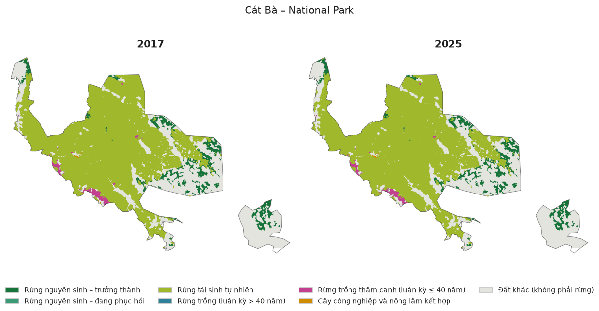
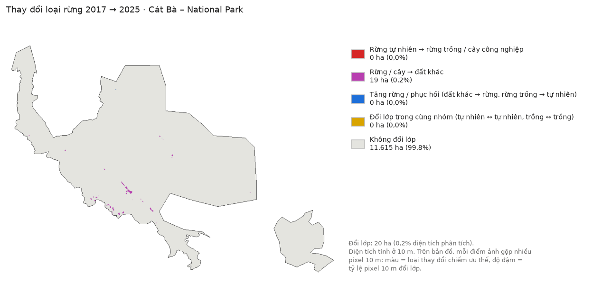
Các chuyển đổi lớp lớn nhất 2017 → 2025
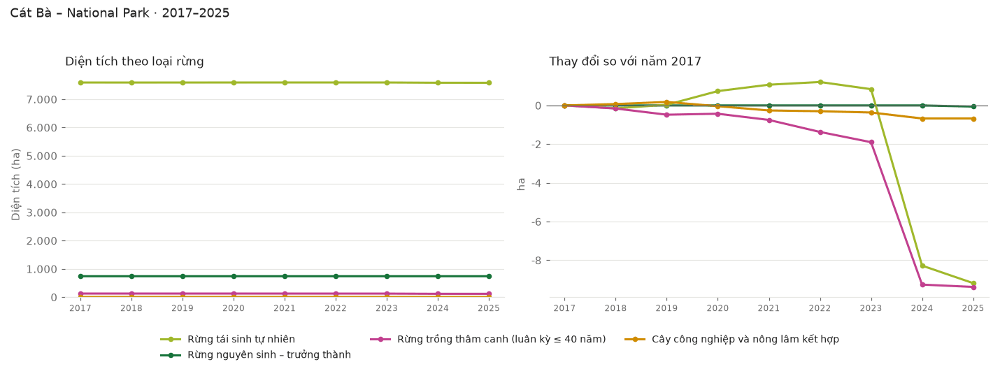
Bảng số liệu (ha)
2. Cúc Phương
Cuc Phuong · National Park (National) · IUCN II · công nhận 1962 · WDPA 7878 · 22.346 ha
Nhận xét do AI viết (gemini-3.8-flash)Giai đoạn 2017–2025, diện tích rừng tại Vườn quốc gia Cúc Phương nhìn chung rất ổn định với tỷ lệ rừng tự nhiên duy trì ở mức 95,2%, trong đó rừng nguyên sinh – trưởng thành giữ nguyên 12.653 ha. Lớp có biến động nhiều nhất là rừng trồng thâm canh khi tăng 42 ha (khoảng 61,5%), từ 69 ha năm 2017 lên 111 ha năm 2025. Xu hướng diện tích của lớp rừng này cùng cây công nghiệp có sự dao động rõ rệt, đạt đỉnh vào giai đoạn 2022–2023 trước khi giảm nhẹ trở lại. Do dữ liệu vệ tinh đang ở giai đoạn thử nghiệm, sự gia tăng của diện tích rừng trồng cần được kiểm tra thực địa vì chênh lệch này cũng có thể do nhiễu phân loại.
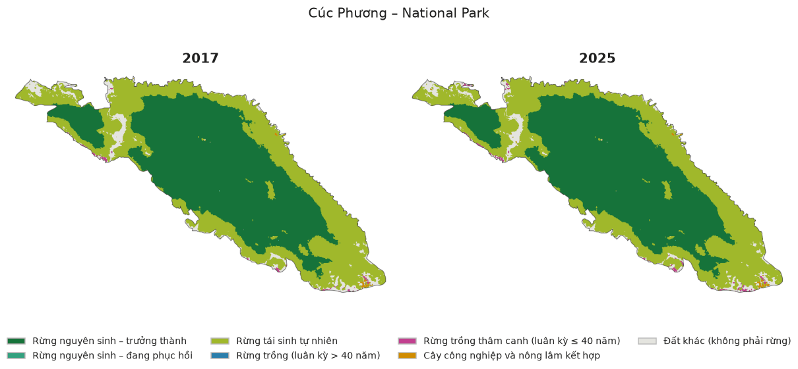
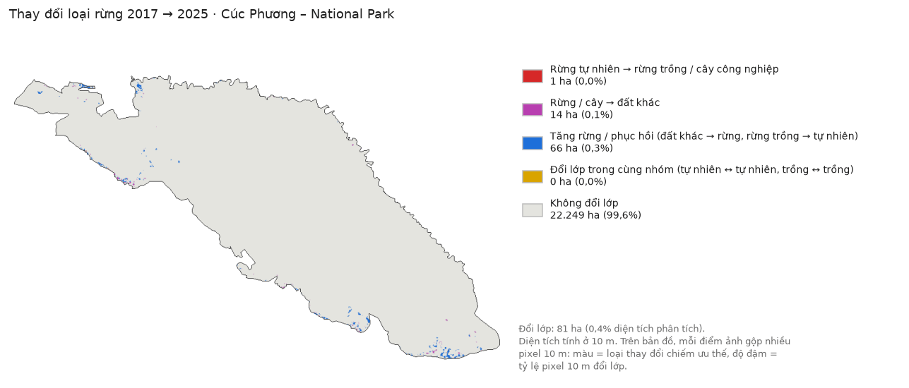
Các chuyển đổi lớp lớn nhất 2017 → 2025
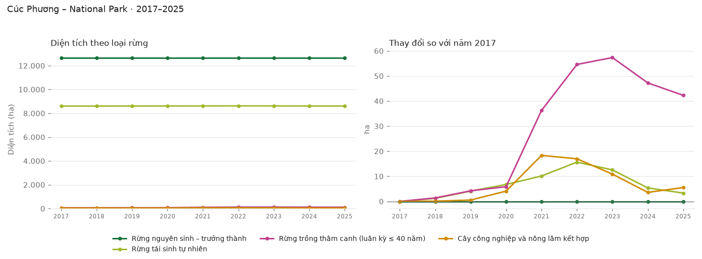
Bảng số liệu (ha)
3. Bạch Mã
Bach Ma · National Park (National) · IUCN II · công nhận 1986 · WDPA 10110 · 37.338 ha
Nhận xét do AI viết (gemini-3.8-flash)Giai đoạn 2017–2025, diện tích rừng và cây tại Vườn quốc gia Bạch Mã duy trì rất ổn định quanh mức 36.770 ha, trong đó tỷ lệ rừng tự nhiên luôn chiếm ưu thế vượt trội khi tăng nhẹ từ 98,2% lên 98,3%. Về quy mô biến động, rừng tái sinh tự nhiên tăng nhiều nhất về diện tích với 18 ha (tăng 0,2%), trong khi rừng trồng thâm canh có mức tăng tương đối lớn nhất với 6 ha (tăng 29,0%). Diện tích rừng nguyên sinh trưởng thành giữ nguyên giai đoạn đầu nhưng có xu hướng giảm nhẹ đều từ năm 2021 đến 2025 với tổng mức giảm 12 ha. Dù chênh lệch nhỏ này có thể do nhiễu phân loại của ảnh vệ tinh, khu bảo tồn vẫn cần kiểm tra thực địa tại các khu vực rừng nguyên sinh biến động để xác định diễn biến thực tế.
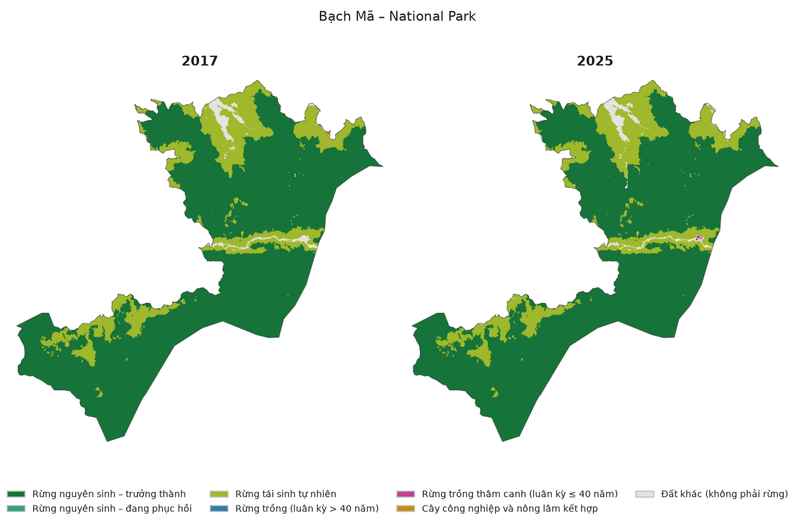
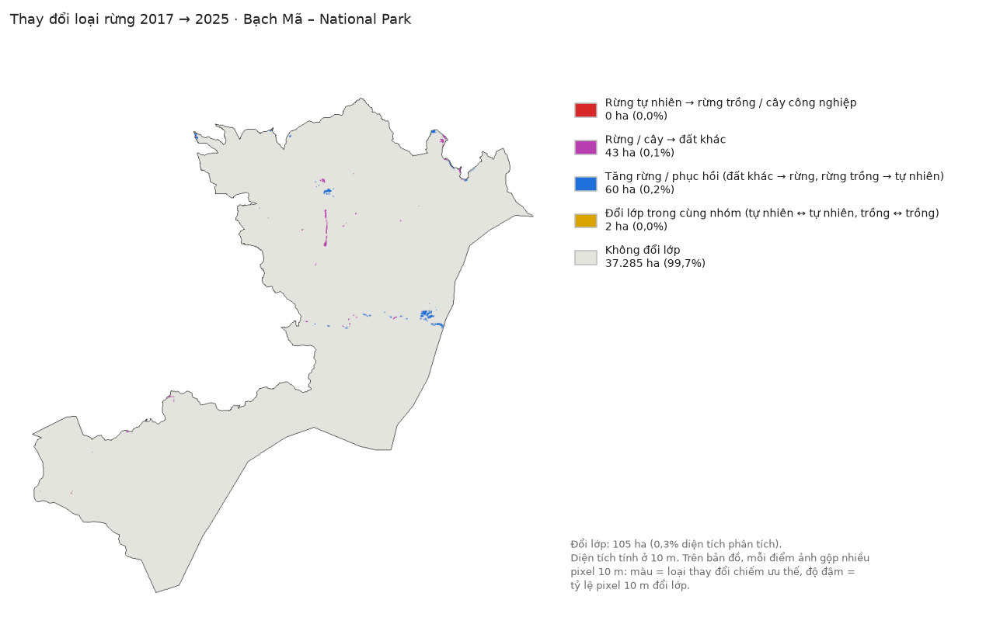
Các chuyển đổi lớp lớn nhất 2017 → 2025
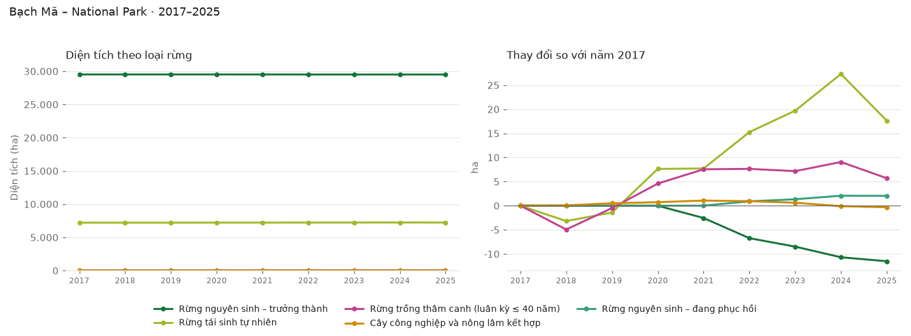
Bảng số liệu (ha)
4. Côn Đảo
Con Dao · National Park (National) · IUCN II · công nhận 1993 · WDPA 10111 · 7.274 ha
Nhận xét do AI viết (gemini-3.8-flash)Giai đoạn 2017–2025, diện tích rừng và cây tại Vườn quốc gia Côn Đảo nhìn chung ổn định với tỷ lệ che phủ rừng tự nhiên duy trì ở mức cao, từ 71,1% giảm nhẹ còn 70,9%. Trong khi rừng nguyên sinh – trưởng thành giữ nguyên 2.127 ha, lớp cây công nghiệp và nông lâm kết hợp biến động mạnh nhất khi giảm 9,9% (khoảng 17 ha), tiếp theo là rừng tái sinh tự nhiên giảm 15 ha (khoảng 0,5%). Tổng diện tích rừng và cây có xu hướng giảm nhẹ và đều đặn từ 5.350 ha xuống 5.317 ha, đi kèm diện tích đất khác tăng 33 ha. Mức chênh lệch nhỏ này có thể do chuyển đổi thực tế hoặc do nhiễu phân loại ảnh vệ tinh, vì vậy cần kiểm tra thực địa tại các vị trí biến động.
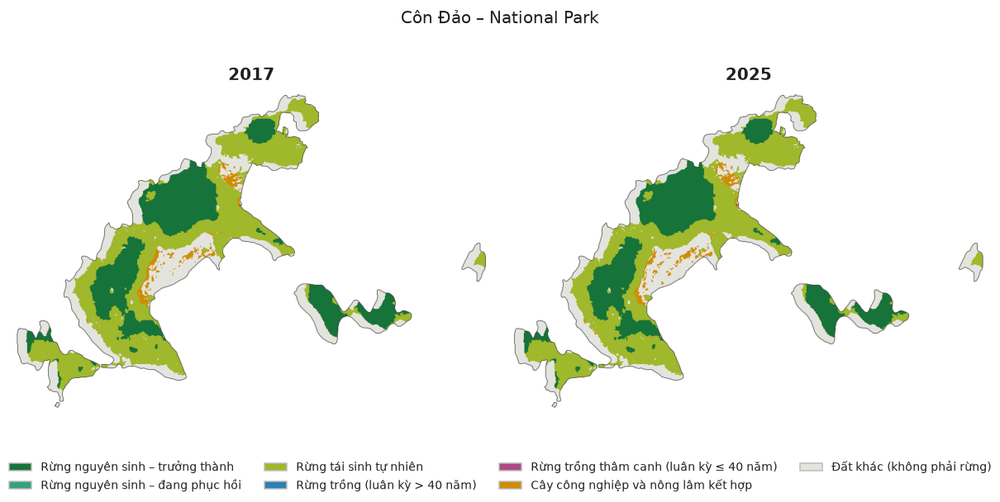
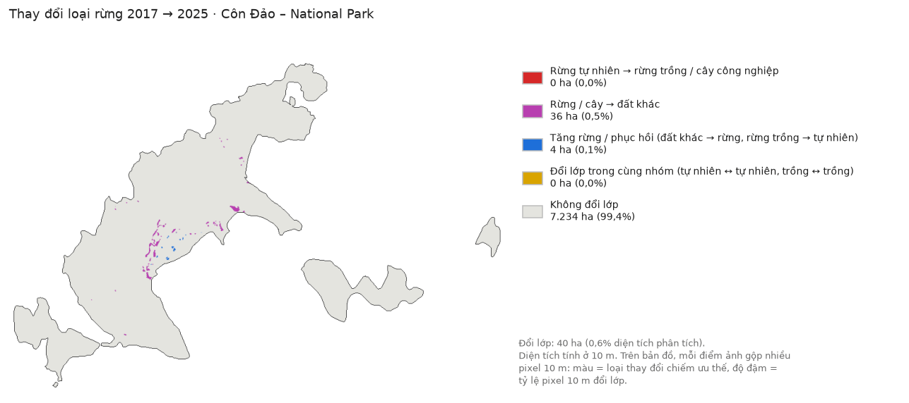
Các chuyển đổi lớp lớn nhất 2017 → 2025
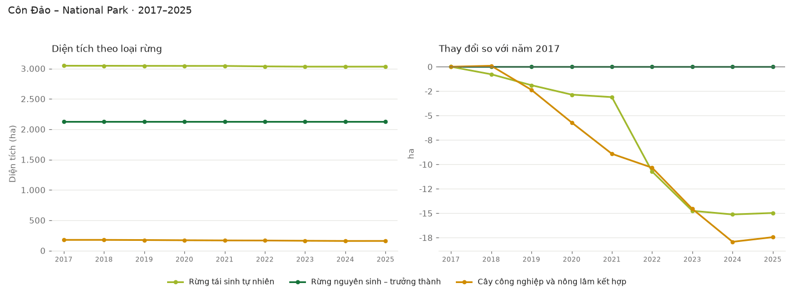
Bảng số liệu (ha)
5. Vườn quốc gia Ba Vì
Ba Vi · National Park (National) · IUCN II · công nhận 2003 · WDPA 10113 · 11.899 ha
Nhận xét do AI viết (gemini-3.8-flash)Giai đoạn 2017–2025, tổng diện tích rừng và cây tại Vườn quốc gia Ba Vì dao động rõ rệt, tăng từ 9.882 ha lên mức cao nhất 10.195 ha năm 2021 rồi giảm về 9.731 ha, song tỷ lệ rừng tự nhiên vẫn giữ ổn định quanh 65,6% đến 65,8%. Rừng trồng thâm canh là lớp thay đổi nhiều nhất khi giảm 116 ha (khoảng 5,8%), ghi nhận xu hướng tăng liên tục nửa đầu kỳ rồi sụt giảm nhanh về sau. Diện tích rừng nguyên sinh duy trì ổn định ở mức 1.048 ha, trong khi mức giảm 30 ha (khoảng 0,4%) ở rừng tái sinh tự nhiên có thể do sai số phân loại thử nghiệm. Đáng chú ý, diện tích đất không phải rừng tăng thêm 152 ha cần được kiểm tra thực địa để xác định khả năng do hoạt động khai thác luân kỳ của rừng trồng.
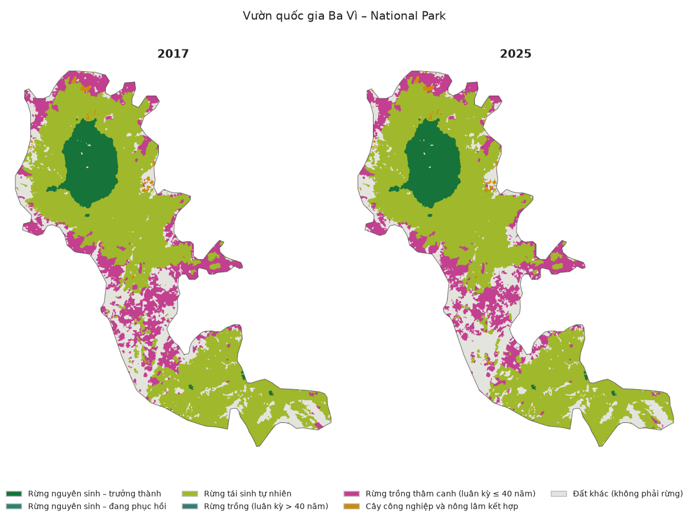
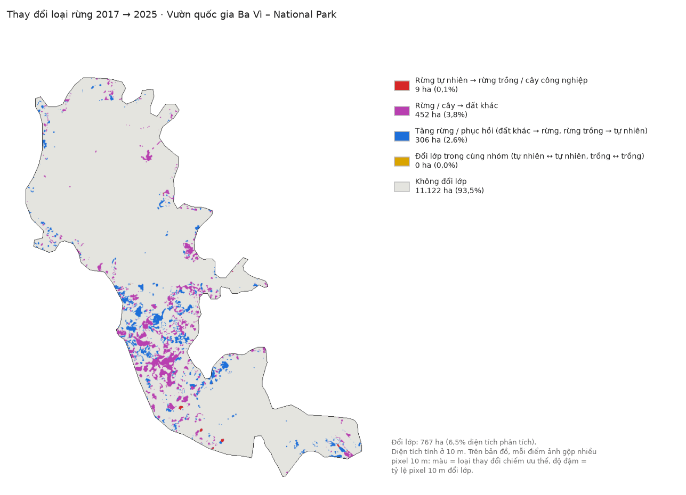
Các chuyển đổi lớp lớn nhất 2017 → 2025
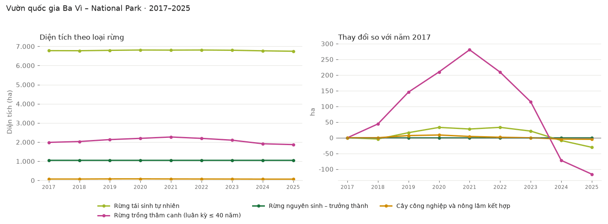
Bảng số liệu (ha)
6. Ngoc Trao
Ngoc Trao · Cultural and Historical Site (National) · IUCN V · công nhận 1986 · WDPA 10114 · 1.667 ha
Nhận xét do AI viết (gemini-3.8-flash)Giai đoạn 2017–2025, tổng diện tích rừng và cây tại khu vực tăng từ 747 ha lên 849 ha, trong khi tỷ lệ rừng tự nhiên duy trì ở mức 0,0% do diện tích rừng tái sinh chỉ chiếm 1 ha. Lớp có biến động nhiều nhất là rừng trồng thâm canh với mức tăng 104 ha (khoảng 14,7%), còn cây công nghiệp và nông lâm kết hợp giảm 2 ha (5,7%). Xu hướng che phủ không tăng đều mà dao động mạnh, giảm sâu xuống 600 ha vào năm 2019 trước khi phục hồi và duy trì ổn định quanh mức 850 ha từ năm 2022. Sự thay đổi lớn của rừng trồng thâm canh có thể do chu kỳ khai thác luân canh, song cũng cần kiểm tra thực địa để loại trừ sai số phân loại từ dữ liệu viễn thám thử nghiệm.
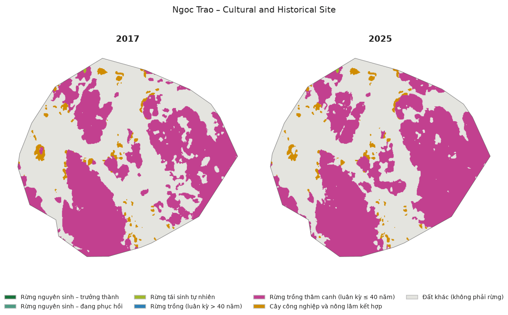
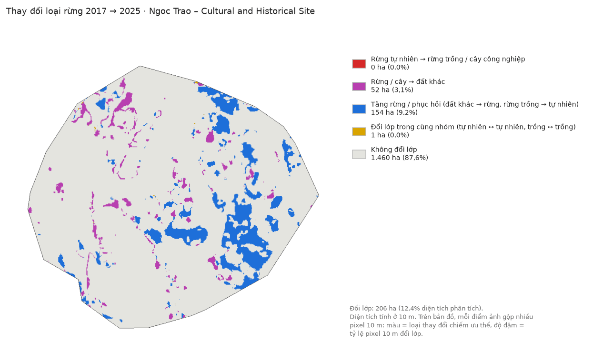
Các chuyển đổi lớp lớn nhất 2017 → 2025
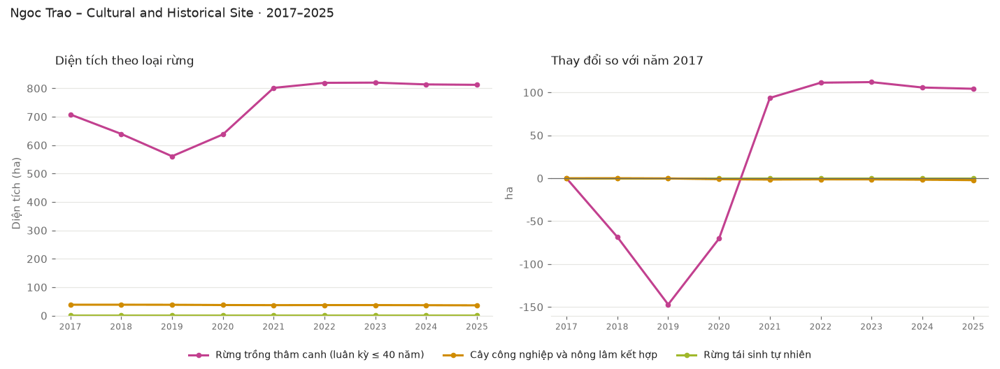
Bảng số liệu (ha)
7. Đền Hùng
Den Hung · Cultural and Historical Site (National) · IUCN V · công nhận 1977 · WDPA 10117 · 2.859 ha
Nhận xét do AI viết (gemini-3.8-flash)Giai đoạn 2017–2025, tổng diện tích rừng và cây tại Đền Hùng giảm từ 665 ha xuống 579 ha, trong khi tỷ lệ rừng tự nhiên duy trì ổn định ở mức 0,9% với 25 ha rừng tái sinh. Biến động giảm rõ rệt nhất diễn ra ở rừng trồng thâm canh với mức giảm 49 ha (giảm 14,1%) và cây công nghiệp, nông lâm kết hợp giảm 37 ha (giảm 12,7%). Tổng diện tích che phủ thể hiện xu hướng giảm tương đối đều và liên tục từ sau năm 2020, đi cùng sự gia tăng của đất khác từ 2.192 ha lên 2.278 ha. Mức suy giảm này có thể do hoạt động khai thác theo chu kỳ luân canh hoặc chuyển đổi mục đích sử dụng đất, cần được xác minh thêm qua kiểm tra thực địa.
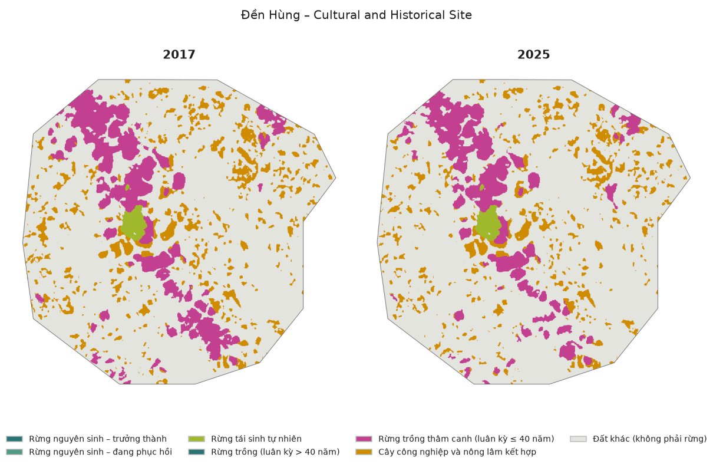
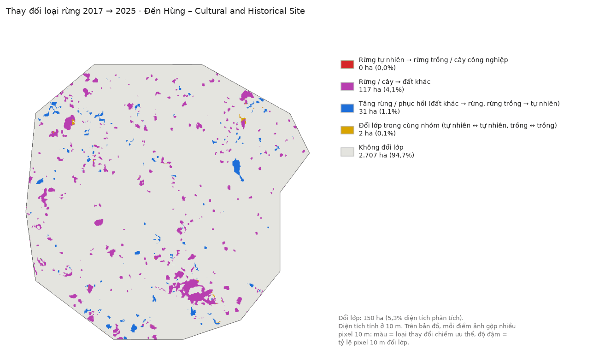
Các chuyển đổi lớp lớn nhất 2017 → 2025
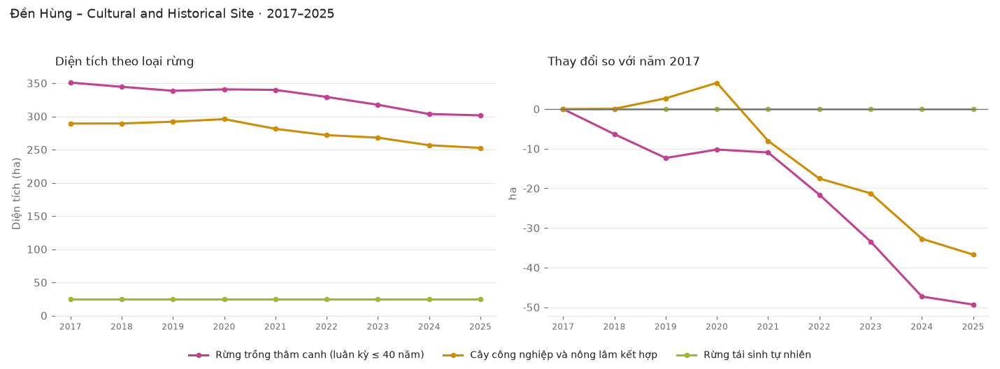
Bảng số liệu (ha)
8. Bắc Sơn
Bac Son · Nature Reserve (National) · IUCN V · công nhận 2013 · WDPA 10127 · 1.810 ha
Nhận xét do AI viết (gemini-3.8-flash)Giai đoạn 2017–2025, diện tích rừng và cây tại Khu bảo tồn Bắc Sơn biến động nhẹ theo xu hướng tăng đến năm 2022 rồi giảm xuống 1.037 ha vào năm 2025, trong khi tỷ lệ rừng tự nhiên duy trì ổn định từ 54,3% giảm nhẹ xuống 53,7%. Rừng tái sinh tự nhiên giảm diện tích tuyệt đối nhiều nhất với 11 ha (giảm 1,1%), còn rừng trồng thâm canh biến động tỷ lệ lớn nhất khi tăng 25,0% (tăng 5 ha). Xu hướng chung diễn ra dao động qua các năm chứ không tăng giảm đều đặn. Do dữ liệu mang tính thử nghiệm, mức giảm 12 ha của rừng tái sinh tự nhiên từ năm 2022 đến 2025 cần được kiểm tra thực địa để xác định là suy thoái rừng hay chỉ do nhiễu phân loại.
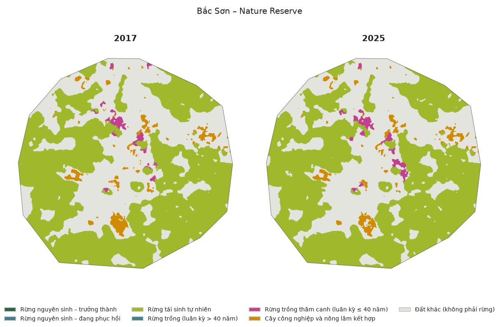
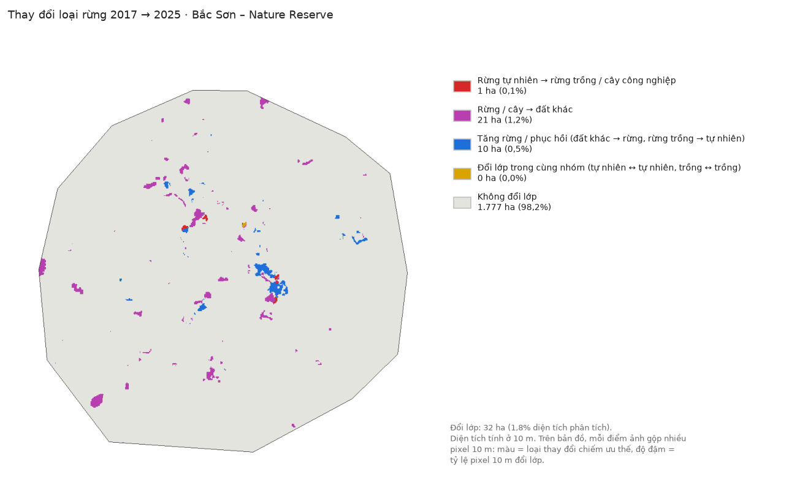
Các chuyển đổi lớp lớn nhất 2017 → 2025
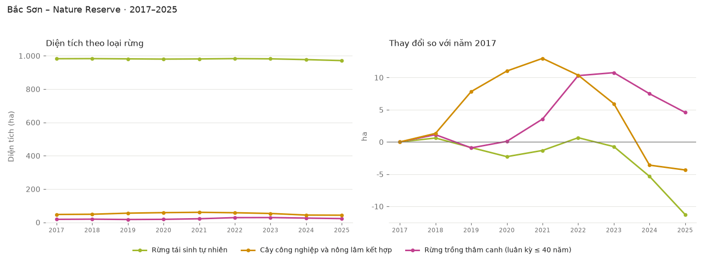
Bảng số liệu (ha)
9. Bán đảo Sơn Trà
Ban dao Son Tra · Nature Reserve (National) · IUCN Not Reported · công nhận 1992 · WDPA 10187 · 3.815 ha
Nhận xét do AI viết (gemini-3.8-flash)Giai đoạn 2017–2025, độ che phủ rừng tại Bán đảo Sơn Trà duy trì rất ổn định với tỷ lệ rừng tự nhiên chiếm ưu thế vượt trội, tăng nhẹ từ 95,8% lên 95,9%. Về quy mô biến động, rừng tái sinh tự nhiên tăng 5 ha (0,1%), trong khi rừng trồng thâm canh giảm mạnh nhất về tỷ lệ với mức giảm 2 ha (-100,0%) và rừng nguyên sinh giữ nguyên ở mức 135 ha. Nhìn chung, tổng diện tích rừng và cây phân bố đều và chỉ dao động nhỏ trong biên độ hẹp từ 3.661 ha đến 3.666 ha. Do mức chênh lệch rất nhỏ này có thể do nhiễu phân loại từ bản đồ vệ tinh ForTy V2 Beta, ban quản lý cần kiểm tra thực địa tại các vị trí từng có rừng trồng để xác định chính xác thực trạng phục hồi.
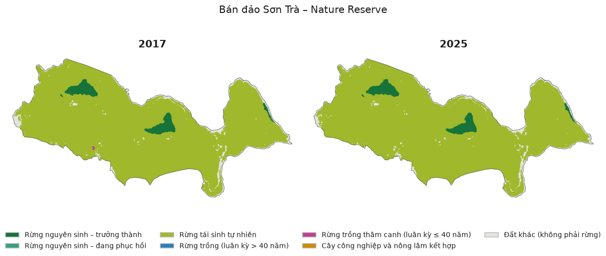
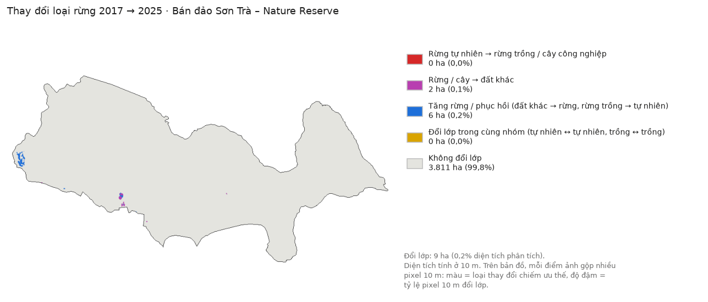
Các chuyển đổi lớp lớn nhất 2017 → 2025
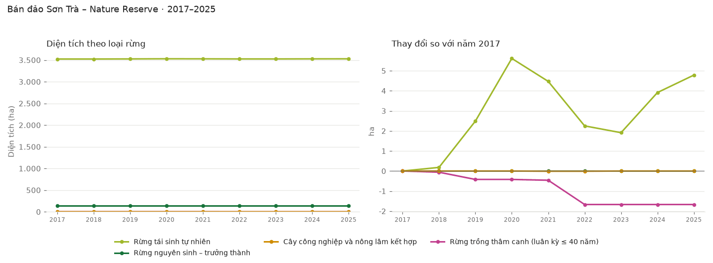
Bảng số liệu (ha)
10. Vườn quốc gia Ba Bể
Ba Be · National Park (National) · IUCN Not Reported · công nhận 1992 · WDPA 10188 · 9.941 ha
Nhận xét do AI viết (gemini-3.8-flash)Giai đoạn 2017–2025, diện tích rừng tại Vườn quốc gia Ba Bể duy trì khá ổn định với tỷ lệ che phủ rừng tự nhiên rất cao, chỉ giảm nhẹ từ 86,3% xuống 86,1%. Rừng nguyên sinh – trưởng thành giữ nguyên 2.915 ha, trong khi rừng tái sinh tự nhiên giảm nhiều nhất về diện tích với 24 ha (giảm 0,4%), còn rừng trồng thâm canh tăng mạnh nhất theo tỷ lệ là 20,8% (khoảng 2 ha). Diện tích rừng tái sinh có xu hướng giảm đều đặn qua các năm từ sau năm 2019, tương ứng với mức tăng 23 ha của đất khác. Chênh lệch diện tích này có thể do sai số phân loại ảnh vệ tinh, song khu bảo tồn vẫn cần kiểm tra thực địa tại các vùng rừng tái sinh suy giảm để xác minh nguy cơ tác động ven rìa.
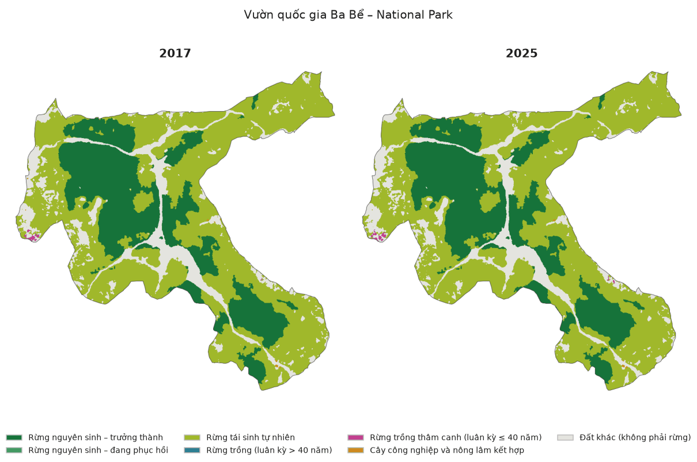
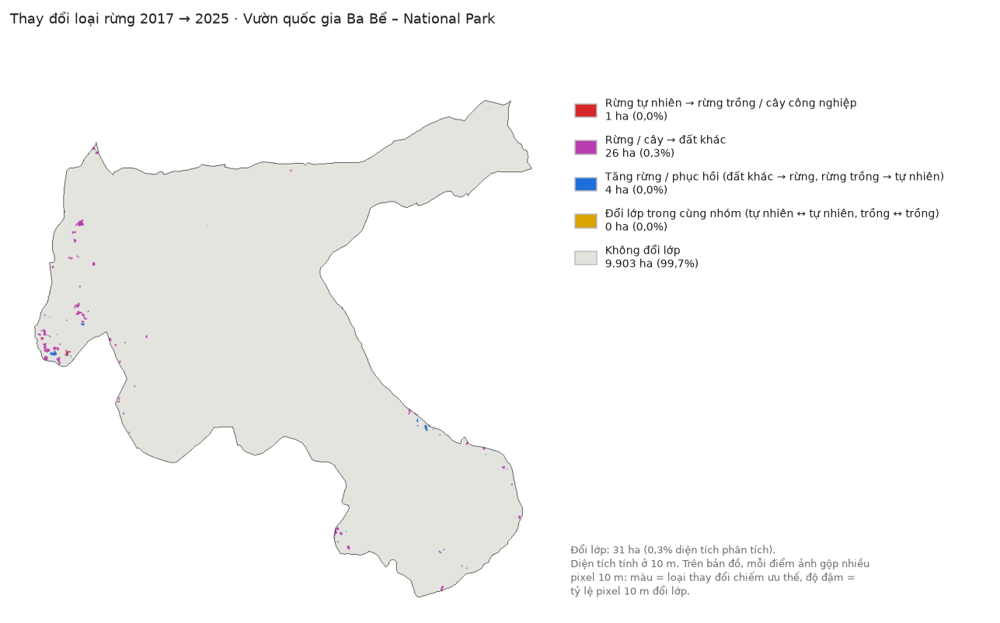
Các chuyển đổi lớp lớn nhất 2017 → 2025
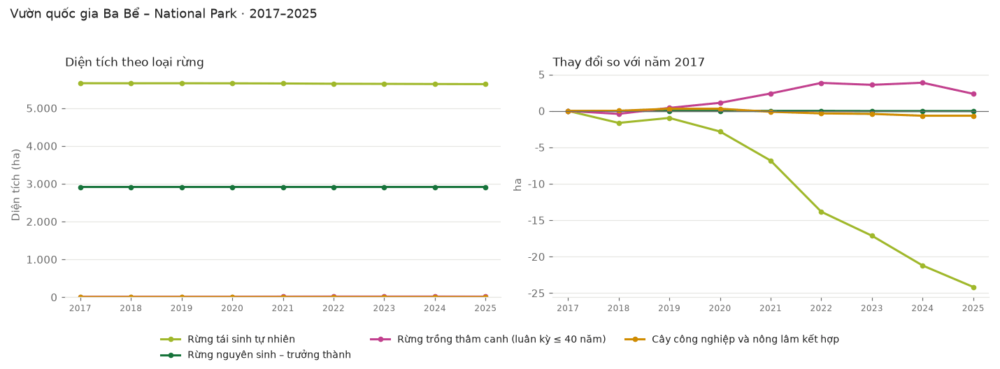
Bảng số liệu (ha)
11. Pắc Bó
Pac Bo · Cultural and Historical Site (National) · IUCN V · công nhận 2007 · WDPA 10329 · 4.953 ha
Nhận xét do AI viết (gemini-3.8-flash)Giai đoạn 2017–2025, tổng diện tích rừng tại Khu bảo tồn Pắc Bó duy trì rất ổn định, trong đó tỷ lệ rừng tự nhiên giữ vững quanh mức 76,1% năm 2017 và 76,0% năm 2025. Biến động lớn nhất về quy mô là rừng trồng thâm canh tăng khoảng 6,0 ha (tương ứng 4,7%), còn rừng trồng luân kỳ trên 40 năm giảm nhiều nhất về tỷ lệ với 7,5% (giảm khoảng 1,0 ha). Lớp rừng tái sinh tự nhiên giữ vai trò chủ đạo nhưng ghi nhận mức giảm nhẹ khoảng 5,0 ha (giảm 0,1%). Xu hướng chung phản ánh tính ổn định nhiều năm với các chênh lệch diện tích hàng năm diễn ra rất nhỏ. Sự sụt giảm nhẹ của rừng tái sinh tự nhiên vào năm 2025 có thể do nhiễu phân loại vệ tinh và cần được kiểm tra thực địa để xác minh.
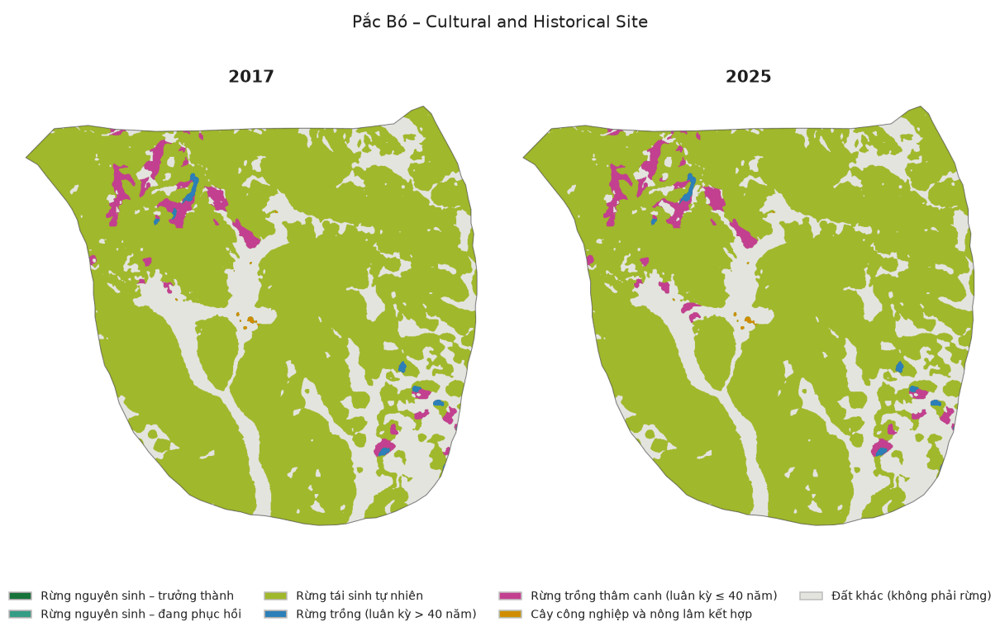
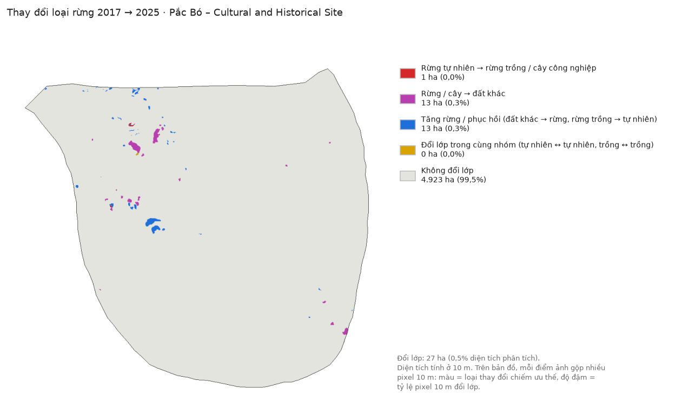
Các chuyển đổi lớp lớn nhất 2017 → 2025
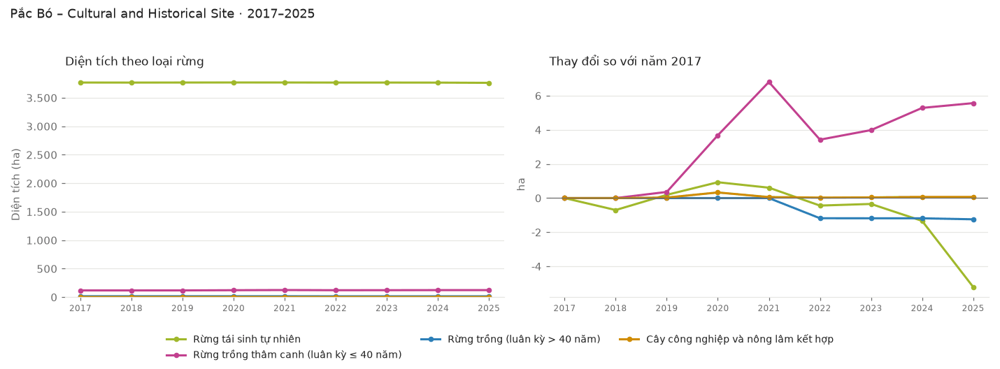
Bảng số liệu (ha)
12. Tân Trào
Tan Trao · Cultural and Historical Site (National) · IUCN V · công nhận 2014 · WDPA 10330 · 3.706 ha
Nhận xét do AI viết (gemini-3.8-flash)Giai đoạn 2017–2025, diện tích rừng và cây gỗ tại khu bảo tồn Tân Trào tăng từ 1.995 ha lên 2.178 ha, với tỷ lệ rừng tự nhiên duy trì ổn định ở mức 26,1%. Biến động mạnh nhất diễn ra ở rừng trồng thâm canh khi tăng 188 ha (19,1%), nhưng không ổn định mà đạt đỉnh 1.289 ha năm 2021 rồi dao động giảm dần. Sự thay đổi này có thể do chu kỳ khai thác và trồng lại, trong khi rừng nguyên sinh hoàn toàn ổn định ở 224 ha. Cần kiểm tra thực địa hiện trạng các lô rừng trồng và lưu ý mức giảm 1 ha ở rừng tái sinh có thể chỉ là nhiễu phân loại.
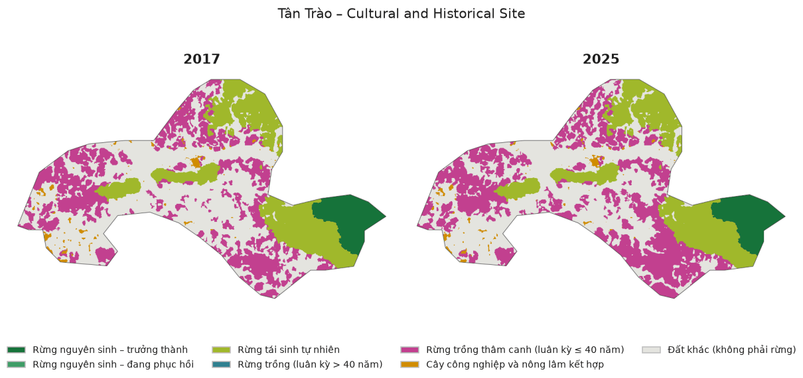
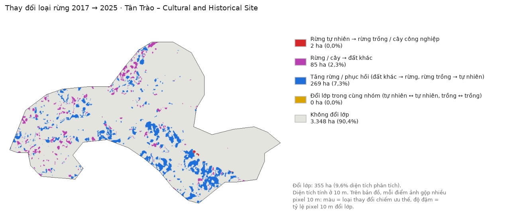
Các chuyển đổi lớp lớn nhất 2017 → 2025
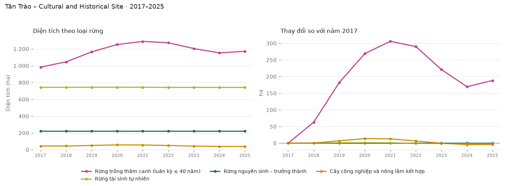
Bảng số liệu (ha)
13. Dao Ho Song Da
Dao Ho Song Da · Cultural and Historical Site (National) · IUCN V · công nhận 1986 · WDPA 10337 · 7.849 ha
Nhận xét do AI viết (gemini-3.8-flash)Giai đoạn 2017–2025, tổng diện tích rừng và cây tại Đảo Hồ Sông Đà giảm nhẹ từ 5.242 ha xuống 5.128 ha, khiến tỷ lệ rừng tự nhiên giảm từ 62,3% xuống 61,0%. Rừng tái sinh tự nhiên giảm nhiều nhất về diện tích với khoảng 101 ha (giảm 2,2%), trong khi cây công nghiệp và nông lâm kết hợp giảm mạnh nhất về tỷ lệ là 6,3% (khoảng 7 ha). Diện tích rừng trồng thâm canh biến động không đều khi tăng đến 317 ha vào năm 2021 rồi giảm xuống 235 ha năm 2025, có thể do chu kỳ khai thác gỗ. Cần lưu ý kiểm tra thực địa đà suy giảm liên tục của rừng tái sinh từ sau năm 2021 để loại trừ khả năng sai số từ dữ liệu phân loại thử nghiệm.
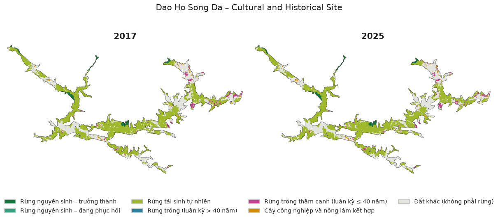
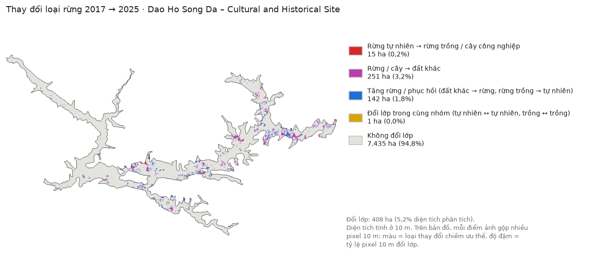
Các chuyển đổi lớp lớn nhất 2017 → 2025
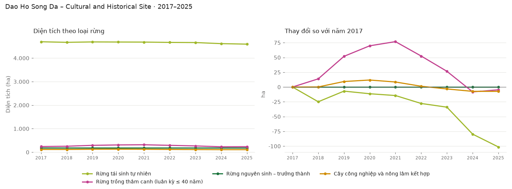
Bảng số liệu (ha)
14. Lam Son
Lam Son · Cultural and Historical Site (National) · IUCN V · công nhận 1986 · WDPA 10338 · 3.243 ha
Nhận xét do AI viết (gemini-3.8-flash)Giai đoạn 2017–2025, tổng diện tích rừng và cây tại khu vực Lam Sơn có xu hướng tăng từ 682 ha lên 787 ha, trong khi tỷ lệ rừng tự nhiên duy trì ở mức 0,0%. Biến động lớn nhất diễn ra ở lớp rừng trồng thâm canh với mức tăng khá đều khoảng 115 ha (tăng 45,9%), từ 250 ha lên 364 ha. Ngược lại, diện tích cây công nghiệp và nông lâm kết hợp có xu hướng dao động khi tăng lên 467 ha vào năm 2020–2021 rồi giảm dần về 422 ha, chung cuộc giảm 10 ha (giảm 2,3%). Do dữ liệu thử nghiệm có thể xuất hiện sai số, cần kiểm tra thực địa để xác minh ranh giới mở rộng của rừng trồng và tình trạng hoàn toàn thiếu vắng rừng tự nhiên.
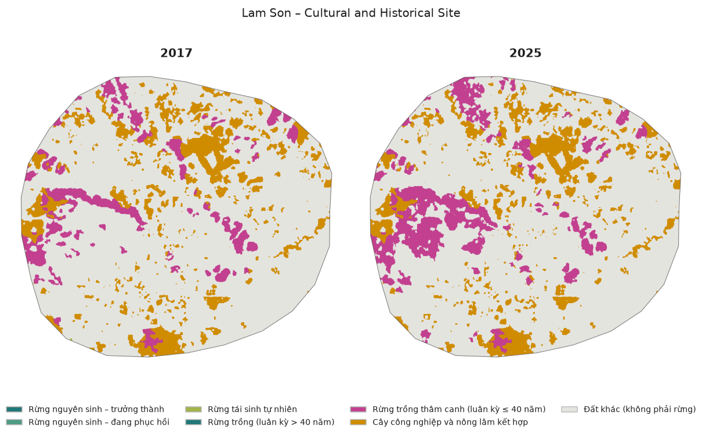
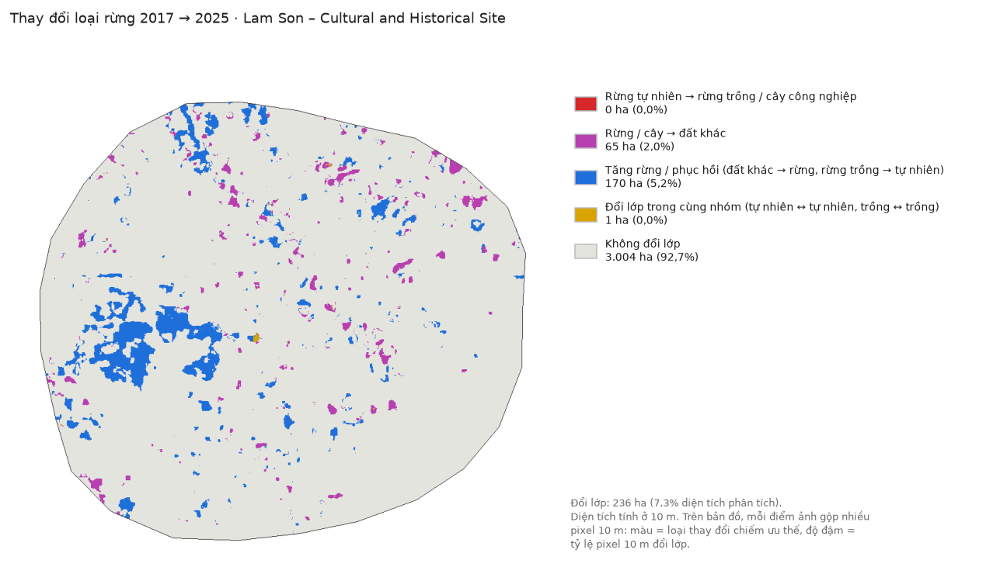
Các chuyển đổi lớp lớn nhất 2017 → 2025
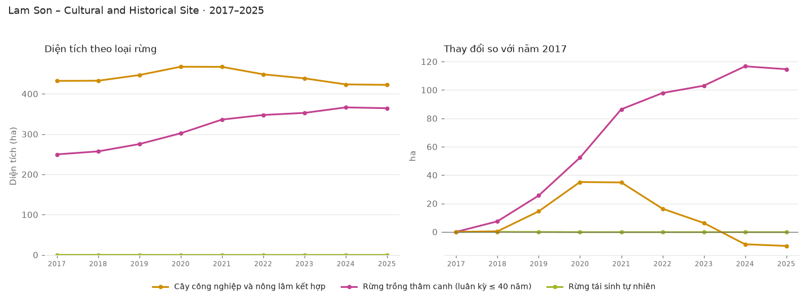
Bảng số liệu (ha)
15. Bai Chay
Bai Chay · Cultural and Historical Site (National) · IUCN V · công nhận 1986 · WDPA 10339 · 11.631 ha
Nhận xét do AI viết (gemini-3.8-flash)Giai đoạn 2017–2025, tổng diện tích rừng và cây tại khu bảo tồn Bãi Cháy có xu hướng giảm từ 442 ha xuống 285 ha, kéo theo tỷ lệ rừng tự nhiên giảm từ 3,2% xuống 2,4%. Trong khi diện tích rừng nguyên sinh – trưởng thành gần như không đổi ở mức khoảng 143–144 ha, biến động mạnh nhất xảy ra ở rừng tái sinh tự nhiên với mức giảm 94 ha (giảm 40,6%) và rừng trồng thâm canh giảm 62 ha (giảm 93,6%). Thay vì dao động đều, diễn biến rừng giữ ổn định trong phần lớn chu kỳ từ năm 2017 đến năm 2023 rồi sụt giảm đột ngột vào giai đoạn 2024–2025. Hiện tượng sụt giảm nhanh này có thể do hoạt động khai thác hoặc tác động xáo trộn cục bộ, cần được ưu tiên kiểm tra thực địa để xác minh biến động thực tế so với dữ liệu vệ tinh.
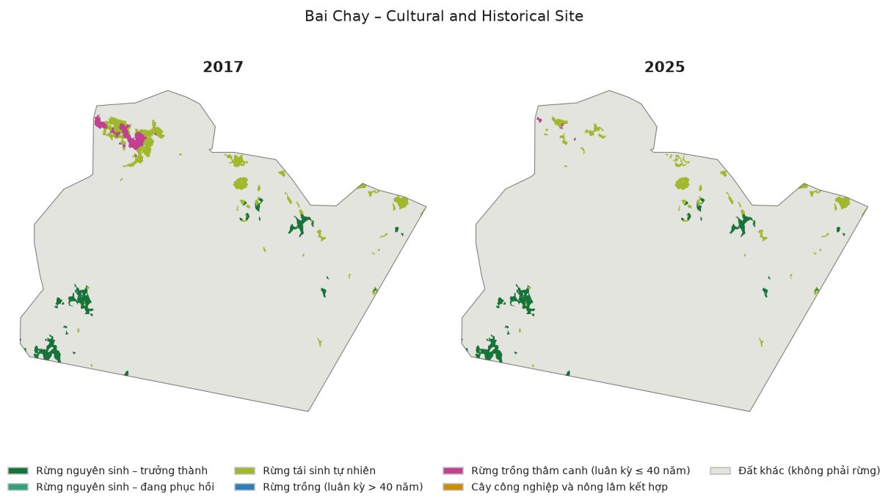
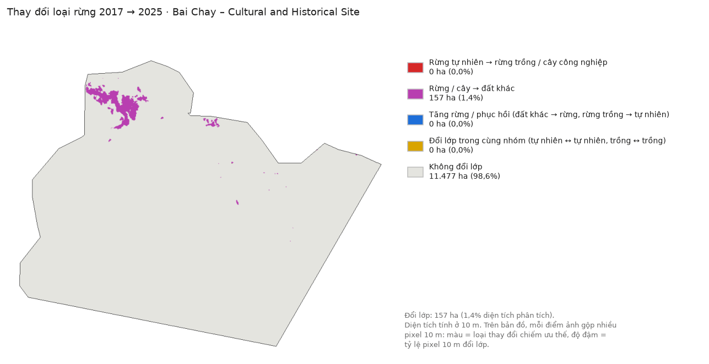
Các chuyển đổi lớp lớn nhất 2017 → 2025
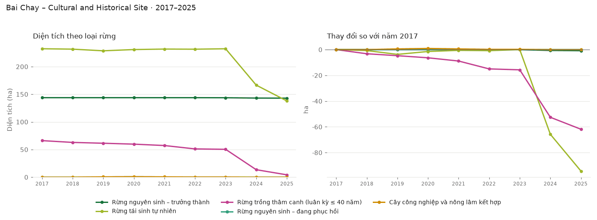
Bảng số liệu (ha)
16. Do Son
Do Son · Cultural and Historical Site (National) · IUCN V · công nhận 1986 · WDPA 10341 · 1.545 ha
Nhận xét do AI viết (gemini-3.8-flash)Giai đoạn 2017–2025, tổng diện tích rừng và cây tại khu vực suy giảm từ 140,0 ha xuống 114,0 ha, trong khi tỷ lệ rừng tự nhiên duy trì ở mức rất thấp, hạ từ 3,1% xuống 2,8%. Diễn biến che phủ giữ ổn định trong giai đoạn 2017–2023 quanh mức 138,0–141,0 ha, nhưng giảm mạnh từ năm 2024. Trong đó, rừng trồng thâm canh biến động mạnh nhất khi giảm 20,0 ha (giảm 27,8%), tiếp theo là rừng tái sinh tự nhiên giảm 4,0 ha (giảm 9,3%). Đợt sụt giảm nhanh vào năm 2024–2025 có thể do hoạt động khai thác rừng trồng hoặc tác động ngoại cảnh, do đó cần kiểm tra thực địa để đối soát khả năng có nhiễu phân loại ảnh vệ tinh.
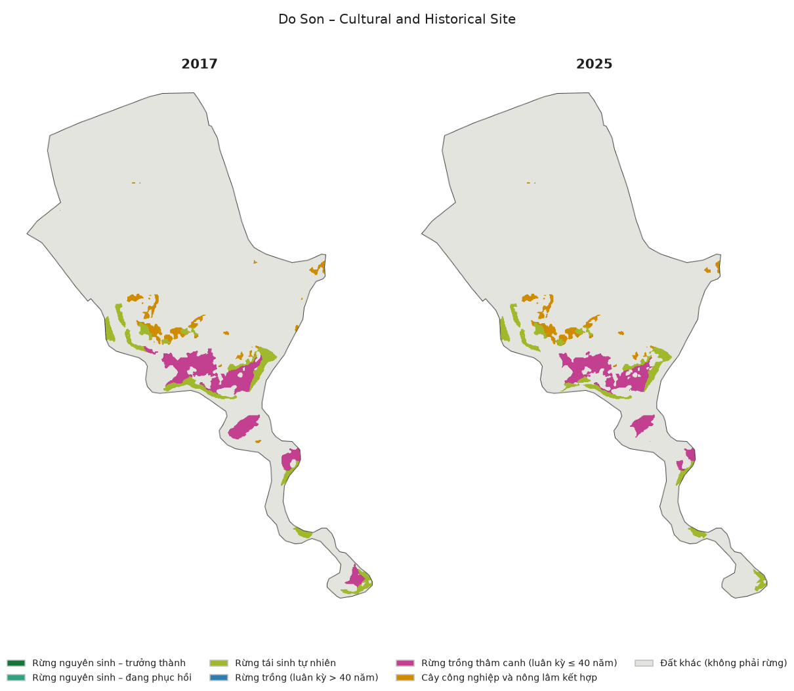
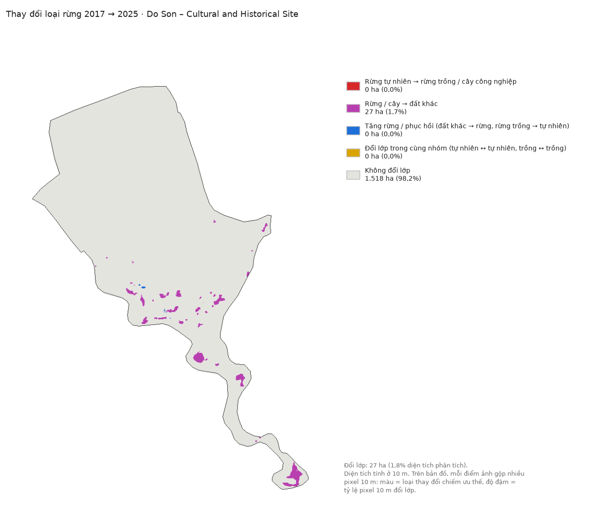
Các chuyển đổi lớp lớn nhất 2017 → 2025
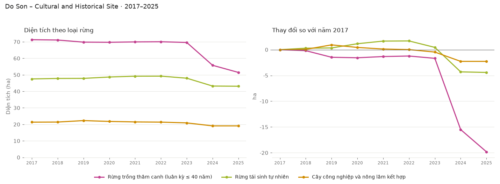
Bảng số liệu (ha)
17. Côn Sơn-Kiếp Bạc
Con Son-Kiep Bac · Cultural and Historical Site (National) · IUCN V · công nhận 2010 · WDPA 10342 · 1.676 ha
Nhận xét do AI viết (gemini-3.8-flash)Giai đoạn 2017–2025, tổng diện tích rừng và cây gỗ tại khu bảo tồn Côn Sơn-Kiếp Bạc giảm liên tục từ khoảng 838 ha xuống 722 ha, trong đó tỷ lệ rừng tự nhiên duy trì ở mức 0,0%. Rừng trồng thâm canh giảm nhiều nhất về diện tích với 74 ha (giảm 11,1%), trong khi cây công nghiệp và nông lâm kết hợp suy giảm mạnh nhất theo tỷ lệ tới 24,3% (giảm 43 ha). Xu hướng suy giảm diện tích diễn ra đều đặn qua các năm, đặc biệt giảm nhanh hơn kể từ sau năm 2021. Cần kiểm tra thực địa để xác định nguyên nhân suy giảm có thể do hoạt động khai thác luân kỳ rừng trồng hay do sai số phân loại của bản đồ vệ tinh thử nghiệm.
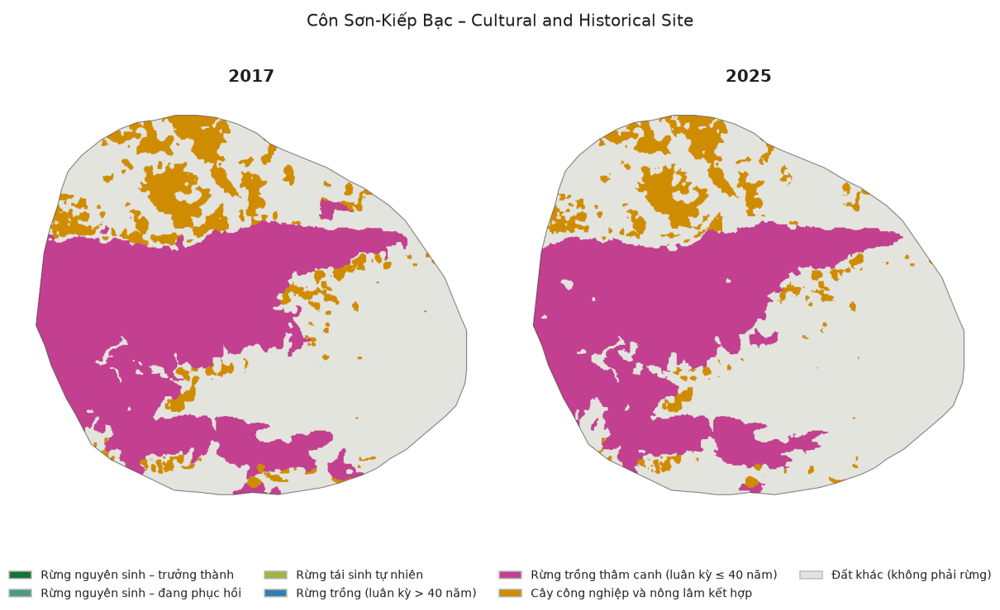
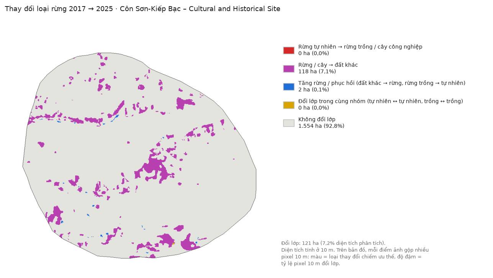
Các chuyển đổi lớp lớn nhất 2017 → 2025
Bảng số liệu (ha)
18. Hương Sơn
Huong Son · Cultural and Historical Site (National) · IUCN V · công nhận 2013 · WDPA 10343 · 3.845 ha
Nhận xét do AI viết (gemini-3.8-flash)Trong giai đoạn 2017–2025, khu bảo tồn Hương Sơn hoàn toàn không có rừng tự nhiên với tỷ lệ 0,0%, trong khi tổng diện tích cây xanh chỉ chiếm dưới 200 ha trên tổng số 3.842 ha phân tích. Lớp phủ thực vật duy nhất ghi nhận là cây công nghiệp và nông lâm kết hợp, giảm 4 ha từ 199 ha xuống 195 ha, tương ứng mức giảm 2,1%. Xu hướng suy giảm diễn ra khá đều đặn khi diện tích giữ nguyên ở mức 199 ha giai đoạn 2017–2020, sau đó giảm nhẹ khoảng 1 ha mỗi năm từ 2021 trước khi đi ngang ở năm 2025. Sự sụt giảm rất nhỏ này có thể do chuyển đổi đất hoặc chỉ là nhiễu phân loại ảnh vệ tinh, do đó cần tiến hành kiểm tra thực địa để xác thực.
Các chuyển đổi lớp lớn nhất 2017 → 2025
Bảng số liệu (ha)
19. Đền Bà Triệu
Den Ba Trieu · Cultural and Historical Site (National) · IUCN V · công nhận 2013 · WDPA 10344 · 1.119 ha
Nhận xét do AI viết (gemini-3.8-flash)Giai đoạn 2017–2025, tổng diện tích rừng và cây tại khu bảo tồn Đền Bà Triệu giảm nhẹ từ 96 ha xuống 93 ha, trong đó tỷ lệ rừng tự nhiên giữ nguyên ở mức rất thấp là 0,1%. Biến động lớn nhất là rừng trồng thâm canh với mức giảm 6,0 ha (giảm 6,2%), giảm dần xuống đáy vào năm 2022–2023 rồi phục hồi nhẹ vào năm 2025. Ngược lại, diện tích cây công nghiệp và nông lâm kết hợp tăng 2,0 ha (tăng 185,7%) sau giai đoạn ổn định 2017–2021. Do các mức biến động đều rất nhỏ, hiện tượng này có thể do nhiễu phân loại của ảnh vệ tinh thử nghiệm giữa rừng trồng và cây nông nghiệp, cần được kiểm tra thực địa để xác thực.
Các chuyển đổi lớp lớn nhất 2017 → 2025
Bảng số liệu (ha)
20. Phong Nha-Kẻ Bàng
Phong Nha-Ke Bang · National Park (National) · IUCN II · công nhận 2013 · WDPA 10345 · 121.609 ha
Nhận xét do AI viết (gemini-3.8-flash)Giai đoạn 2017–2025, diện tích rừng tại Vườn quốc gia Phong Nha-Kẻ Bàng duy trì độ ổn định rất cao với tỷ lệ rừng tự nhiên luôn giữ ở mức 99,7%. Về quy mô tuyệt đối, rừng nguyên sinh trưởng thành giảm nhiều nhất khoảng 75 ha (giảm 0,1%), trong khi rừng trồng thâm canh có tỷ lệ tăng mạnh nhất đạt 146,0% dù diện tích chỉ tăng 6 ha. Xu hướng che phủ qua các năm nhìn chung rất ổn định, chỉ ghi nhận dao động nhẹ ở lớp rừng tái sinh tự nhiên. Điểm cần lưu ý là diện tích rừng nguyên sinh đang phục hồi tăng thêm 51 ha từ năm 2020 có thể do phục hồi tự nhiên hoặc chỉ là nhiễu phân loại vệ tinh, cần được kiểm tra thực địa.
Các chuyển đổi lớp lớn nhất 2017 → 2025
Bảng số liệu (ha)
21. Bà Nà-Núi Chúa
Ba Na - Nui Chua · Nature Reserve (National) · IUCN IV · công nhận 2001 · WDPA 10346 · 26.739 ha
Nhận xét do AI viết (gemini-3.8-flash)Giai đoạn 2017–2025, diện tích rừng tại Khu bảo tồn thiên nhiên Bà Nà-Núi Chúa duy trì rất ổn định với tỷ lệ rừng tự nhiên luôn giữ vững ở mức cao, từ 92,9% năm 2017 xuống 92,8% năm 2025. Lớp có biến động nhiều nhất là rừng trồng thâm canh khi giảm 29 ha (giảm 3,6%), diễn biến theo xu hướng dao động từ 799 ha xuống đáy 646 ha năm 2021 rồi tăng dần lên 770 ha. Diện tích rừng nguyên sinh trưởng thành và rừng tái sinh tự nhiên chỉ giảm nhẹ 17 ha ở mỗi loại, mức chênh lệch nhỏ này có thể do nhiễu phân loại thử nghiệm. Điểm cần lưu ý kiểm tra thực địa là 61 ha đất khác không phải rừng gia tăng và chu kỳ khai thác luân canh của rừng trồng.
Các chuyển đổi lớp lớn nhất 2017 → 2025
Bảng số liệu (ha)
22. Núi Thành
Nui Thanh · Cultural and Historical Site (National) · IUCN V · công nhận 2014 · WDPA 10347 · 6.377 ha
Nhận xét do AI viết (gemini-3.8-flash)Giai đoạn 2017–2025, tổng diện tích rừng tại Núi Thành biến động nhẹ từ khoảng 3.250 ha xuống 3.246 ha, trong khi tỷ lệ rừng tự nhiên duy trì ổn định ở mức 23,7%. Mặc dù rừng nguyên sinh giữ nguyên 82 ha, diện tích rừng chung không biến động đều mà dao động mạnh, giảm sâu xuống 2.879 ha vào năm 2021 rồi phục hồi. Lớp có biên độ thay đổi lớn nhất là rừng trồng thâm canh khi giảm từ 1.725 ha xuống đáy 1.399 ha năm 2021 trước khi đạt 1.722 ha vào năm 2025 (giảm 3 ha, tức 0,2%), có thể do chu kỳ khai thác và trồng lại. Do đó, cần kiểm tra thực địa hoạt động khai thác rừng trồng và xác minh biến động của rừng tái sinh để loại trừ khả năng nhiễu phân loại vệ tinh.
Các chuyển đổi lớp lớn nhất 2017 → 2025
Bảng số liệu (ha)
23. Hồ Lắk
Ho Lak · Cultural and Historical Site (National) · IUCN V · công nhận 2013 · WDPA 10350 · 9.747 ha
Nhận xét do AI viết (gemini-3.8-flash)Giai đoạn 2017–2025, tổng diện tích rừng và cây tại khu bảo tồn Hồ Lắk duy trì tương đối ổn định quanh mức 5.730 ha, với tỷ lệ rừng tự nhiên tăng nhẹ từ 22,3% lên 23,3%. Rừng tái sinh tự nhiên tăng đều và nhiều nhất về diện tích với 93 ha (5,3%), trong khi cây công nghiệp và nông lâm kết hợp dao động rồi giảm nhiều nhất với 66 ha (1,9%). Rừng nguyên sinh – trưởng thành không đổi ở mức 439 ha, còn rừng trồng thâm canh giảm 5 ha (13,9%). Hiện tượng sụt giảm nhẹ ở các lớp cây trồng cần được kiểm tra thực địa vì có thể do nhiễu phân loại từ ảnh vệ tinh.
Các chuyển đổi lớp lớn nhất 2017 → 2025
Bảng số liệu (ha)
24. Khu Bảo vệ cảnh quan Đèo Cả - Hòn Nưa
Deo Ca Hon Nua · Cultural and Historical Site (National) · IUCN V · công nhận 2013 · WDPA 10351 · 21.431 ha
Nhận xét do AI viết (gemini-3.8-flash)Giai đoạn 2017–2025, diện tích rừng tại Khu Bảo vệ cảnh quan Đèo Cả - Hòn Nưa duy trì ổn định với tỷ lệ rừng tự nhiên rất cao, tăng nhẹ từ 87,3% lên 87,4%. Trong đó, rừng tái sinh tự nhiên biến động nhiều nhất về diện tích khi tăng 24 ha (tương đương 0,2%), còn rừng trồng thâm canh thay đổi nhiều nhất về tỷ lệ khi giảm 9,9% (giảm 1 ha). Tổng diện tích rừng và cây có xu hướng dao động nhẹ, giảm xuống mức thấp nhất vào năm 2020 rồi phục hồi đều đặn đến năm 2025 đạt 18.753 ha. Do chênh lệch rất nhỏ có thể xuất phát từ nhiễu phân loại ảnh vệ tinh, các khu vực biến động của rừng trồng và rừng tái sinh cần được kiểm tra thực địa để xác thực.
Các chuyển đổi lớp lớn nhất 2017 → 2025
Bảng số liệu (ha)
25. Núi Bà Rá
Nui Ba Ra · Cultural and Historical Site (National) · IUCN V · công nhận 2013 · WDPA 10352 · 1.863 ha
Nhận xét do AI viết (gemini-3.8-flash)Giai đoạn 2017–2025, tổng diện tích rừng và cây tại Núi Bà Rá giảm đều từ 1.672 ha xuống 1.611 ha, song tỷ lệ rừng tự nhiên vẫn duy trì ổn định ở mức 35,5%. Trong khi rừng nguyên sinh – trưởng thành giữ nguyên 21 ha và rừng tái sinh tự nhiên hầu như không đổi quanh mức 640–641 ha, lớp biến động mạnh nhất là cây công nghiệp và nông lâm kết hợp khi giảm liên tục 61 ha (giảm 6,0%). Sự suy giảm đều đặn qua các năm này tương ứng trực tiếp với diện tích đất khác tăng từ 191 ha lên 252 ha. Đơn vị quản lý cần kiểm tra thực địa khu vực suy giảm cây công nghiệp để xác minh nguyên nhân, vốn có thể do thay đổi canh tác hoặc do nhiễu phân loại ảnh vệ tinh thử nghiệm.
Các chuyển đổi lớp lớn nhất 2017 → 2025
Bảng số liệu (ha)
26. Núi Bà Đen
Nui Ba Den · Cultural and Historical Site (National) · IUCN V · công nhận 2014 · WDPA 10353 · 3.679 ha
Nhận xét do AI viết (gemini-3.8-flash)Giai đoạn 2017–2025, tổng diện tích rừng và cây tại Núi Bà Đen giảm đều đặn từ 2.461 ha xuống 2.364 ha, kéo theo tỷ lệ rừng tự nhiên giảm nhẹ từ 24,4% xuống 23,9%. Biến động lớn nhất diễn ra ở lớp cây công nghiệp và nông lâm kết hợp khi giảm 79 ha (tức 5,0%), trong khi rừng tái sinh tự nhiên giảm 20 ha (khoảng 2,2%). Diện tích đất khác không phải rừng tăng thêm 97 ha phản ánh xu hướng thu hẹp diện tích cây xanh diễn ra liên tục qua các năm chứ không dao động ngắn hạn. Dù vậy, một số sai khác nhỏ có thể do nhiễu phân loại của dữ liệu ForTy V2 Beta thử nghiệm, do đó cần kiểm tra thực địa để xác định chính xác hiện trạng suy giảm.
Các chuyển đổi lớp lớn nhất 2017 → 2025
Bảng số liệu (ha)
27. Hòn Chông
Hon Chong · Cultural and Historical Site (National) · IUCN V · công nhận 1986 · WDPA 10355 · 836 ha
Nhận xét do AI viết (gemini-3.8-flash)Trong giai đoạn 2017–2025, diện tích rừng tại Khu bảo tồn Hòn Chông duy trì trạng thái rất ổn định với tổng diện tích rừng và cây không đổi ở mức khoảng 833,0 ha, tỷ lệ rừng tự nhiên đạt mức rất cao từ 99,7% năm 2017 xuống 99,6% năm 2025. Lớp phủ rừng toàn bộ là rừng tái sinh tự nhiên với diện tích không dao động qua các năm, ghi nhận mức thay đổi là 0,0 ha (0,0%). Thay đổi duy nhất được ghi nhận ở lớp đất khác không phải rừng khi tăng nhẹ khoảng 1,0 ha, từ 2,0 ha lên 3,0 ha. Mức chênh lệch rất nhỏ này có thể do nhiễu phân loại ảnh vệ tinh, song đơn vị quản lý vẫn cần kiểm tra thực địa tại vị trí biến động để loại trừ nguy cơ xâm lấn cục bộ.
Các chuyển đổi lớp lớn nhất 2017 → 2025
Bảng số liệu (ha)
28. Nam Don
Nam Don · Nature Reserve (National) · IUCN IV · công nhận 1986 · WDPA 10356 · 13.449 ha
Nhận xét do AI viết (gemini-3.8-flash)Giai đoạn 2017–2025, tỷ lệ che phủ rừng tự nhiên tại Khu bảo tồn Nam Don suy giảm liên tục từ 73,0% xuống 67,4%, kéo theo tổng diện tích rừng và cây giảm từ khoảng 9.889 ha xuống 9.152 ha. Biến động rõ rệt nhất ghi nhận ở lớp rừng tái sinh tự nhiên với mức giảm 749 ha (tương đương giảm 7,6%), trong khi diện tích đất khác không phải rừng tăng từ 3.554 ha lên 4.292 ha. Xu hướng suy giảm diễn ra đều qua hầu hết các năm và chỉ chững lại vào năm 2025, trong đó mức tăng nhẹ 3 ha ở năm cuối có thể chỉ do nhiễu phân loại vệ tinh. Khu bảo tồn cần chú trọng kiểm tra thực địa các điểm rừng tái sinh bị mất diện tích, nơi có thể đã suy thoái hoặc chuyển thành đất trống.
Các chuyển đổi lớp lớn nhất 2017 → 2025
Bảng số liệu (ha)
29. Hoàng Liên
Hoang Lien · National Park (National) · IUCN II · công nhận 2002 · WDPA 10357 · 29.684 ha
Nhận xét do AI viết (gemini-3.8-flash)Giai đoạn 2017–2025, diện tích che phủ tại Vườn quốc gia Hoàng Liên duy trì ổn định với tỷ lệ rừng tự nhiên luôn ở mức 91,1%. Lớp có thay đổi diện tích lớn nhất là rừng tái sinh tự nhiên khi giảm 20 ha (khoảng 0,2%) và rừng nguyên sinh – trưởng thành giảm 9 ha (khoảng 0,1%). Xu hướng suy giảm diễn ra rất chậm nhưng khá đều qua các năm, đặc biệt là giai đoạn 2021–2025 đối với rừng tái sinh. Do chênh lệch diện tích qua các năm rất nhỏ và dữ liệu mang tính thử nghiệm, biến động này có thể do nhiễu phân loại nên cần kiểm tra thực địa tại các khu vực ghi nhận mất rừng.
Các chuyển đổi lớp lớn nhất 2017 → 2025
Bảng số liệu (ha)
30. Nui Pia Oac
Nui Pia Oac · Nature Reserve (National) · IUCN IV · công nhận 1986 · WDPA 10359 · 13.865 ha
Nhận xét do AI viết (gemini-3.8-flash)Giai đoạn 2017–2025, độ che phủ rừng tại Khu bảo tồn Núi Pia Oac duy trì ổn định quanh mức gần 11.000 ha, với tỷ lệ rừng tự nhiên giữ mức cao dù giảm nhẹ từ 75,6% xuống 75,2%. Lớp rừng nguyên sinh – trưởng thành được bảo toàn hoàn toàn ở mức 2.980 ha, trong khi rừng tái sinh tự nhiên giảm đều 44 ha (giảm 0,6%) kể từ sau năm 2019. Ngược lại, diện tích rừng trồng thâm canh có xu hướng tăng nhẹ 12 ha (tăng 3,1%). Do chênh lệch diện tích nhỏ qua các năm có thể bắt nguồn từ nhiễu phân loại vệ tinh, ban quản lý cần kiểm tra thực địa tại các vị trí suy giảm rừng tái sinh để xác thực biến động.
Các chuyển đổi lớp lớn nhất 2017 → 2025
Bảng số liệu (ha)
31. Trùng Khánh
Trung Khanh · Nature Reserve (National) · IUCN IV · công nhận 2006 · WDPA 10360 · 2.844 ha
Nhận xét do AI viết (gemini-3.8-flash)Giai đoạn 2017–2025, diện tích rừng tại Khu bảo tồn Trùng Khánh duy trì ổn định với tỷ lệ rừng tự nhiên không đổi ở mức 68,8%. Trong khi rừng nguyên sinh giữ nguyên 373 ha và rừng tái sinh tự nhiên chỉ suy giảm nhẹ khoảng 1 ha (giảm 0,1%), lớp rừng trồng thâm canh có biến động nhiều nhất khi giảm 7 ha (giảm 5,8%). Diện tích rừng trồng không biến động đều mà dao động giảm dần từ 115 ha xuống 102 ha vào năm 2023, sau đó phục hồi lên 108 ha năm 2025. Sự dao động này có thể do chu kỳ khai thác hoặc nhiễu phân loại ảnh vệ tinh, là điểm cần được kiểm tra thực địa.
Các chuyển đổi lớp lớn nhất 2017 → 2025
Bảng số liệu (ha)
32. Hữu Liên
Huu Lien · Nature Reserve (National) · IUCN IV · công nhận 2006 · WDPA 10361 · 9.675 ha
Nhận xét do AI viết (gemini-3.8-flash)Giai đoạn 2017–2025, độ che phủ rừng tại Khu bảo tồn Hữu Liên nhìn chung ổn định nhưng tỷ lệ rừng tự nhiên giảm nhẹ từ 85,8% xuống 84,8%. Rừng tái sinh tự nhiên giảm đều qua các năm và là lớp mất diện tích lớn nhất với 95 ha (giảm 1,3%), trong khi rừng nguyên sinh – trưởng thành gần như không đổi khi chỉ giảm 1 ha. Ngược lại, rừng trồng thâm canh biến động tăng mạnh nhất với 60,9% (tăng 71 ha), dù diện tích có sự dao động khi đạt đỉnh 238 ha vào năm 2023 trước khi giảm về 187 ha. Cần kiểm tra thực địa tại các khu vực biến động của rừng trồng và rừng tái sinh tự nhiên để xác minh khả năng chuyển đổi cục bộ hoặc nhiễu ảnh vệ tinh.
Các chuyển đổi lớp lớn nhất 2017 → 2025
Bảng số liệu (ha)
33. Mường Nhé
Muong Nhe · Nature Reserve (National) · IUCN IV · công nhận 2005 · WDPA 10362 · 47.766 ha
Nhận xét do AI viết (gemini-3.8-flash)Giai đoạn 2017–2025, diện tích rừng tại Khu bảo tồn thiên nhiên Mường Nhé duy trì mức độ ổn định rất cao với tỷ lệ che phủ rừng tự nhiên giữ nguyên ở mức 83,7%. Biến động giữa các lớp rừng rất nhỏ, trong đó rừng tái sinh tự nhiên tăng nhiều nhất khoảng 13 ha (0,1%), còn rừng nguyên sinh – trưởng thành giảm 10 ha (dưới 0,1%). Tổng diện tích rừng chỉ dao động nhẹ quanh 40.044 ha, và những chênh lệch nhỏ này có thể do nhiễu phân loại của dữ liệu vệ tinh thử nghiệm. Tuy nhiên, cần lưu ý kiểm tra thực địa tại các khu vực rừng nguyên sinh có xu hướng giảm nhẹ từ năm 2019 để xác minh hiện trạng.
Các chuyển đổi lớp lớn nhất 2017 → 2025
Bảng số liệu (ha)
34. Sốp Cộp
Sop Cop · Nature Reserve (National) · IUCN IV · công nhận 2002 · WDPA 10363 · 16.799 ha
Nhận xét do AI viết (gemini-3.8-flash)Giai đoạn 2017–2025, tổng diện tích rừng và cây tại Khu bảo tồn Sốp Cộp có xu hướng giảm nhẹ liên tục từ 13.949 ha xuống 13.765 ha, kéo theo tỷ lệ rừng tự nhiên giảm từ 82,5% xuống 81,4%. Biến động lớn nhất diễn ra ở lớp rừng tái sinh tự nhiên khi suy giảm đều đặn khoảng 184 ha (giảm 1,7%), trong khi cây công nghiệp và nông lâm kết hợp ghi nhận tỷ lệ tăng 21,1% nhưng thực tế chỉ tăng 1 ha. Diện tích rừng nguyên sinh trưởng thành duy trì rất ổn định quanh mức 3.195 ha. Thực địa cần tập trung rà soát các khu vực rừng tái sinh bị suy thoái chuyển sang đất khác, đồng thời lưu ý biến động nhỏ ở các lớp cây trồng có thể do nhiễu phân loại vệ tinh.
Các chuyển đổi lớp lớn nhất 2017 → 2025
Bảng số liệu (ha)
35. Xuân Sơn
Xuan Son · National Park (National) · IUCN II · công nhận 2002 · WDPA 10364 · 12.064 ha
Nhận xét do AI viết (gemini-3.8-flash)Trong giai đoạn 2017–2025, tỷ lệ rừng tự nhiên tại Vườn quốc gia Xuân Sơn duy trì ở mức cao, chỉ giảm nhẹ từ 82,8% xuống 81,9%. Tổng diện tích rừng và cây có xu hướng dao động, tăng lên đỉnh 11.082 ha vào năm 2021 rồi giảm xuống 10.593 ha năm 2025. Về biến động, rừng tái sinh tự nhiên giảm diện tích nhiều nhất với 103 ha (giảm 2,2%), trong khi cây công nghiệp và nông lâm kết hợp có tỷ lệ giảm mạnh nhất là 5,9% (giảm 12 ha). Điểm cần lưu ý kiểm tra thực địa là sự dao động lớn của diện tích rừng trồng thâm canh, có thể do hoạt động khai thác theo chu kỳ hoặc do nhiễu phân loại từ ảnh vệ tinh.
Các chuyển đổi lớp lớn nhất 2017 → 2025
Bảng số liệu (ha)
36. Xuân Nha
Xuan Nha · Nature Reserve (National) · IUCN IV · công nhận 2002 · WDPA 10365 · 18.559 ha
Nhận xét do AI viết (gemini-3.8-flash)Giai đoạn 2017–2025, tổng diện tích rừng và cây tại Khu bảo tồn thiên nhiên Xuân Nha có xu hướng giảm nhẹ liên tục từ khoảng 15.223 ha xuống 14.887 ha, kéo theo tỷ lệ che phủ rừng tự nhiên giảm từ 81,2% xuống 79,4%. Biến động đáng kể nhất diễn ra ở lớp rừng tái sinh tự nhiên với mức giảm đều đặn khoảng 330 ha (giảm 2,9%), trong khi rừng nguyên sinh – trưởng thành duy trì ổn định khi chỉ giảm 3 ha (giảm 0,1%). Sự thu hẹp của diện tích rừng tương ứng với mức tăng 336 ha đất khác không phải rừng, có thể do tác động xâm lấn cục bộ hoặc nhiễu phân loại ảnh vệ tinh. Do đó, đơn vị quản lý cần ưu tiên kiểm tra thực địa tại các khu vực rừng tái sinh bị suy giảm để xác minh diễn biến thực tế.
Các chuyển đổi lớp lớn nhất 2017 → 2025
Bảng số liệu (ha)
37. Thượng Tiến
Thuong Tien · Nature Reserve (National) · IUCN IV · công nhận 1995 · WDPA 10366 · 6.280 ha
Nhận xét do AI viết (gemini-3.8-flash)Giai đoạn 2017–2025, diện tích rừng tại Khu bảo tồn thiên nhiên Thượng Tiến duy trì ổn định với tỷ lệ rừng tự nhiên rất cao, từ 96,4% năm 2017 sang 96,3% năm 2025, trong đó rừng nguyên sinh – trưởng thành không đổi ở mức 4.056 ha. Lớp có biến động mạnh nhất là rừng trồng thâm canh khi tăng 15 ha (tương đương 66,8%), từ 23 ha lên 38 ha nhưng có xu hướng dao động liên tục qua các năm, trong khi rừng tái sinh tự nhiên giảm nhẹ 5 ha (-0,3%). Do dữ liệu bản đồ ForTy V2 Beta mang tính thử nghiệm, sự trồi sụt của rừng trồng có thể do khai thác luân kỳ hoặc nhiễu phân loại, là điểm cần được ưu tiên xác minh thực địa.
Các chuyển đổi lớp lớn nhất 2017 → 2025
Bảng số liệu (ha)
38. Bến En
Ben En · National Park (National) · IUCN II · công nhận 1992 · WDPA 10369 · 14.108 ha
Nhận xét do AI viết (gemini-3.8-flash)Giai đoạn 2017–2025, tổng diện tích rừng và cây tại Vườn quốc gia Bến En duy trì ổn định và tăng nhẹ từ 10.702 ha lên 10.820 ha, trong đó tỷ lệ rừng tự nhiên giữ nguyên ở mức 71,1%. Biến động rõ nét nhất diễn ra ở lớp rừng trồng thâm canh với xu hướng tăng đều khoảng 125 ha (tăng 20,8%), trong khi rừng nguyên sinh không đổi ở mức 372 ha và rừng tái sinh tự nhiên chỉ giảm nhẹ 6 ha (0,1%). Những dao động nhỏ vài héc-ta theo từng năm của diện tích rừng tái sinh có thể do nhiễu phân loại từ dữ liệu ảnh vệ tinh thử nghiệm. Dù vậy, khu bảo tồn cần kiểm tra thực địa tại các khu vực ghi nhận gia tăng rừng trồng để xác minh hiện trạng và bảo đảm ranh giới các kiểu rừng.
Các chuyển đổi lớp lớn nhất 2017 → 2025
Bảng số liệu (ha)
39. Hang Kia - Pà Cò
Hang Kia-Pa Co · Nature Reserve (National) · IUCN IV · công nhận 2000 · WDPA 10372 · 6.341 ha
Nhận xét do AI viết (gemini-3.8-flash)Giai đoạn 2017–2025, diện tích rừng tại Khu bảo tồn thiên nhiên Hang Kia - Pà Cò nhìn chung rất ổn định với tỷ lệ rừng tự nhiên duy trì quanh mức 54,1% đến 54,0%. Biến động đáng kể nhất diễn ra ở lớp rừng tái sinh tự nhiên với xu hướng giảm chậm và đều qua các năm, giảm 12 ha (tương ứng giảm 0,4%), trong khi rừng nguyên sinh – trưởng thành giữ nguyên mức 85 ha. Diện tích đất khác không phải rừng tăng tương ứng 11 ha, từ 2.875 ha lên 2.886 ha. Mức chênh lệch diện tích rất nhỏ này có thể do nhiễu phân loại của ảnh vệ tinh thử nghiệm, do đó cần tiến hành kiểm tra thực địa để xác minh biến động thực tế.
Các chuyển đổi lớp lớn nhất 2017 → 2025
Bảng số liệu (ha)
40. Sến Tam Quy
Sen Tam Quy · Nature Reserve (National) · IUCN IV · công nhận 2013 · WDPA 10373 · 529 ha
Nhận xét do AI viết (gemini-3.8-flash)Giai đoạn 2017–2025, diện tích rừng và cây tại Khu bảo tồn Sến Tam Quy nhìn chung rất ổn định ở mức 518 ha, với tỷ lệ rừng tự nhiên duy trì nguyên vẹn ở mức 54,0%. Trong đó, diện tích rừng tái sinh tự nhiên không đổi với 285 ha, còn lớp thay đổi nhiều nhất là rừng trồng thâm canh khi giảm nhẹ khoảng 1 ha (giảm 0,2%), từ 233 ha xuống 232 ha. Diện tích rừng trồng có xu hướng dao động nhỏ qua các năm trong khoảng từ 232 đến 234 ha. Điểm cần lưu ý là sự chênh lệch 1–2 ha này có thể do nhiễu phân loại của dữ liệu vệ tinh thử nghiệm ForTy V2 Beta, vì vậy cần kiểm tra thực địa để xác thực hiện trạng luân kỳ khai thác của rừng trồng.
Các chuyển đổi lớp lớn nhất 2017 → 2025
Bảng số liệu (ha)
41. Vũ Quang
Vu Quang · National Park (National) · IUCN II · công nhận 2002 · WDPA 10375 · 58.847 ha
Nhận xét do AI viết (gemini-3.8-flash)Giai đoạn 2017–2025, độ che phủ rừng tại Vườn quốc gia Vũ Quang nhìn chung rất ổn định với tỷ lệ rừng tự nhiên luôn giữ ở mức cao, chỉ giảm nhẹ từ 96,3% xuống 95,6%. Biến động rõ nét nhất ghi nhận ở lớp rừng tái sinh tự nhiên với mức giảm 350 ha (giảm 8,3%), chủ yếu giảm trong giai đoạn 2017–2020 rồi chững lại, trong khi rừng trồng thâm canh có xu hướng tăng đều thêm 182 ha (tăng 50,5%). Rừng nguyên sinh trưởng thành gần như không thay đổi khi chỉ giảm 67 ha (khoảng 0,1%), dao động rất nhỏ này có thể do nhiễu phân loại thử nghiệm. Ban quản lý cần chú trọng kiểm tra thực địa xu hướng gia tăng liên tục của rừng trồng thâm canh nhằm bảo đảm không tác động tiêu cực đến ranh giới rừng tự nhiên.
Các chuyển đổi lớp lớn nhất 2017 → 2025
Bảng số liệu (ha)
42. Cù Lao Chàm
Cu Lao Cham · Cultural and Historical Site (National) · IUCN V · công nhận 2014 · WDPA 10376 · 1.587 ha
Nhận xét do AI viết (gemini-3.8-flash)Giai đoạn 2017–2025, diện tích rừng tại Cù Lao Chàm duy trì trạng thái rất ổn định với tỷ lệ rừng tự nhiên chiếm từ 83,2% lên 83,3%. Cả hai trạng thái rừng chính đều không ghi nhận biến động ròng sau tám năm, trong đó rừng nguyên sinh – trưởng thành giữ nguyên ở mức 159 ha và rừng tái sinh tự nhiên duy trì khoảng 1.163 ha (đều thay đổi 0 ha, tương đương 0,0%). Xu hướng chung toàn giai đoạn hầu như không dao động, ngoại trừ năm 2021 diện tích rừng tái sinh ghi nhận giảm 1 ha xuống 1.162 ha trước khi phục hồi lại vào năm sau. Chênh lệch rất nhỏ này cùng mức tăng 1 ha của tổng diện tích rừng từ năm 2024 có thể do nhiễu phân loại ảnh vệ tinh, là điểm cần lưu ý kiểm chứng khi rà soát thực địa.
Các chuyển đổi lớp lớn nhất 2017 → 2025
Bảng số liệu (ha)
43. Kon Chư Răng
Kon Chu Rang · Nature Reserve (National) · IUCN IV · công nhận 2004 · WDPA 10377 · 13.770 ha
Nhận xét do AI viết (gemini-3.8-flash)Giai đoạn 2017–2025, diện tích rừng tại Khu bảo tồn Kon Chư Răng rất ổn định với tổng diện tích đạt khoảng 13.741 ha và tỷ lệ rừng tự nhiên luôn duy trì ở mức 92,9%. Rừng nguyên sinh – trưởng thành (12.514 ha) và rừng trồng thâm canh (932 ha) không có biến động, trong khi rừng tái sinh tự nhiên là lớp thay đổi nhiều nhất khi giảm khoảng 1 ha (giảm 0,2%). Xu hướng diễn biến rất đều đặn từ năm 2020 đến năm 2025 và mức chênh lệch nhỏ này có thể do nhiễu phân loại của dữ liệu thử nghiệm chứ không phải mất rừng thực tế. Tuy nhiên, đơn vị quản lý vẫn cần kiểm tra thực địa tại khu vực rừng tái sinh để xác thực hiện trạng và tiếp tục theo dõi diện tích rừng trồng.
Các chuyển đổi lớp lớn nhất 2017 → 2025
Bảng số liệu (ha)
44. Kon Ka Kinh
Kon Ka Kinh · National Park (National) · IUCN II · công nhận 2011 · WDPA 10378 · 42.010 ha
Nhận xét do AI viết (gemini-3.8-flash)Giai đoạn 2017–2025, diện tích rừng tại Vườn quốc gia Kon Ka Kinh nhìn chung rất ổn định với tỷ lệ rừng tự nhiên luôn duy trì ở mức cao, chỉ giảm nhẹ từ 96,2% xuống 96,0%. Trong các kiểu thảm phủ, biến động lớn nhất diễn ra ở lớp rừng tái sinh tự nhiên với mức giảm 84 ha (giảm 0,9%), trong khi rừng nguyên sinh – trưởng thành hầu như giữ nguyên khi chỉ giảm 4 ha (0,0%). Diện tích rừng tái sinh giảm liên tục trong giai đoạn 2017–2021 trước khi có xu hướng phục hồi và dao động nhẹ đến năm 2025. Tuy nhiên, việc đất khác không phải rừng tăng từ 1.390 ha lên 1.478 ha cần được kiểm tra thực địa, dù sự chênh lệch này có thể do nhiễu phân loại ảnh vệ tinh.
Các chuyển đổi lớp lớn nhất 2017 → 2025
Bảng số liệu (ha)
45. Krông Trai
Krong Trai · Nature Reserve (National) · IUCN IV · công nhận 2014 · WDPA 10379 · 13.656 ha
Nhận xét do AI viết (gemini-3.8-flash)Giai đoạn 2017–2025, tổng diện tích rừng và cây tại Khu bảo tồn Krông Trai giảm liên tục từ 7.673 ha xuống 6.508 ha, khiến tỷ lệ rừng tự nhiên giảm từ 53,7% xuống 47,4%. Rừng tái sinh tự nhiên mất nhiều diện tích nhất với 853 ha (giảm 11,7%), trong khi rừng trồng thâm canh giảm mạnh nhất về tỷ lệ tới 93,3% (khoảng 311 ha). Xu hướng suy giảm của rừng tái sinh diễn ra tương đối đều đặn qua các năm, còn rừng trồng giảm nhanh từ năm 2017 đến năm 2020 rồi dao động nhỏ ở mức thấp. Cần ưu tiên kiểm tra thực địa hiện trạng mất rừng tái sinh tự nhiên, đồng thời lưu ý diện tích rừng trồng sụt giảm mạnh có thể do khai thác luân kỳ hoặc ảnh hưởng bởi nhiễu phân loại vệ tinh.
Các chuyển đổi lớp lớn nhất 2017 → 2025
Bảng số liệu (ha)
46. Chư Yang Sin
Chu Yang Sin · National Park (National) · IUCN II · công nhận 2002 · WDPA 10380 · 60.293 ha
Nhận xét do AI viết (gemini-3.8-flash)Giai đoạn 2017–2025, diện tích rừng tại Vườn quốc gia Chư Yang Sin duy trì rất ổn định ở mức trên 59.500 ha, với tỷ lệ rừng tự nhiên giữ nguyên 85,7%. Rừng nguyên sinh – trưởng thành có mức giảm diện tích tuyệt đối lớn nhất khoảng 24 ha (giảm 0,1%), trong khi rừng nguyên sinh – đang phục hồi tăng thêm 8 ha. Xu hướng biến động nhìn chung rất ổn định nhiều năm, chỉ ghi nhận dao động nhẹ ở diện tích rừng tái sinh tự nhiên và rừng trồng thâm canh. Sự gia tăng 32 ha của đất khác không phải rừng (từ 760 ha lên 792 ha) là điểm cần kiểm tra thực địa, dù biến động nhỏ này có thể chỉ do nhiễu phân loại ảnh vệ tinh.
Các chuyển đổi lớp lớn nhất 2017 → 2025
Bảng số liệu (ha)
47. Nui Dai Binh
Nui Dai Binh · Nature Reserve (National) · IUCN IV · công nhận 1986 · WDPA 10383 · 9.625 ha
Nhận xét do AI viết (gemini-3.8-flash)Giai đoạn 2017–2025, tổng diện tích rừng và cây tại Khu bảo tồn Núi Đại Bình giảm đều từ 7.069 ha xuống 6.908 ha, trong khi tỷ lệ rừng tự nhiên duy trì ở mức rất thấp, từ 1,8% giảm còn 1,7%. Diện tích suy giảm lớn nhất thuộc về cây công nghiệp và nông lâm kết hợp với 127 ha (giảm 1,9%), còn rừng trồng thâm canh giảm mạnh nhất về tỷ lệ với 9,3% (giảm 26 ha) và có xu hướng dao động qua các năm. Lớp rừng tái sinh tự nhiên cũng ghi nhận mức giảm 9 ha (giảm 5,3%). Cần ưu tiên kiểm tra thực địa hiện trạng mất rừng tái sinh tự nhiên, đồng thời lưu ý một số biến động nhỏ có thể xuất phát từ nhiễu phân loại của dữ liệu thử nghiệm.
Các chuyển đổi lớp lớn nhất 2017 → 2025
Bảng số liệu (ha)
48. Đăkrông
Dakrong · Nature Reserve (National) · IUCN Not Reported · công nhận 2014 · WDPA 10384 · 38.506 ha
Nhận xét do AI viết (gemini-3.8-flash)Giai đoạn 2017–2025, độ che phủ rừng tại Khu bảo tồn Đăkrông rất ổn định với tỷ lệ rừng tự nhiên duy trì ở mức cao, từ 96,4% lên 96,5%. Rừng trồng thâm canh biến động nhiều nhất khi tăng 41 ha (10,4%), tiếp theo là rừng tái sinh tự nhiên tăng 29 ha (0,3%), còn rừng nguyên sinh – trưởng thành gần như không đổi khi chỉ giảm 8 ha. Thay vì tăng đều, diện tích rừng trồng và rừng tái sinh có sự dao động qua các năm, chạm đáy vào khoảng 2020–2021 trước khi phục hồi. Biến động này có thể do luân kỳ canh tác hoặc nhiễu phân loại vệ tinh thử nghiệm, do đó cần kiểm tra thực địa tại các vùng rừng trồng mở rộng.
Các chuyển đổi lớp lớn nhất 2017 → 2025
Bảng số liệu (ha)
49. Kalon Song Mao
Kalon Song Mao · Nature Reserve (National) · IUCN IV · công nhận 1986 · WDPA 10385 · 42.759 ha
Nhận xét do AI viết (gemini-3.8-flash)Giai đoạn 2017–2025, tổng diện tích rừng và cây gỗ tại Khu bảo tồn Kalon Song Mao duy trì ổn định quanh mức 38.530 ha, với tỷ lệ rừng tự nhiên giữ nguyên ở mức 74,7%. Biến động rõ nhất thuộc về rừng trồng thâm canh khi tăng đều thêm 95 ha (tăng 4,2%), trong khi cây công nghiệp và nông lâm kết hợp giảm 72 ha (giảm 1,7%). Các lớp rừng tự nhiên gần như không đổi, mức giảm từ 4 đến 23 ha dao động nhỏ qua các năm có thể do nhiễu phân loại. Cần kiểm tra thực địa sự mở rộng liên tục của rừng trồng thâm canh, có thể xuất phát từ việc chuyển đổi diện tích cây công nghiệp.
Các chuyển đổi lớp lớn nhất 2017 → 2025
Bảng số liệu (ha)
50. Núi Ông
Nui Ong · Nature Reserve (National) · IUCN IV · công nhận 2012 · WDPA 10386 · 24.220 ha
Nhận xét do AI viết (gemini-3.8-flash)Giai đoạn 2017–2025, diện tích rừng và cây tại Khu bảo tồn thiên nhiên Núi Ông duy trì trạng thái rất ổn định quanh mức 24.020 ha, với tỷ lệ rừng tự nhiên luôn giữ vững ở mức 94,5%. Biến động ghi nhận nhiều nhất diễn ra ở lớp cây công nghiệp và nông lâm kết hợp với mức tăng 3 ha (tương đương 0,3%), trong khi rừng tái sinh tự nhiên giảm 2 ha và rừng nguyên sinh không đổi ở mức 15.474 ha. Xu hướng chung qua các năm là ổn định bền vững chứ không có dao động lớn. Mức chênh lệch rất nhỏ này có thể do nhiễu phân loại của dữ liệu viễn thám thử nghiệm, do đó ban quản lý cần kiểm tra thực địa để xác thực hiện trạng.
Các chuyển đổi lớp lớn nhất 2017 → 2025
Bảng số liệu (ha)
51. Bình Châu Phước Bửu
Binh Chau-Phuoc Buu · Nature Reserve (National) · IUCN IV · công nhận 1996 · WDPA 10387 · 12.555 ha
Nhận xét do AI viết (gemini-3.8-flash)Giai đoạn 2017–2025, tổng diện tích rừng và cây tại Khu bảo tồn thiên nhiên Bình Châu Phước Bửu giảm nhẹ từ 9.078 ha xuống 9.003 ha, trong khi tỷ lệ rừng tự nhiên duy trì ổn định từ 62,8% xuống 62,4%. Lớp rừng nguyên sinh không thay đổi ở mức 2.114 ha, trong khi rừng tái sinh tự nhiên giảm diện tích nhiều nhất với 51 ha (giảm 0,9%) và rừng trồng thâm canh giảm tỷ lệ cao nhất với 2,8% (giảm 8 ha). Thay vì biến động đều, tổng diện tích có xu hướng dao động giảm tới đáy năm 2022 trước khi tăng nhẹ trở lại. Cần lưu ý kiểm tra thực địa biến động ở rừng trồng và rừng tái sinh, bởi những thay đổi nhỏ này có thể phản ánh chu kỳ khai thác luân canh hoặc chỉ là nhiễu phân loại vệ tinh.
Các chuyển đổi lớp lớn nhất 2017 → 2025
Bảng số liệu (ha)
52. Nam Nung
Nam Nung · Nature Reserve (National) · IUCN IV · công nhận 2014 · WDPA 10391 · 11.937 ha
Nhận xét do AI viết (gemini-3.8-flash)Trong giai đoạn 2017–2025, diện tích rừng tại Khu bảo tồn thiên nhiên Nam Nung duy trì rất ổn định với tỷ lệ rừng tự nhiên từ 99,6% năm 2017 xuống 99,5% năm 2025. Rừng nguyên sinh – trưởng thành giữ nguyên diện tích 8.166 ha, trong khi rừng tái sinh tự nhiên giảm 1 ha và cây công nghiệp, nông lâm kết hợp tăng 1,2% (khoảng 0 ha). Xu hướng diện tích hoàn toàn ổn định qua các năm, chênh lệch nhỏ 1 ha giữa một số thời điểm có thể do nhiễu phân loại. Cần lưu ý kiểm tra thực địa khu vực khoảng 28 ha cây công nghiệp và nông lâm kết hợp để giám sát ranh giới.
Các chuyển đổi lớp lớn nhất 2017 → 2025
Bảng số liệu (ha)
53. Lò Gò-Xa Mát
Lo Go-Xa Mat · National Park (National) · IUCN II · công nhận 2002 · WDPA 10395 · 16.588 ha
Nhận xét do AI viết (gemini-3.8-flash)Giai đoạn 2017–2025, tổng diện tích rừng và cây tại Vườn quốc gia Lò Gò-Xa Mát giảm từ khoảng 15.735 ha xuống 15.405 ha, nhưng tỷ lệ rừng tự nhiên vẫn duy trì ổn định ở mức 75,4%. Trong khi diện tích rừng nguyên sinh trưởng thành giữ nguyên 8.360 ha và rừng tái sinh hầu như không đổi, lớp cây công nghiệp và nông lâm kết hợp ghi nhận mức giảm lớn nhất với 271 ha (giảm 13,3%), tiếp đến là rừng trồng thâm canh giảm 59 ha (giảm 4,9%). Xu hướng suy giảm diễn ra từng bước nhưng có sự dao động nhẹ giữa các năm ở các nhóm cây trồng. Cần kiểm tra thực địa các vị trí cây trồng bị thu hẹp chuyển thành đất khác, dù một số biến động nhỏ có thể do nhiễu phân loại vệ tinh.
Các chuyển đổi lớp lớn nhất 2017 → 2025
Bảng số liệu (ha)
54. Duong Minh Chau
Duong Minh Chau · Cultural and Historical Site (National) · IUCN V · công nhận 1986 · WDPA 10396 · 5.946 ha
Nhận xét do AI viết (gemini-3.8-flash)Trong giai đoạn 2017–2025, tổng diện tích rừng và cây tại khu bảo tồn Dương Minh Châu giảm đều từ 2.572 ha xuống 2.374 ha, trong khi tỷ lệ rừng tự nhiên duy trì ổn định ở mức 8,3%. Lớp suy giảm diện tích nhiều nhất là cây công nghiệp và nông lâm kết hợp với mức giảm 168 ha (8,2%), còn rừng trồng thâm canh giảm mạnh nhất về tỷ lệ tới 70,3% (khoảng 31 ha). Rừng tái sinh tự nhiên duy trì diện tích 491 ha, mức chênh lệch nhỏ 1 ha qua các năm có thể do nhiễu phân loại ảnh. Ban quản lý cần kiểm tra thực địa diện tích suy giảm của cây công nghiệp và rừng trồng để xác minh khả năng chuyển đổi sang đất không phải rừng.
Các chuyển đổi lớp lớn nhất 2017 → 2025
Bảng số liệu (ha)
55. Phú Quốc
Phu Quoc · National Park (National) · IUCN II · công nhận 2001 · WDPA 10398 · 32.019 ha
Nhận xét do AI viết (gemini-3.8-flash)Giai đoạn 2017–2025, tổng diện tích rừng và cây tại Vườn quốc gia Phú Quốc giảm đều đặn từ 27.918 ha xuống 27.432 ha, khiến tỷ lệ rừng tự nhiên giảm nhẹ từ 86,3% xuống 85,0%. Trong khi rừng nguyên sinh – trưởng thành duy trì rất ổn định với mức giảm không đáng kể khoảng 3 ha, diện tích rừng tái sinh tự nhiên lại suy giảm liên tục nhiều nhất với 443 ha (tương đương 4,6%). Lớp rừng trồng thâm canh cũng ghi nhận mức giảm mạnh nhất theo tỷ lệ là 26,5% (giảm 42 ha). Cần ưu tiên kiểm tra thực địa tại các vùng suy thoái rừng tái sinh để xác minh biến động, khi diện tích đất khác tăng thêm 487 ha có thể do chuyển đổi đất hoặc do sai số phân loại thử nghiệm.
Các chuyển đổi lớp lớn nhất 2017 → 2025
Bảng số liệu (ha)
56. Chư Mom Ray
Chu Mom Ray · National Park (National) · IUCN II · công nhận 1995 · WDPA 12171 · 52.647 ha
Nhận xét do AI viết (gemini-3.8-flash)Giai đoạn 2017–2025, diện tích rừng tại Vườn quốc gia Chư Mom Ray duy trì ổn định rất cao với tỷ lệ rừng tự nhiên giữ vững ở mức 96,9%. Rừng tái sinh tự nhiên tăng nhiều nhất về diện tích với 31 ha (tăng 0,2%), trong khi diện tích cây công nghiệp và nông lâm kết hợp giảm mạnh nhất về tỷ lệ với 14 ha (giảm 6,4%). Xu hướng biến động giữa các năm diễn ra tương đối đều đặn, còn diện tích rừng nguyên sinh – trưởng thành gần như không đổi. Tuy nhiên, mức chênh lệch nhỏ này có thể do nhiễu phân loại vệ tinh thử nghiệm, do đó cần đối soát thực địa tại các khu vực ghi nhận suy giảm cây nông lâm kết hợp.
Các chuyển đổi lớp lớn nhất 2017 → 2025
Bảng số liệu (ha)
57. Yok Don
Yok Don · National Park (National) · IUCN II · công nhận 2001 · WDPA 18033 · 106.384 ha
Nhận xét do AI viết (gemini-3.8-flash)Giai đoạn 2017–2025, diện tích rừng tại Vườn quốc gia Yok Don duy trì ổn định với tỷ lệ rừng tự nhiên ở mức rất cao, từ 92,0% xuống 91,9%. Lớp rừng tái sinh tự nhiên chiếm ưu thế và giảm nhẹ đều đặn khoảng 84 ha (giảm 0,1%), trong khi diện tích rừng nguyên sinh – trưởng thành hoàn toàn không đổi ở mức 6.715 ha. Biến động tương đối lớn nhất ghi nhận ở rừng trồng thâm canh khi giảm toàn bộ 7 ha (giảm 100%), tiếp đến là cây công nghiệp và nông lâm kết hợp dao động giảm 31 ha (giảm 4,6%). Việc rừng trồng giảm về 0 ha có thể do khai thác hoặc nhiễu phân loại ảnh vệ tinh thử nghiệm, cần được ưu tiên kiểm tra thực địa để xác minh.
Các chuyển đổi lớp lớn nhất 2017 → 2025
Bảng số liệu (ha)
58. Thac Ba
Thac Ba · Cultural and Historical Site (National) · IUCN V · công nhận 1986 · WDPA 61536 · 16.072 ha
Nhận xét do AI viết (gemini-3.8-flash)Giai đoạn 2017–2025, tổng diện tích rừng và cây tại Thác Bà có xu hướng tăng nhẹ đến năm 2020 rồi giảm dần, trong đó tỷ lệ rừng tự nhiên duy trì ở mức thấp và giảm từ 10,0% xuống 9,6%. Lớp rừng trồng thâm canh có biến động diện tích lớn nhất khi giảm 126 ha (giảm 3,9%), trong khi rừng tái sinh tự nhiên giảm đều đặn qua các năm với 64 ha (giảm 4,0%). Sự dao động tăng giảm của rừng trồng có thể do hoạt động khai thác và trồng lại luân kỳ. Cần ưu tiên kiểm tra thực địa xu hướng suy thoái liên tục của rừng tái sinh tự nhiên để xác định chính xác nguy cơ mất rừng hay do ảnh hưởng từ nhiễu phân loại vệ tinh.
Các chuyển đổi lớp lớn nhất 2017 → 2025
Bảng số liệu (ha)
59. Deo Ngoau Muc
Deo Ngoau Muc · Nature Reserve (National) · IUCN IV · công nhận 1986 · WDPA 61537 · 5.065 ha
Nhận xét do AI viết (gemini-3.8-flash)Giai đoạn 2017–2025, tổng diện tích rừng và cây tại khu bảo tồn Đèo Ngoạn Mục giảm nhẹ từ 3.319 ha xuống 3.263 ha, trong khi tỷ lệ rừng tự nhiên duy trì ổn định quanh mức 27,0% đến 27,1%. Lớp biến động lớn nhất là cây công nghiệp và nông lâm kết hợp với mức giảm 52 ha (giảm 2,7%), có xu hướng giảm đều từ sau năm 2019. Trái lại, diện tích rừng tái sinh tự nhiên dao động nhẹ qua từng năm và chỉ giảm khoảng 5 ha (giảm 0,4%), chênh lệch nhỏ này có thể do nhiễu phân loại vệ tinh. Khu bảo tồn cần kiểm tra thực địa tại những khu vực suy giảm cây công nghiệp để làm rõ khả năng chuyển đổi sang đất khác không phải rừng.
Các chuyển đổi lớp lớn nhất 2017 → 2025
Bảng số liệu (ha)
60. Nam Hải Vân
Nam Hai Van · Cultural and Historical Site (National) · IUCN Not Reported · công nhận 2014 · WDPA 61539 · 9.711 ha
Nhận xét do AI viết (gemini-3.8-flash)Giai đoạn 2017–2025, tổng diện tích rừng tại khu bảo tồn Nam Hải Vân dao động khi giảm từ 8.555 ha xuống 8.135 ha năm 2022 rồi tăng lên 8.369 ha, với tỷ lệ rừng tự nhiên giảm nhẹ từ 81,7% xuống 80,4%. Rừng tái sinh tự nhiên giảm nhiều nhất về diện tích với 122 ha (giảm 2,0%), trong khi rừng trồng thâm canh giảm 61 ha (giảm 10,1%) sau đó phục hồi mạnh từ năm 2023. Diện tích rừng nguyên sinh – trưởng thành duy trì rất ổn định ở mức 1.726–1.728 ha, mức giảm 2 ha (0,1%) có thể chỉ là nhiễu phân loại vệ tinh. Cần kiểm tra thực địa diễn biến rừng trồng và rừng tái sinh tự nhiên để xác định tác động thực tế của hoạt động khai thác hoặc tái sinh.
Các chuyển đổi lớp lớn nhất 2017 → 2025
Bảng số liệu (ha)
61. Xuân Thủy
Xuan Thuy · National Park (National) · IUCN II · công nhận 2003 · WDPA 61551 · 7.083 ha
Nhận xét do AI viết (gemini-3.8-flash)Trong giai đoạn 2017–2025, tổng diện tích rừng tại Vườn quốc gia Xuân Thủy giảm nhẹ từ 810 ha xuống 793 ha, kéo theo tỷ lệ rừng tự nhiên giảm từ 11,4% xuống 11,2%. Biến động lớn nhất ghi nhận ở lớp rừng tái sinh tự nhiên khi giảm 15 ha (tương ứng giảm 4,8%), trong khi rừng nguyên sinh – trưởng thành duy trì ổn định và chỉ giảm 1 ha (khoảng 0,3%). Đáng chú ý, diện tích rừng suy giảm đều đặn qua các năm từ sau 2019 thay vì dao động ngắn hạn, phản ánh xu thế thực tế hơn là do nhiễu phân loại ảnh vệ tinh. Ban quản lý cần ưu tiên kiểm tra thực địa đối với phần rừng tái sinh suy thoái, có thể do biến đổi sang đất khác không phải rừng khi nhóm đất này tăng thêm 17 ha trong cùng kỳ.
Các chuyển đổi lớp lớn nhất 2017 → 2025
Bảng số liệu (ha)
62. Pù Mát
Pu Mat · National Park (National) · IUCN II · công nhận 2001 · WDPA 61595 · 97.104 ha
Nhận xét do AI viết (gemini-3.8-flash)Giai đoạn 2017–2025, độ che phủ rừng tại Vườn quốc gia Pù Mát duy trì ổn định rất cao với tỷ lệ rừng tự nhiên giữ vững ở mức 99,6% trên tổng diện tích phân tích 97.029 ha. Biến động lớn nhất về diện tích là rừng tái sinh tự nhiên với xu hướng giảm đều 10 ha (khoảng 0,6%), song song với việc xuất hiện thêm 8 ha rừng trồng thâm canh từ năm 2020. Lớp rừng nguyên sinh đang phục hồi có tỷ lệ tăng mạnh nhất đạt 120,2%, dù quy mô thực tế chỉ tăng 3 ha. Những sai khác rất nhỏ chỉ vài hecta qua các năm có thể do nhiễu phân loại ảnh vệ tinh, do đó cần kiểm tra thực địa tại khu vực phát sinh rừng trồng thâm canh để xác minh chính xác.
Các chuyển đổi lớp lớn nhất 2017 → 2025
Bảng số liệu (ha)
63. Cam Son
Cam Son · Cultural and Historical Site (National) · IUCN V · công nhận 1986 · WDPA 61921 · 1.701 ha
Nhận xét do AI viết (gemini-3.8-flash)Giai đoạn 2017–2025, tổng diện tích rừng và cây tại Cấm Sơn tăng từ 508 ha lên 551 ha, trong đó tỷ lệ rừng tự nhiên duy trì ổn định ở mức 8,5%. Biến động đáng kể nhất thuộc về lớp rừng trồng thâm canh với xu hướng tăng đều đặn từ 203 ha lên 245 ha, tương đương tăng 42 ha (khoảng 20,7%). Rừng tái sinh tự nhiên giữ nguyên ở mức 144 ha, trong khi diện tích cây công nghiệp và nông lâm kết hợp chỉ dao động nhẹ trong khoảng 161–165 ha, có thể do nhiễu phân loại vệ tinh. Cần ưu tiên kiểm tra thực địa các vị trí mở rộng của rừng trồng thâm canh trên đất ngoài rừng để xác thực độ chính xác của bản đồ thử nghiệm.
Các chuyển đổi lớp lớn nhất 2017 → 2025
Bảng số liệu (ha)
64. Boi Loi
Boi Loi · Cultural and Historical Site (National) · IUCN V · công nhận 1986 · WDPA 61922 · 3.112 ha
Nhận xét do AI viết (gemini-3.8-flash)Giai đoạn 2017–2025, tổng diện tích rừng và cây tại Bời Lời có xu hướng giảm tương đối đều từ 2.435 ha xuống 2.228 ha, trong đó tỷ lệ rừng tự nhiên duy trì ở mức rất thấp, chỉ từ 0,1% đến 0,2%. Lớp thực phủ biến động mạnh nhất là cây công nghiệp và nông lâm kết hợp khi giảm 207 ha (giảm 8,5%), đồng thời diện tích đất khác không phải rừng tăng từ 677 ha lên 884 ha. Diện tích rừng tái sinh tự nhiên duy trì ổn định nhiều năm ở mức khoảng 5 ha. Cần kiểm tra thực địa nguyên nhân suy giảm của cây công nghiệp chuyển sang đất khác, đồng thời lưu ý việc biến mất 1 ha rừng trồng thâm canh có thể chỉ do nhiễu phân loại của dữ liệu thử nghiệm.
Các chuyển đổi lớp lớn nhất 2017 → 2025
Bảng số liệu (ha)
65. Kẻ Gỗ
Ke Go · Nature Reserve (National) · IUCN IV · công nhận 2006 · WDPA 61931 · 23.843 ha
Nhận xét do AI viết (gemini-3.8-flash)Giai đoạn 2017–2025, độ che phủ rừng tại Khu bảo tồn Kẻ Gỗ duy trì ổn định với tỷ lệ rừng tự nhiên giữ mức cao, từ 75,5% xuống 75,3%. Trong khi rừng tự nhiên chỉ dao động nhẹ qua các năm và giảm nhiều nhất ở lớp tái sinh với 51 ha (giảm 1,1%), rừng trồng thâm canh lại có xu hướng tăng liên tục từ năm 2021 với mức tăng mạnh nhất là 148 ha (tăng 193,2%). Sự chênh lệch nhỏ ở diện tích rừng tự nhiên có thể do nhiễu phân loại vệ tinh, song đơn vị quản lý cần kiểm tra thực địa đối với sự gia tăng nhanh của rừng trồng thâm canh để xác minh biến động thực tế.
Các chuyển đổi lớp lớn nhất 2017 → 2025
Bảng số liệu (ha)
66. Tây Côn Lĩnh
Tay Con Linh · Nature Reserve (National) · IUCN Not Reported · công nhận 2002 · WDPA 61933 · 14.958 ha
Nhận xét do AI viết (gemini-3.8-flash)Giai đoạn 2017–2025, độ che phủ rừng tại Khu bảo tồn Tây Côn Lĩnh duy trì ổn định cao với tỷ lệ rừng tự nhiên đạt 94,3% năm 2017 và 94,2% năm 2025. Lớp biến động lớn nhất là rừng nguyên sinh – trưởng thành khi giảm 13 ha (giảm 0,1%), tiếp theo là rừng tái sinh tự nhiên giảm 3 ha (giảm 0,1%), trong khi rừng trồng tăng 2 ha. Xu hướng chung diễn biến ổn định nhiều năm với tổng diện tích rừng chỉ giảm 14 ha, từ 14.095 ha xuống 14.081 ha. Riêng mức giảm 12 ha ở rừng nguyên sinh trong giai đoạn 2023–2025 có thể do nhiễu phân loại hoặc biến động cục bộ, cần được kiểm tra thực địa.
Các chuyển đổi lớp lớn nhất 2017 → 2025
Bảng số liệu (ha)
67. Nam Ka
Nam Ka · Nature Reserve (National) · IUCN IV · công nhận 1991 · WDPA 61934 · 28.020 ha
Nhận xét do AI viết (gemini-3.8-flash)Giai đoạn 2017–2025, tổng diện tích rừng và cây tại Khu bảo tồn Nam Ka có xu hướng suy giảm nhẹ, kéo theo tỷ lệ rừng tự nhiên giảm từ 68,1% xuống 66,9%. Trong khi rừng nguyên sinh giữ mức ổn định cao ở khoảng 2.987 ha, rừng tái sinh tự nhiên lại giảm diện tích nhiều nhất với 340 ha (giảm 2,1%) theo xu thế giảm đều qua các năm. Lớp rừng trồng thâm canh biến động tỷ lệ lớn nhất khi giảm 45,7% (khoảng 43 ha), song diện tích dao động mạnh qua các năm có thể do khai thác luân kỳ hoặc nhiễu phân loại ảnh. Do đó, cần ưu tiên kiểm tra thực địa tại các khu vực rừng tái sinh suy giảm liên tục để đánh giá chính xác áp lực lên tài nguyên rừng.
Các chuyển đổi lớp lớn nhất 2017 → 2025
Bảng số liệu (ha)
68. Tam Đảo
Tam Dao · National Park (National) · IUCN II · công nhận 1996 · WDPA 61935 · 30.590 ha
Nhận xét do AI viết (gemini-3.8-flash)Giai đoạn 2017–2025, độ che phủ rừng tại Vườn quốc gia Tam Đảo nhìn chung ổn định với tỷ lệ rừng tự nhiên duy trì quanh mức 81,8% đến 81,9%. Biến động đáng kể nhất về diện tích là rừng trồng thâm canh khi giảm đều đặn qua các năm với 131 ha (giảm 2,8%), có thể do hoạt động khai thác luân kỳ, trong khi cây công nghiệp và nông lâm kết hợp giảm mạnh nhất về tỷ lệ là 13,9% (giảm khoảng 3 ha). Các kiểu rừng tự nhiên gần như không thay đổi, những mức chênh lệch nhỏ chỉ vài hecta nhiều khả năng do nhiễu phân loại của ảnh vệ tinh. Điểm cần lưu ý kiểm tra thực địa là diện tích đất khác không phải rừng tăng 148 ha nhằm xác định chính xác diễn biến thực tế trên mặt đất.
Các chuyển đổi lớp lớn nhất 2017 → 2025
Bảng số liệu (ha)
69. Phong Quang
Phong Quang · Nature Reserve (National) · IUCN IV · công nhận 1998 · WDPA 61936 · 8.372 ha
Nhận xét do AI viết (gemini-3.8-flash)Giai đoạn 2017–2025, tổng diện tích rừng và cây tại Khu bảo tồn Phong Quang giảm nhẹ từ 6.905 ha xuống 6.856 ha, khiến tỷ lệ rừng tự nhiên hạ từ 82,3% xuống 81,7%. Rừng nguyên sinh ổn định ở mức 1.157 ha, trong khi rừng tái sinh tự nhiên có mức suy giảm diện tích lớn nhất với 46 ha (giảm 0,8%) và cây công nghiệp, nông lâm kết hợp giảm tỷ lệ mạnh nhất tới 20,0% (1 ha). Xu hướng suy giảm của rừng tái sinh diễn ra khá đều qua các năm, còn những dao động nhỏ ở các lớp cây trồng có thể do nhiễu phân loại ảnh vệ tinh. Cần ưu tiên kiểm tra thực địa tại các khu vực rừng tái sinh chuyển sang đất khác để xác minh nguy cơ suy thoái rừng thực tế.
Các chuyển đổi lớp lớn nhất 2017 → 2025
Bảng số liệu (ha)
70. Hoàng Liên-Văn Bàn
Hoang Lien-Van Ban · Nature Reserve (National) · IUCN Not Reported · công nhận 2007 · WDPA 71337 · 21.898 ha
Nhận xét do AI viết (gemini-3.8-flash)Giai đoạn 2017–2025, diện tích rừng tại Khu bảo tồn Hoàng Liên–Văn Bàn duy trì ổn định cao với tỷ lệ rừng tự nhiên chỉ biến động nhẹ từ 94,2% xuống 94,1%. Các lớp rừng ghi nhận xu hướng giảm rất nhỏ và tương đối đều, trong đó rừng tái sinh tự nhiên giảm nhiều nhất với 7 ha (0,2%), tiếp đến là rừng nguyên sinh – trưởng thành giảm 5 ha. Ngược lại, diện tích đất khác không phải rừng tăng 12 ha, từ 1.278 ha lên 1.290 ha trong cả thời kỳ. Mức chênh lệch vài héc-ta này có thể do nhiễu phân loại của dữ liệu vệ tinh thử nghiệm, song vẫn cần kiểm tra thực địa để xác định chính xác các điểm biến động.
Các chuyển đổi lớp lớn nhất 2017 → 2025
Bảng số liệu (ha)
71. Xuan Thuy Natural Wetland Reserve
Xuan Thuy Natural Wetland Reserve · Wetland of International Importance (Ramsar Site) (International) · IUCN Not Reported · công nhận 2003 · WDPA 166887 · 10.917 ha
Nhận xét do AI viết (gemini-3.8-flash)Trong giai đoạn 2017–2025, tổng diện tích rừng và cây gỗ tại Khu bảo tồn đất ngập nước tự nhiên Xuân Thủy duy trì ổn định ở mức 18,0 ha, với tỷ lệ rừng tự nhiên chỉ chiếm 0,2% diện tích phân tích. Cả hai trạng thái rừng đều không có thay đổi nào (0,0 ha, 0,0%), trong đó rừng tái sinh tự nhiên giữ nguyên 11,0 ha và rừng nguyên sinh – trưởng thành duy trì 7,0 ha. Xu hướng phân bố hoàn toàn ổn định và không ghi nhận dao động qua từng năm. Người sử dụng cần kiểm tra thực địa để xác minh thảm thực vật, bởi diện tích rừng ghi nhận rất thấp có thể do dữ liệu vệ tinh thử nghiệm chưa nhận diện tối ưu sinh cảnh ngập nước đặc thù.
Không có pixel nào đổi lớp.
Bảng số liệu (ha)
72. Na Hang
Na Hang · Nature Reserve (National) · IUCN IV · công nhận 1994 · WDPA 302848 · 23.897 ha
Nhận xét do AI viết (gemini-3.8-flash)Giai đoạn 2017–2025, diện tích rừng tại Khu bảo tồn thiên nhiên Na Hang duy trì rất ổn định với tỷ lệ rừng tự nhiên giữ ở mức cao, chỉ giảm nhẹ từ 93,6% xuống 93,4%. Biến động lớn nhất về diện tích là rừng tái sinh tự nhiên giảm đều 67 ha (giảm 0,7%), trong khi rừng trồng thâm canh ghi nhận mức tăng tương đối cao nhất tới 30,4% (tăng 32 ha). Lớp rừng nguyên sinh trưởng thành gần như giữ nguyên khi chỉ biến động 2 ha, mức chênh lệch nhỏ này có thể do nhiễu phân loại ảnh vệ tinh. Khu vực quản lý cần lưu ý kiểm tra thực địa xu hướng gia tăng liên tục của rừng trồng thâm canh nhằm xác minh biến động thực tế và ngăn nguy cơ lấn chiếm rừng tự nhiên.
Các chuyển đổi lớp lớn nhất 2017 → 2025
Bảng số liệu (ha)
73. Kim Hỷ
Kim Hy · Nature Reserve (National) · IUCN Not Reported · công nhận 2003 · WDPA 303017 · 15.094 ha
Nhận xét do AI viết (gemini-3.8-flash)Giai đoạn 2017–2025, diện tích rừng tại Khu bảo tồn thiên nhiên Kim Hỷ nhìn chung duy trì ổn định với tỷ lệ rừng tự nhiên chỉ giảm nhẹ từ 94,4% xuống 94,0%. Rừng tái sinh tự nhiên là lớp có biến động lớn nhất khi giảm 68 ha, tương đương 1,2%, trong khi rừng nguyên sinh – trưởng thành hầu như không thay đổi với mức giảm khoảng 4 ha (giảm 0,0%). Xu hướng chung cho thấy diện tích rừng giữ rất đều từ năm 2017 đến năm 2023, nhưng tốc độ suy giảm có biểu hiện tăng nhanh hơn trong giai đoạn 2023–2025. Điểm cần lưu ý là tiến hành kiểm tra thực địa các diện tích rừng tái sinh bị mất trong hai năm gần đây, dù sự chênh lệch này cũng có thể do nhiễu phân loại từ dữ liệu ảnh vệ tinh thử nghiệm.
Các chuyển đổi lớp lớn nhất 2017 → 2025
Bảng số liệu (ha)
74. Đồng Sơn-Kỳ Thượng
Dong Son-Ky Thuong · Nature Reserve (National) · IUCN Not Reported · công nhận 2003 · WDPA 303018 · 17.052 ha
Nhận xét do AI viết (gemini-3.8-flash)Giai đoạn 2017–2025, tổng diện tích rừng và cây tại Khu bảo tồn Đồng Sơn-Kỳ Thượng giảm từ 16.533 ha xuống 15.932 ha, nhưng tỷ lệ rừng tự nhiên vẫn duy trì ổn định từ 88,1% xuống 87,6%. Biến động lớn nhất diễn ra ở rừng trồng thâm canh khi giảm 516 ha (giảm 34,2%), với xu hướng tăng đến năm 2020 rồi giảm liên tục đến năm 2025. Trong khi đó, diện tích rừng tự nhiên biến động rất ít khi rừng tái sinh chỉ giảm 85 ha (giảm 0,7%), mức chênh lệch nhỏ này có thể do nhiễu phân loại vệ tinh. Cần ưu tiên kiểm tra thực địa diện tích đất không phải rừng tăng lên 1.126 ha, nơi việc suy giảm có thể do hoạt động khai thác rừng trồng theo luân kỳ.
Các chuyển đổi lớp lớn nhất 2017 → 2025
Bảng số liệu (ha)
75. Tiền Hải
Tien Hai · Nature Reserve (National) · IUCN IV · công nhận 2014 · WDPA 303020 · 7.442 ha
Nhận xét do AI viết (gemini-3.8-flash)Trong giai đoạn 2017–2025, tổng diện tích rừng tại Khu bảo tồn Tiền Hải duy trì ổn định ở mức 441 ha, với tỷ lệ rừng tự nhiên không đổi là 5,9%. Rừng nguyên sinh – trưởng thành giữ nguyên quy mô 339 ha, trong khi rừng tái sinh tự nhiên dao động nhiều nhất khi tăng từ 102 ha lên mức cao nhất 113 ha năm 2022 rồi hạ về 102 ha năm 2025, ghi nhận mức thay đổi ròng 0 ha (0,0%). Lớp cây công nghiệp và nông lâm kết hợp cũng dao động nhẹ khi chỉ xuất hiện 1 ha vào năm 2020–2021. Mức chênh lệch tối đa khoảng 11 ha ở rừng tái sinh tự nhiên có thể do nhiễu phân loại của dữ liệu vệ tinh, cần được kiểm tra thực địa để xác thực.
Các chuyển đổi lớp lớn nhất 2017 → 2025
Bảng số liệu (ha)
76. Hoa Lư
Hoa Lu · Cultural and Historical Site (National) · IUCN Not Reported · công nhận 2014 · WDPA 303021 · 6.548 ha
Nhận xét do AI viết (gemini-3.8-flash)Giai đoạn 2017–2025, tổng diện tích rừng và cây tại khu bảo tồn Hoa Lư duy trì khá ổn định, chỉ giảm nhẹ từ 3.197 ha xuống 3.187 ha, với tỷ lệ rừng tự nhiên gần như không đổi ở mức 48,5% năm 2017 và 48,4% năm 2025. Về biến động, rừng tái sinh tự nhiên giảm nhiều nhất về quy mô với 6 ha (giảm 0,2%), trong khi rừng trồng thâm canh có tỷ lệ giảm mạnh nhất là 42,1% (tương đương 5 ha). Xu hướng chung diễn ra tương đối đều và đi ngang từ năm 2023, đồng thời diện tích rừng nguyên sinh – trưởng thành luôn giữ nguyên ở mức 308 ha. Tuy nhiên, sự suy giảm diện tích rừng trồng và rừng tái sinh cần được kiểm tra thực địa, dù mức chênh lệch nhỏ này có thể do nhiễu phân loại của dữ liệu vệ tinh thử nghiệm.
Các chuyển đổi lớp lớn nhất 2017 → 2025
Bảng số liệu (ha)
77. Xuân Liên
Xuan Lien · Nature Reserve (National) · IUCN Not Reported · công nhận 2013 · WDPA 303022 · 25.650 ha
Nhận xét do AI viết (gemini-3.8-flash)Trong giai đoạn 2017–2025, tổng diện tích rừng tại Khu bảo tồn thiên nhiên Xuân Liên duy trì rất ổn định ở mức khoảng 22.965 ha với tỷ lệ rừng tự nhiên không đổi là 89,5%. Lớp có tỷ lệ biến động lớn nhất là rừng trồng thâm canh khi tăng 3 ha (11,2%), trong khi rừng nguyên sinh – trưởng thành chỉ giảm 3 ha và rừng tái sinh tự nhiên giảm 1 ha. Thay vì biến động đều, diện tích rừng trồng dao động qua các năm trong khoảng từ 28 ha đến 38 ha, trái ngược với xu hướng ổn định nhiều năm của rừng tự nhiên. Chênh lệch vài héc-ta này có thể do nhiễu phân loại thử nghiệm, do đó cần kiểm tra thực địa để xác minh các khu vực rừng trồng phát sinh.
Các chuyển đổi lớp lớn nhất 2017 → 2025
Bảng số liệu (ha)
78. Pù Hoạt
Pu Hoat · Nature Reserve (National) · IUCN Not Reported · công nhận 2013 · WDPA 303023 · 35.166 ha
Nhận xét do AI viết (gemini-3.8-flash)Giai đoạn 2017–2025, diện tích rừng tại Khu bảo tồn thiên nhiên Pù Hoạt duy trì mức độ ổn định cao với tỷ lệ rừng tự nhiên luôn giữ vững ở mức 94,5% đến 94,6%. Về quy mô, rừng tái sinh tự nhiên tăng nhiều nhất với 21 ha (tương đương 0,2%), trong khi rừng trồng thâm canh ghi nhận mức tăng tương đối cao nhất là 220,4% (tăng 14 ha, từ 7 ha lên 21 ha). Xu hướng chung cho thấy tổng diện tích rừng tăng đều từ năm 2018 đến 2023 rồi dao động giảm nhẹ trong hai năm gần đây. Đơn vị quản lý cần kiểm tra thực địa đối với diện tích rừng trồng mới và sự suy giảm 11 ha rừng nguyên sinh – trưởng thành vào năm 2025, dù biến động nhỏ này có thể do nhiễu phân loại ảnh vệ tinh.
Các chuyển đổi lớp lớn nhất 2017 → 2025
Bảng số liệu (ha)
79. Pù Huống
Pu Huong · Nature Reserve (National) · IUCN IV · công nhận 2001 · WDPA 303024 · 42.004 ha
Nhận xét do AI viết (gemini-3.8-flash)Giai đoạn 2017–2025, diện tích rừng tại Khu bảo tồn thiên nhiên Pù Huống duy trì rất ổn định với tỷ lệ rừng tự nhiên tăng nhẹ từ 98,8% lên 98,9%. Rừng tái sinh tự nhiên tăng nhiều nhất về diện tích với 46 ha (tăng 0,4%), trong khi rừng trồng thâm canh có tỷ lệ tăng mạnh nhất đạt 485,6% nhưng thực tế chỉ tăng thêm 3 ha (từ 1 ha lên 4 ha). Xu hướng biến động tổng thể diễn ra tương đối đều đặn qua các năm, đồng thời rừng nguyên sinh – trưởng thành hầu như không đổi khi chỉ giảm 6 ha. Những thay đổi nhỏ vài héc-ta giữa các năm cùng diện tích rừng trồng mới có thể do nhiễu phân loại ảnh vệ tinh, vì vậy cần được kiểm tra thực địa để xác thực.
Các chuyển đổi lớp lớn nhất 2017 → 2025
Bảng số liệu (ha)
80. Láng Sen
Lang Sen · Nature Reserve (National) · IUCN Not Reported · công nhận 2004 · WDPA 303025 · 1.807 ha
Nhận xét do AI viết (gemini-3.8-flash)Giai đoạn 2017–2025, tổng diện tích rừng và cây tại khu bảo tồn Láng Sen giảm từ 252 ha xuống 213 ha, trong đó tỷ lệ rừng tự nhiên ở mức thấp và chỉ tăng nhẹ từ 3,5% lên 3,9%. Lớp có thay đổi lớn nhất là rừng trồng thâm canh với mức giảm 45 ha (giảm 23,8%), mang xu hướng dao động rõ rệt khi sụt sâu về 108 ha vào năm 2021 trước khi phục hồi trở lại. Ngược lại, diện tích rừng tái sinh tự nhiên tương đối ổn định và tăng đều thêm 6 ha (tăng 9,2%). Sự dao động mạnh của rừng trồng có thể do chu kỳ khai thác luân kỳ hoặc ảnh hưởng từ nhiễu phân loại viễn thám, vì vậy cần tiến hành kiểm tra thực địa để xác minh cụ thể.
Các chuyển đổi lớp lớn nhất 2017 → 2025
Bảng số liệu (ha)
81. Tràm Chim
Tram Chim · National Park (National) · IUCN II · công nhận 1998 · WDPA 303026 · 7.469 ha
Nhận xét do AI viết (gemini-3.8-flash)Giai đoạn 2017–2025, diện tích rừng và cây tại Vườn quốc gia Tràm Chim tương đối ổn định khi tăng nhẹ từ 1.623 ha lên 1.663 ha, nhưng tỷ lệ rừng tự nhiên luôn ở mức rất thấp là 0,8%. Trong đó, rừng trồng thâm canh tăng diện tích nhiều nhất với 37 ha (tương đương 2,4%), còn diện tích cây công nghiệp và nông lâm kết hợp tăng mạnh nhất về tỷ lệ là 7,7% (tăng 4 ha). Xu hướng gia tăng diễn ra khá đều qua các năm và chững lại ở mức ổn định từ năm 2021 đến nay. Do biên độ chênh lệch rất nhỏ, biến động này có thể do nhiễu phân loại vệ tinh thử nghiệm, vì vậy cần kiểm tra thực địa để xác minh chính xác diện tích rừng tái sinh tự nhiên.
Các chuyển đổi lớp lớn nhất 2017 → 2025
Bảng số liệu (ha)
82. Lung Ngọc Hoàng
Lung Ngoc Hoang · Nature Reserve (National) · IUCN IV · công nhận 2002 · WDPA 303028 · 2.733 ha
Nhận xét do AI viết (gemini-3.8-flash)Giai đoạn 2017–2025, tổng diện tích rừng và cây tại Khu bảo tồn Lung Ngọc Hoàng dao động nhẹ quanh mức 1.500 ha, trong đó tỷ lệ rừng tự nhiên duy trì rất thấp ở mức 0,3% với chỉ 7 ha rừng tái sinh tự nhiên. Lớp biến động diện tích nhiều nhất là rừng trồng thâm canh khi giảm 15 ha (giảm 1,1%), còn diện tích cây công nghiệp và nông lâm kết hợp giảm 1 ha (giảm 1,3%). Xu hướng che phủ không biến động đều mà tăng nhẹ đạt đỉnh 1.510 ha vào năm 2021 rồi giảm xuống 1.482 ha từ năm 2023 đến 2025. Cần kiểm tra thực địa sự sụt giảm rừng trồng giai đoạn 2022–2023, có thể do khai thác luân kỳ hoặc chỉ là sai số phân loại từ dữ liệu thử nghiệm.
Các chuyển đổi lớp lớn nhất 2017 → 2025
Bảng số liệu (ha)
83. Pù Hu
Pu Hu · Nature Reserve (National) · IUCN Not Reported · công nhận 2013 · WDPA 303030 · 23.996 ha
Nhận xét do AI viết (gemini-3.8-flash)Trong giai đoạn 2017–2025, diện tích rừng tại Khu bảo tồn thiên nhiên Pù Hu duy trì độ ổn định cao với tỷ lệ rừng tự nhiên rất lớn, chỉ giảm nhẹ từ 99,4% xuống 99,3%. Lớp phủ biến động nhiều nhất là rừng nguyên sinh – trưởng thành khi giảm đều 22 ha (giảm 0,2%), trong khi diện tích rừng tái sinh tự nhiên dao động nhẹ qua các năm và chỉ giảm 8 ha (giảm 0,1%). Điểm đáng lưu ý là diện tích đất khác không phải rừng tăng từ 137 ha lên 168 ha, có thể do tác động cục bộ hoặc ảnh hưởng từ sai số phân loại viễn thám, vì vậy cần được xác minh thêm qua kiểm tra thực địa.
Các chuyển đổi lớp lớn nhất 2017 → 2025
Bảng số liệu (ha)
84. Núi Cốc
Nui Coc · Cultural and Historical Site (National) · IUCN V · công nhận 2014 · WDPA 303033 · 8.982 ha
Nhận xét do AI viết (gemini-3.8-flash)Trong giai đoạn 2017–2025, tổng diện tích rừng và cây tại khu bảo tồn Núi Cốc giảm từ khoảng 3.695 ha xuống 3.338 ha, kéo theo tỷ lệ rừng tự nhiên giảm từ 7,5% xuống 6,8%. Lớp biến động mạnh nhất là rừng trồng thâm canh khi giảm 283 ha (giảm 10,1%), với xu hướng tăng nhẹ đến năm 2021 rồi sụt giảm liên tục các năm sau đó. Bên cạnh đó, diện tích rừng tái sinh tự nhiên cũng ghi nhận xu thế giảm đều đặn khoảng 56 ha (giảm 8,4%). Cần ưu tiên kiểm tra thực địa đà suy giảm nhanh của rừng trồng từ sau năm 2021, có thể do hoạt động khai thác luân kỳ hoặc chuyển đổi mục đích sang nhóm đất khác.
Các chuyển đổi lớp lớn nhất 2017 → 2025
Bảng số liệu (ha)
85. Ea Sô
Ea so · Nature Reserve (National) · IUCN Not Reported · công nhận 1999 · WDPA 303034 · 26.643 ha
Nhận xét do AI viết (gemini-3.8-flash)Giai đoạn 2017–2025, độ che phủ rừng tại Khu bảo tồn thiên nhiên Ea Sô duy trì ổn định, với tỷ lệ rừng tự nhiên chiếm từ 86,3% đến 86,4%. Lớp có biến động lớn nhất là rừng trồng thâm canh khi tăng 86 ha (tương đương 18,8%), với xu hướng tăng liên tục đến năm 2021 rồi dao động nhẹ trong khoảng 534–546 ha. Ngược lại, diện tích rừng nguyên sinh hoàn toàn không đổi ở mức 3.769 ha, còn rừng tái sinh tự nhiên chỉ tăng 21 ha (khoảng 0,1%), chênh lệch nhỏ này có thể do nhiễu phân loại dữ liệu vệ tinh thử nghiệm. Khu bảo tồn cần kiểm tra thực địa các khu vực gia tăng rừng trồng để xác minh hiện trạng và kiểm soát ranh giới giáp với rừng tự nhiên.
Các chuyển đổi lớp lớn nhất 2017 → 2025
Bảng số liệu (ha)
86. Vịnh Nha Trang
Nha Trang Bay · Marine Protected Area (National) · IUCN Not Reported · công nhận 2002 · WDPA 303035 · 17.525 ha
Nhận xét do AI viết (gemini-3.8-flash)Giai đoạn 2017–2025, tổng diện tích rừng và cây tại khu bảo tồn Vịnh Nha Trang giảm nhẹ từ 3.483 ha xuống 3.392 ha, khiến tỷ lệ rừng tự nhiên giảm từ 20,4% xuống 19,9%. Trong đó, rừng nguyên sinh – trưởng thành giữ nguyên 140 ha, rừng tái sinh tự nhiên giảm nhiều nhất với 94 ha (giảm 2,8%), còn cây công nghiệp và nông lâm kết hợp tăng 3 ha (tăng 180,0%). Xu hướng suy giảm của rừng tái sinh diễn ra chủ yếu từ năm 2017 đến 2020, sau đó duy trì tương đối ổn định và dao động nhẹ quanh mức 3.250 ha. Các dao động nhỏ vài héc-ta sau năm 2020 có thể do nhiễu phân loại từ ảnh vệ tinh, song vẫn cần kiểm tra thực địa tại các khu vực rừng tái sinh để xác minh biến động thực tế.
Các chuyển đổi lớp lớn nhất 2017 → 2025
Bảng số liệu (ha)
87. Thạnh Phú
Thanh Phu · Nature Reserve (National) · IUCN IV · công nhận 1998 · WDPA 303036 · 5.386 ha
Nhận xét do AI viết (gemini-3.8-flash)Giai đoạn 2017–2025, tổng diện tích rừng và cây gỗ tại Khu bảo tồn thiên nhiên Thạnh Phú giảm nhẹ từ 1.878 ha xuống 1.827 ha, khiến tỷ lệ rừng tự nhiên giảm từ 34,6% xuống 33,7%. Biến động lớn nhất ghi nhận ở lớp rừng tái sinh tự nhiên với xu hướng giảm đều qua từng năm, mất 51 ha (tương ứng giảm 2,8%), trong khi các lớp rừng nguyên sinh và rừng trồng giữ nguyên diện tích. Xu hướng suy giảm ổn định này đi kèm với mức tăng 51 ha của đất không phải rừng. Cần ưu tiên kiểm tra thực địa tại các điểm suy giảm rừng tái sinh để xác minh diễn biến, bởi chênh lệch này có thể do mất rừng thực tế hoặc do nhiễu phân loại từ dữ liệu vệ tinh thử nghiệm.
Các chuyển đổi lớp lớn nhất 2017 → 2025
Bảng số liệu (ha)
88. Con Dao
Con Dao · Marine Protected Area (National) · IUCN Not Reported · công nhận 2002 · WDPA 303038 · 45.024 ha
Nhận xét do AI viết (gemini-3.8-flash)Giai đoạn 2017–2025, diện tích rừng và cây tại Côn Đảo nhìn chung rất ổn định với tỷ lệ rừng tự nhiên duy trì ở mức 15,0%, trong đó rừng nguyên sinh – trưởng thành không thay đổi ở mức 2.465 ha. Tổng diện tích rừng và cây có xu hướng suy giảm nhẹ và khá đều từ 6.250 ha xuống 6.214 ha, thể hiện rõ nhất ở lớp rừng tái sinh tự nhiên giảm 19 ha (giảm 0,5%) và cây công nghiệp, nông lâm kết hợp giảm 17 ha (giảm 8,7%). Mức chênh lệch rất nhỏ này có thể do nhiễu phân loại của ảnh vệ tinh thử nghiệm hoặc biến động cục bộ của cây trồng. Do đó, cần kiểm tra thực địa tại các khu vực có diện tích cây nông lâm kết hợp và rừng tái sinh bị suy giảm để xác thực.
Các chuyển đổi lớp lớn nhất 2017 → 2025
Bảng số liệu (ha)
89. Phong Điền
Phong Dien · Nature Reserve (National) · IUCN IV · công nhận 2014 · WDPA 303039 · 40.547 ha
Nhận xét do AI viết (gemini-3.8-flash)Giai đoạn 2017–2025, diện tích rừng tại Khu bảo tồn thiên nhiên Phong Điền duy trì ổn định với tỷ lệ rừng tự nhiên rất cao, tăng nhẹ từ 97,5% lên 97,6%. Lớp phủ có biến động mạnh nhất là rừng trồng thâm canh khi giảm 75 ha (giảm 12,2%), trong khi rừng tái sinh tự nhiên tăng 37 ha (tăng 0,4%) và rừng nguyên sinh gần như giữ nguyên. Xu hướng rừng trồng biến động không đều mà giảm sâu trong giai đoạn 2019–2022 trước khi tăng nhẹ trở lại vào năm 2025. Đơn vị quản lý cần lưu ý kiểm tra thực địa diện tích đất khác không phải rừng tăng thêm 40 ha, vì sự thay đổi này có thể do hoạt động khai thác rừng trồng luân kỳ hoặc do nhiễu ảnh vệ tinh.
Các chuyển đổi lớp lớn nhất 2017 → 2025
Bảng số liệu (ha)
90. Núi Chúa
Nui Chua · National Park (National) · IUCN II · công nhận 2003 · WDPA 303041 · 24.117 ha
Nhận xét do AI viết (gemini-3.8-flash)Giai đoạn 2017–2025, diện tích rừng và cây tại Núi Chúa nhìn chung khá ổn định với tỷ lệ rừng tự nhiên duy trì từ 79,9% xuống 79,8%. Rừng tái sinh tự nhiên là lớp giảm diện tích nhiều nhất với khoảng 29 ha (giảm 0,2%), trong khi cây công nghiệp và nông lâm kết hợp tăng cao nhất theo tỷ lệ với 3,8% (tăng 9 ha). Tổng diện tích rừng có xu hướng dao động thay vì giảm đều, chạm đáy 19.429 ha vào năm 2021 trước khi phục hồi lên 19.502 ha. Mức biến động nhỏ này có thể do nhiễu phân loại vệ tinh, song sự gia tăng nhẹ của cây trồng nông lâm kết hợp vẫn là điểm cần lưu ý kiểm tra thực địa.
Các chuyển đổi lớp lớn nhất 2017 → 2025
Bảng số liệu (ha)
91. Nui Chung
Nui Chung · Cultural and Historical Site (National) · IUCN Not Reported · công nhận 2014 · WDPA 303043 · 202 ha
Nhận xét do AI viết (gemini-3.8-flash)Trong giai đoạn 2017–2025, khu bảo tồn Núi Chung với diện tích phân tích 202 ha hoàn toàn không ghi nhận diện tích rừng và cây gỗ, khiến tỷ lệ rừng tự nhiên duy trì ở mức 0%. Lớp đất khác không phải rừng chiếm gần như toàn bộ phạm vi với 201 ha và không có sự thay đổi nào giữa hai mốc thời gian. Xu hướng che phủ thể hiện sự ổn định tuyệt đối qua các năm, không xuất hiện biến động hay dao động giữa các lớp dữ liệu. Tuy nhiên, do bản đồ ForTy V2 Beta là phiên bản thử nghiệm, đơn vị quản lý cần kiểm tra thực địa để xác minh hiện trạng lớp phủ thực tế và đánh giá khả năng có cây phân tán chưa được mô hình nhận diện.
Các chuyển đổi lớp lớn nhất 2017 → 2025
Bảng số liệu (ha)
92. Khu Bảo vệ cảnh quan Kim Bình
Kim Binh · Cultural and Historical Site (National) · IUCN Not Reported · công nhận 2014 · WDPA 303044 · 4.117 ha
Nhận xét do AI viết (gemini-3.8-flash)Giai đoạn 2017–2025, tổng diện tích rừng và cây tại Khu Bảo vệ cảnh quan Kim Bình giảm từ 2.954 ha xuống 2.815 ha, khiến tỷ lệ rừng tự nhiên giảm từ 51,8% xuống 49,3%. Trong đó, rừng tái sinh tự nhiên giảm diện tích nhiều nhất khi mất đều đặn 103 ha (khoảng 4,8%), từ 2.131 ha xuống 2.028 ha. Cây công nghiệp và nông lâm kết hợp giảm mạnh nhất về tỷ lệ với 6,4% (giảm 28 ha), trong khi rừng trồng thâm canh có xu hướng dao động. Cần lưu ý kiểm tra thực địa xu hướng suy giảm nhiều năm của rừng tái sinh tự nhiên, dù một số biến động nhỏ hàng năm có thể do nhiễu phân loại vệ tinh.
Các chuyển đổi lớp lớn nhất 2017 → 2025
Bảng số liệu (ha)
93. Vân Long
Van Long · Nature Reserve (National) · IUCN Not Reported · công nhận 2001 · WDPA 303045 · 3.361 ha
Nhận xét do AI viết (gemini-3.8-flash)Giai đoạn 2017–2025, diện tích rừng và cây tại Khu bảo tồn Vân Long nhìn chung rất ổn định, dao động nhẹ từ 1.316 ha xuống 1.311 ha, với tỷ lệ rừng tự nhiên duy trì ổn định ở mức 35,6% đến 35,7%. Trong đó, lớp rừng tái sinh tự nhiên hầu như không biến động qua các năm khi chỉ tăng khoảng 1 ha (0,1%), đạt 1.196 ha vào năm 2025. Thay đổi nhiều nhất thuộc về rừng trồng thâm canh với xu hướng giảm 6 ha (giảm 9,5%), từ 60 ha xuống còn 54 ha. Mức giảm này có thể do hoạt động khai thác luân kỳ hoặc phản ánh nhiễu phân loại của ảnh vệ tinh thử nghiệm, do đó cần được kiểm tra thực địa để xác minh chính xác.
Các chuyển đổi lớp lớn nhất 2017 → 2025
Bảng số liệu (ha)
94. Dao Co To
Dao Co To · Marine Protected Area (National) · IUCN Not Reported · công nhận 2002 · WDPA 303048 · 9.305 ha
Nhận xét do AI viết (gemini-3.8-flash)Giai đoạn 2017–2025, tổng diện tích rừng và cây tại Khu bảo tồn Đảo Cô Tô giảm nhẹ và đều đặn từ khoảng 2.124 ha xuống 2.095 ha, với tỷ lệ rừng tự nhiên duy trì ổn định quanh mức 18,7% xuống 18,5%. Lớp rừng nguyên sinh – trưởng thành không đổi ở mức 124 ha, trong khi biến động ghi nhận chủ yếu ở rừng trồng thâm canh giảm 16 ha (giảm 4,1%) và rừng tái sinh tự nhiên giảm 13 ha (giảm 0,8%). Xu hướng suy giảm diễn ra chậm qua từng năm mà không có đột biến hay dao động lớn. Do mức giảm ròng chỉ khoảng 29 ha trên dữ liệu thử nghiệm, chênh lệch nhỏ này có thể do nhiễu phân loại vệ tinh hoặc khai thác rừng trồng, cần kết hợp kiểm tra thực địa để xác minh.
Các chuyển đổi lớp lớn nhất 2017 → 2025
Bảng số liệu (ha)
95. Hon Cau-Vinh Hao
Hon Cau-Vinh Hao · Marine Protected Area (National) · IUCN Not Reported · công nhận 2002 · WDPA 303049 · 11.822 ha
Nhận xét do AI viết (gemini-3.8-flash)Trong giai đoạn 2017–2025, tổng diện tích rừng và cây tại khu bảo tồn Hon Cau-Vinh Hao chiếm diện tích rất nhỏ trên 9.714 ha phân tích, với tỷ lệ rừng tự nhiên duy trì ở mức 0,0%. Biến động lớn nhất diễn ra ở lớp cây công nghiệp và nông lâm kết hợp khi có xu hướng giảm đều từ sau năm 2020, giảm 9 ha (tương ứng giảm 28,9%), từ 33 ha xuống còn 23 ha vào năm 2025. Ngược lại, rừng tái sinh tự nhiên hoàn toàn ổn định ở mức 2 ha trong suốt cả giai đoạn. Do tổng diện tích thảm cây rất thấp và dữ liệu mang tính thử nghiệm, cần kiểm tra thực địa để xác minh xem việc suy giảm cây trồng là thay đổi thực tế hay có thể do nhiễu phân loại vệ tinh.
Các chuyển đổi lớp lớn nhất 2017 → 2025
Bảng số liệu (ha)
96. Bắc Mê
Bac Me · Nature Reserve (National) · IUCN Not Reported · công nhận 1994 · WDPA 303053 · 8.670 ha
Nhận xét do AI viết (gemini-3.8-flash)Giai đoạn 2017–2025, độ che phủ rừng tại Khu bảo tồn thiên nhiên Bắc Mê duy trì ở mức cao và khá ổn định, với tỷ lệ rừng tự nhiên chỉ giảm nhẹ từ 91,0% xuống 90,7%. Lớp rừng nguyên sinh – trưởng thành hoàn toàn không biến động ở mức 3.821 ha, trong khi rừng tái sinh tự nhiên ghi nhận thay đổi nhiều nhất với xu hướng dao động giảm 31 ha (giảm 0,8%), từ 4.066 ha năm 2017 xuống 4.035 ha năm 2025. Sự chuyển dịch tương ứng sang đất khác không phải rừng (tăng từ 773 ha lên 804 ha) cần được kiểm tra thực địa, dù biên độ chênh lệch nhỏ này có thể chỉ do nhiễu phân loại từ dữ liệu ảnh vệ tinh thử nghiệm.
Các chuyển đổi lớp lớn nhất 2017 → 2025
Bảng số liệu (ha)
97. Tà Xùa
Ta Xua · Nature Reserve (National) · IUCN Not Reported · công nhận 2002 · WDPA 303055 · 14.266 ha
Nhận xét do AI viết (gemini-3.8-flash)Giai đoạn 2017–2025, Khu bảo tồn thiên nhiên Tà Xùa duy trì tỷ lệ rừng tự nhiên ở mức cao, chỉ giảm nhẹ từ 86,5% xuống 85,7%. Trong khi diện tích rừng nguyên sinh – trưởng thành rất ổn định quanh mức 8.097 ha, lớp rừng tái sinh tự nhiên lại có xu hướng giảm đều đặn qua các năm với 119 ha (giảm 2,8%), tương ứng với mức tăng 111 ha của đất không phải rừng. Các biến động nhỏ của rừng trồng hay độ lệch một vài héc-ta giữa các năm có thể do nhiễu phân loại từ dữ liệu thử nghiệm ForTy V2 Beta. Dù vậy, khu bảo tồn cần ưu tiên kiểm tra thực địa tại các diện tích rừng tái sinh bị suy giảm liên tục để xác định nguyên nhân thực tế.
Các chuyển đổi lớp lớn nhất 2017 → 2025
Bảng số liệu (ha)
98. Pù Luông
Pu Luong · Nature Reserve (National) · IUCN Not Reported · công nhận 1999 · WDPA 303059 · 17.142 ha
Nhận xét do AI viết (gemini-3.8-flash)Giai đoạn 2017–2025, diện tích rừng tại Khu bảo tồn thiên nhiên Pù Luông duy trì mức độ ổn định rất cao với tỷ lệ rừng tự nhiên giữ nguyên ở mức 96,3%. Lớp có biến động nhiều nhất là rừng tái sinh tự nhiên với mức tăng khoảng 5 ha (tăng 0,1%), trong khi rừng nguyên sinh – trưởng thành giảm nhẹ 1 ha. Nhìn chung, tổng diện tích rừng và cây duy trì ổn định, chỉ dao động nhỏ trong biên độ hẹp từ 16.496 ha đến 16.504 ha qua các năm. Những chênh lệch rất nhỏ này có thể do nhiễu phân loại của dữ liệu vệ tinh thử nghiệm, vì vậy cần kiểm tra thực địa tại các vùng giáp ranh với đất khác để xác nhận biến động thực tế.
Các chuyển đổi lớp lớn nhất 2017 → 2025
Bảng số liệu (ha)
99. Ngọc Linh (Quang Nam)
Ngoc Linh (Quang Nam) · Nature Reserve (National) · IUCN Not Reported · công nhận 2014 · WDPA 303064 · 19.138 ha
Nhận xét do AI viết (gemini-3.8-flash)Giai đoạn 2017–2025, diện tích rừng tại Khu bảo tồn Ngọc Linh duy trì ổn định với tỷ lệ rừng tự nhiên rất cao, tăng nhẹ từ 97,3% lên 97,4%. Rừng tái sinh tự nhiên tăng nhiều nhất về diện tích với 26 ha (tăng 0,5%), trong khi rừng trồng thâm canh giảm mạnh nhất về tỷ lệ là 28,7% (giảm khoảng 1 ha). Tổng thể diện tích không biến động đều mà có sự dao động nhẹ qua các năm, điển hình là rừng tái sinh giảm trong giai đoạn 2018–2019 trước khi phục hồi. Điểm cần lưu ý kiểm tra thực địa là diện tích rừng nguyên sinh trưởng thành giảm 11 ha, dù chênh lệch nhỏ này có thể chỉ do nhiễu phân loại vệ tinh.
Các chuyển đổi lớp lớn nhất 2017 → 2025
Bảng số liệu (ha)
100. Ngọc Linh (Kon Tum)
Ngoc Linh (Kon Tum) · Nature Reserve (National) · IUCN IV · công nhận 2014 · WDPA 303065 · 50.729 ha
Nhận xét do AI viết (gemini-3.8-flash)Giai đoạn 2017–2025, độ che phủ rừng tại khu bảo tồn Ngọc Linh (Kon Tum) duy trì ổn định, với tỷ lệ rừng tự nhiên giảm nhẹ từ 89,3% xuống 88,8%. Lớp rừng tái sinh tự nhiên có mức giảm diện tích lớn nhất với 150 ha (giảm 1,5%), tiếp theo là rừng nguyên sinh – trưởng thành giảm 79 ha (giảm 0,2%), trong khi rừng trồng thâm canh giảm mạnh nhất về tỷ lệ với 4,2% (giảm 8 ha). Xu hướng chung mang tính dao động, diện tích rừng suy giảm dần giai đoạn 2017–2022 rồi phục hồi nhẹ đến năm 2025. Do dữ liệu ForTy V2 Beta mang tính thử nghiệm, những biến động nhỏ có thể do nhiễu phân loại, vì vậy cần kiểm tra thực địa tại các khu vực suy giảm rừng tái sinh.
Các chuyển đổi lớp lớn nhất 2017 → 2025
Bảng số liệu (ha)
101. Sông Thanh
Song Thanh · Nature Reserve (National) · IUCN Not Reported · công nhận 2001 · WDPA 303066 · 88.547 ha
Nhận xét do AI viết (gemini-3.8-flash)Giai đoạn 2017–2025, diện tích rừng tại Khu bảo tồn Sông Thanh giữ mức ổn định cao với tỷ lệ rừng tự nhiên duy trì từ 98,2% xuống 97,9%. Về diện tích, rừng nguyên sinh – trưởng thành giảm nhiều nhất với 152 ha (giảm 0,2%) theo xu hướng giảm đều, trong khi rừng trồng thâm canh tăng mạnh nhất về tỷ lệ với 44,6% (tăng 27 ha). Lớp rừng tái sinh tự nhiên dao động nhẹ qua các năm và giảm 141 ha (giảm 1,1%). Cần kiểm tra thực địa việc diện tích rừng trồng tăng lên 88 ha vào năm 2025, dù biến động nhỏ này có thể xuất phát từ nhiễu phân loại vệ tinh.
Các chuyển đổi lớp lớn nhất 2017 → 2025
Bảng số liệu (ha)
102. Bidoup-Núi Bà
Bidoup-Nui Ba · National Park (National) · IUCN Not Reported · công nhận 2004 · WDPA 303067 · 52.276 ha
Nhận xét do AI viết (gemini-3.8-flash)Giai đoạn 2017–2025, diện tích rừng tại Vườn quốc gia Bidoup-Núi Bà duy trì ổn định và tăng nhẹ từ 51.310 ha lên 51.433 ha, với tỷ lệ rừng tự nhiên giữ vững ở mức cao từ 75,7% đến 75,8%. Biến động đáng chú ý nhất diễn ra ở lớp rừng trồng thâm canh với xu hướng tăng đều qua các năm, tăng 117 ha (tương đương 1,0%), trong khi rừng nguyên sinh trưởng thành giảm nhẹ 17 ha. Mức giảm nhỏ ở rừng nguyên sinh cùng sự xuất hiện của 14 ha rừng nguyên sinh đang phục hồi có thể do sai số phân loại của mô hình thử nghiệm, do đó cần tiến hành kiểm tra thực địa để xác thực.
Các chuyển đổi lớp lớn nhất 2017 → 2025
Bảng số liệu (ha)
103. Bù Gia Mập
Bu Gia Map · National Park (National) · IUCN II · công nhận 2002 · WDPA 303069 · 24.672 ha
Nhận xét do AI viết (gemini-3.8-flash)Giai đoạn 2017–2025, diện tích rừng tại Vườn quốc gia Bù Gia Mập duy trì độ che phủ rất cao với tỷ lệ rừng tự nhiên ổn định quanh mức 99,0% đến 99,2%. Trong đó, diện tích rừng nguyên sinh – trưởng thành có xu hướng giảm nhẹ và đều qua các năm với mức giảm 74 ha (giảm 0,3%), trong khi rừng tái sinh tự nhiên dao động và tăng thêm 28 ha (tăng 1,0%). Đáng chú ý, lớp cây công nghiệp và nông lâm kết hợp ghi nhận mức tăng tương đối lớn nhất là 11,8% (tăng 16 ha), tập trung tăng từ sau năm 2021. Hiện trường cần được kiểm tra thực địa tại các điểm gia tăng cây công nghiệp và khu vực rừng nguyên sinh suy giảm, dù chênh lệch nhỏ này cũng có thể do nhiễu phân loại ảnh vệ tinh.
Các chuyển đổi lớp lớn nhất 2017 → 2025
Bảng số liệu (ha)
104. Cát Tiên
Cat Tien · National Park (National) · IUCN II · công nhận 1998 · WDPA 303072 · 69.863 ha
Nhận xét do AI viết (gemini-3.8-flash)Giai đoạn 2017–2025, độ che phủ rừng tại Vườn quốc gia Cát Tiên rất ổn định với tỷ lệ rừng tự nhiên duy trì ở mức cao, từ 90,8% xuống 90,7%. Thay đổi lớn nhất về diện tích thuộc về lớp cây công nghiệp và nông lâm kết hợp khi giảm 30 ha (giảm 0,8%), trong khi rừng trồng thâm canh giảm mạnh nhất về tỷ lệ tới 72,2% (từ 12 ha xuống 3 ha). Diện tích rừng tự nhiên nhìn chung ổn định xuyên suốt nhiều năm, trong khi lớp cây công nghiệp có sự dao động nhẹ qua các năm. Đơn vị quản lý cần kiểm tra thực địa đối với 45 ha đất khác không phải rừng tăng thêm, đồng thời lưu ý các biến động nhỏ vài héc-ta có thể do nhiễu phân loại từ dữ liệu ảnh vệ tinh thử nghiệm.
Các chuyển đổi lớp lớn nhất 2017 → 2025
Bảng số liệu (ha)
105. Quy Nhon
Quy Nhon · Marine Protected Area (National) · IUCN Not Reported · công nhận 2002 · WDPA 303074 · 6.007 ha
Nhận xét do AI viết (gemini-3.8-flash)Giai đoạn 2017–2025, diện tích rừng tại Khu bảo tồn Quy Nhon chiếm tỷ lệ rất nhỏ và duy trì ổn định, với tỷ lệ rừng tự nhiên giữ nguyên ở mức 0,5% trên tổng diện tích 6.008 ha. Lớp phủ rừng duy nhất là rừng tái sinh tự nhiên, ghi nhận mức giảm 1 ha (khoảng 5,0%) từ 29 ha xuống 28 ha vào năm 2019 rồi đi ngang đến năm 2025. Xu hướng diễn biến diện tích nhìn chung rất bằng phẳng, không xuất hiện hiện tượng dao động qua các năm. Mức biến động 1 ha này rất nhỏ, có thể do sai số hoặc nhiễu phân loại từ ảnh viễn thám, vì vậy cần kiểm tra thực địa để xác minh xem có thay đổi thực tế trên mặt đất hay không.
Các chuyển đổi lớp lớn nhất 2017 → 2025
Bảng số liệu (ha)
106. Cu Mong
Cu Mong · Marine Protected Area (National) · IUCN Not Reported · công nhận 1999 · WDPA 303075 · 2.681 ha
Nhận xét do AI viết (gemini-3.8-flash)Giai đoạn 2017–2025, tổng diện tích rừng và cây tại khu bảo tồn Cù Mông duy trì ổn định ở mức 43–44 ha trên tổng diện tích 2.681 ha, với tỷ lệ rừng tự nhiên giữ nguyên 0,8%. Biến động qua các năm diễn ra rất nhỏ và có xu hướng ổn định, trong đó rừng trồng thâm canh tăng 1 ha (16,4%), cây công nghiệp và nông lâm kết hợp giảm 1 ha (-5,2%), còn rừng tái sinh tự nhiên duy trì 21 ha. Sự thay đổi 1 ha này có thể do nhiễu phân loại của dữ liệu vệ tinh thử nghiệm ForTy V2 Beta, vì vậy cần kiểm tra thực địa để xác minh ranh giới giữa rừng trồng và cây nông lâm kết hợp.
Các chuyển đổi lớp lớn nhất 2017 → 2025
Bảng số liệu (ha)
107. O Loan
O Loan · Marine Protected Area (National) · IUCN Not Reported · công nhận 2002 · WDPA 303076 · 2.476 ha
Nhận xét do AI viết (gemini-3.8-flash)Giai đoạn 2017–2025, diện tích có rừng tại khu bảo tồn Ô Loan rất thấp và duy trì ổn định ở mức khoảng 2,0 ha, đưa tỷ lệ rừng tự nhiên đạt 0,1% tổng diện tích phân tích. Lớp thảm thực vật duy nhất xuất hiện là rừng tái sinh tự nhiên với quy mô giữ nguyên 2,0 ha qua các năm, dù số liệu thể hiện mức giảm 12,7% tương đương dưới 0,1 ha. Xu hướng che phủ nhìn chung không biến động, trong khi đất khác không phải rừng chiếm ưu thế tuyệt đối với 2.475 ha vào năm 2025. Chênh lệch phần trăm nhỏ kể trên có thể do nhiễu phân loại ảnh viễn thám trên quy mô diện tích quá bé, do đó cần kiểm tra thực địa để xác thực hiện trạng vài hecta rừng này.
Các chuyển đổi lớp lớn nhất 2017 → 2025
Bảng số liệu (ha)
108. Nha Phu-Hon Heo
Nha Phu-Hon Heo · Marine Protected Area (National) · IUCN Not Reported · công nhận 2002 · WDPA 303077 · 10.805 ha
Nhận xét do AI viết (gemini-3.8-flash)Giai đoạn 2017–2025, diện tích rừng tại khu bảo tồn Nha Phu-Hon Heo duy trì tương đối ổn định với tỷ lệ rừng tự nhiên biến động rất nhỏ từ 26,8% xuống 26,7%. Lớp rừng nguyên sinh – trưởng thành không đổi ở mức 64,0 ha, trong khi lớp thay đổi nhiều nhất là rừng tái sinh tự nhiên với mức giảm 19,0 ha (tương ứng giảm 0,7%). Tổng diện tích rừng giữ xu thế ổn định qua nhiều năm từ 2017 đến 2023 trong khoảng 2.892–2.897 ha và chỉ giảm nhẹ từ năm 2023 đến 2025. Do mức suy giảm rất nhỏ và dữ liệu mang tính thử nghiệm, sự thay đổi này có thể do nhiễu phân loại ảnh vệ tinh, cần kiểm tra thực địa tại các khu vực giảm diện tích để xác nhận.
Các chuyển đổi lớp lớn nhất 2017 → 2025
Bảng số liệu (ha)
109. Tà Kóu
Ta Kou · Nature Reserve (National) · IUCN IV · công nhận 1997 · WDPA 303080 · 8.304 ha
Nhận xét do AI viết (gemini-3.8-flash)Giai đoạn 2017–2025, diện tích rừng và cây tại Khu bảo tồn Tà Kóu rất ổn định, chỉ giảm nhẹ từ 7.045 ha xuống 7.032 ha, với tỷ lệ rừng tự nhiên duy trì ở mức 81,2% năm 2017 và 81,1% năm 2025. Rừng tái sinh tự nhiên giảm nhiều nhất về diện tích với 9 ha (giảm 0,1%), trong khi cây công nghiệp và nông lâm kết hợp giảm nhiều nhất về tỷ lệ là 1,4% (giảm 4 ha). Xu hướng suy giảm diễn ra đều đặn qua các năm nhưng biên độ rất thấp, đồng thời rừng nguyên sinh – trưởng thành giữ nguyên 167 ha. Mức chênh lệch nhỏ này có thể do nhiễu phân loại của bản đồ vệ tinh thử nghiệm, do đó cần kiểm tra thực địa tại các vị trí tiếp giáp với đất khác.
Các chuyển đổi lớp lớn nhất 2017 → 2025
Bảng số liệu (ha)
110. U Minh Thượng
U Minh Thuong · National Park (National) · IUCN II · công nhận 2002 · WDPA 303081 · 8.158 ha
Nhận xét do AI viết (gemini-3.8-flash)Trong giai đoạn 2017–2025, tổng diện tích rừng và cây gỗ tại Vườn quốc gia U Minh Thượng duy trì tương đối ổn định quanh mức 1.064 ha đến 1.072 ha, với tỷ lệ rừng tự nhiên giữ nguyên ở mức 6,0%. Biến động đáng chú ý nhất diễn ra ở lớp cây công nghiệp và nông lâm kết hợp với xu hướng tăng đều thêm 12 ha, tương đương tăng 10,5%. Ngược lại, diện tích rừng nguyên sinh trưởng thành và rừng trồng thâm canh hầu như không đổi, chỉ giảm nhẹ lần lượt khoảng 3 ha (giảm 0,6%) và 1 ha (giảm 0,2%). Những thay đổi nhỏ này có thể do nhiễu phân loại ảnh vệ tinh, tuy nhiên khu bảo tồn vẫn cần kiểm tra thực địa nhằm xác minh sự mở rộng của cây công nghiệp.
Các chuyển đổi lớp lớn nhất 2017 → 2025
Bảng số liệu (ha)
111. Cu Lao Cham (marine)
Cu Lao Cham (marine) · Marine Protected Area (National) · IUCN Not Reported · công nhận 2002 · WDPA 303082 · 6.530 ha
Nhận xét do AI viết (gemini-3.8-flash)Trong giai đoạn 2017–2025, diện tích rừng tại Khu bảo tồn Cù Lao Chàm duy trì trạng thái rất ổn định với tỷ lệ che phủ rừng tự nhiên không đổi ở mức 19,7%. Cả hai trạng thái rừng chính gồm rừng tái sinh tự nhiên (1.143 ha) và rừng nguyên sinh – trưởng thành (141 ha) đều hoàn toàn không có biến động diện tích (thay đổi 0 ha, tương ứng 0,0%). Tổng diện tích rừng và cây duy trì liên tục ở mức 1.284 ha qua các năm, chỉ ghi nhận mức tăng thêm 1 ha lên 1.285 ha vào năm 2025. Biến động nhỏ này có thể do nhiễu phân loại vệ tinh giữa đất rừng và đất khác (giảm từ 5.249 ha xuống 5.248 ha), do đó cần kiểm tra thực địa để xác thực ranh giới.
Các chuyển đổi lớp lớn nhất 2017 → 2025
Bảng số liệu (ha)
112. Bát Đại Sơn
Bat Dai Son · Nature Reserve (National) · IUCN Not Reported · công nhận 2000 · WDPA 303083 · 5.192 ha
Nhận xét do AI viết (gemini-3.8-flash)Giai đoạn 2017–2025, diện tích rừng tại Khu bảo tồn Bát Đại Sơn duy trì mức độ ổn định cao với tỷ lệ che phủ rừng tự nhiên giảm rất nhẹ từ 89,3% xuống 88,9%. Trong đó, diện tích rừng nguyên sinh – trưởng thành giữ nguyên ở mức 1.547 ha, còn rừng tái sinh tự nhiên là lớp có biến động lớn nhất khi giảm 19 ha, tương ứng giảm 0,6%. Xu hướng suy giảm diện tích rừng diễn ra tương đối đều từ 4.632 ha xuống 4.613 ha trước khi duy trì ổn định từ năm 2022 đến năm 2025. Mức chênh lệch 19 ha chuyển sang đất khác có thể do nhiễu phân loại của dữ liệu vệ tinh thử nghiệm hoặc tác động cục bộ, do đó cần tiến hành kiểm tra thực địa để xác thực.
Các chuyển đổi lớp lớn nhất 2017 → 2025
Bảng số liệu (ha)
113. Dao Ly Son
Dao Ly Son · Marine Protected Area (National) · IUCN Not Reported · công nhận 2002 · WDPA 303084 · 7.738 ha
Nhận xét do AI viết (gemini-3.8-flash)Trong giai đoạn 2017–2025, diện tích rừng và cây tại khu vực Đảo Lý Sơn duy trì khá ổn định quanh mức 112–114 ha trên tổng số 7.056 ha phân tích, với tỷ lệ rừng tự nhiên giữ nguyên ở mức 1,6%. Biến động ghi nhận rõ nhất ở lớp rừng tái sinh tự nhiên khi giảm khoảng 2 ha (giảm 1,8%), trong khi rừng trồng thâm canh xuất hiện từ năm 2024 và đạt 2 ha vào năm 2025. Nhìn chung, diện tích rừng có xu hướng ổn định qua nhiều năm và mức chênh lệch nhỏ này có thể do nhiễu phân loại vệ tinh. Tuy nhiên, việc xuất hiện mới của 2 ha rừng trồng thâm canh là điểm cần kiểm tra thực địa để xác thực biến động thực tế.
Các chuyển đổi lớp lớn nhất 2017 → 2025
Bảng số liệu (ha)
114. Hai Van-Hon Son Tra
Hai Van-Hon Son Tra · Marine Protected Area (National) · IUCN Not Reported · công nhận 2002 · WDPA 303085 · 27.238 ha
Nhận xét do AI viết (gemini-3.8-flash)Giai đoạn 2017–2025, tổng diện tích rừng và cây tại khu bảo tồn Hải Vân - Hòn Sơn Trà giảm nhẹ từ 16.032 ha xuống 15.588 ha, trong khi tỷ lệ rừng tự nhiên duy trì ổn định, giảm nhẹ từ 52,7% xuống 52,2%. Lớp rừng biến động diện tích nhiều nhất là rừng trồng thâm canh khi giảm 300 ha (giảm 18,3%) và rừng tái sinh tự nhiên giảm 134 ha (giảm 1,2%). Xu hướng chung không giảm đều mà chạm đáy vào năm 2022 rồi phục hồi dần đến năm 2025. Sự gia tăng trở lại này có thể do chu kỳ khai thác và tái canh rừng trồng, song cần kiểm tra thực địa để xác minh biến động thực tế và loại trừ nhiễu phân loại vệ tinh.
Các chuyển đổi lớp lớn nhất 2017 → 2025
Bảng số liệu (ha)
115. Phú Quốc
Phu Quoc · Marine Protected Area (National) · IUCN Not Reported · công nhận 2002 · WDPA 303088 · 41.102 ha
Nhận xét do AI viết (gemini-3.8-flash)Giai đoạn 2017–2025, tổng diện tích rừng và cây tại khu bảo tồn Phú Quốc giảm đều từ 26.119 ha xuống 25.391 ha, kéo theo tỷ lệ rừng tự nhiên giảm từ 62,9% xuống 61,6%. Trong khi rừng nguyên sinh rất ổn định, rừng tái sinh tự nhiên giảm nhiều nhất về diện tích với 516 ha (giảm 6,6%), còn rừng trồng thâm canh giảm mạnh nhất về tỷ lệ tới 45,1% (khoảng 189 ha). Xu hướng giảm diễn ra liên tục qua các năm, do đó cần kiểm tra thực địa vùng rừng tái sinh bị thu hẹp để làm rõ việc chuyển sang đất khác và loại trừ sai số phân loại viễn thám.
Các chuyển đổi lớp lớn nhất 2017 → 2025
Bảng số liệu (ha)
116. An Toàn
An Toan · Nature Reserve (National) · IUCN Not Reported · công nhận 2009 · WDPA 303089 · 24.656 ha
Nhận xét do AI viết (gemini-3.8-flash)Giai đoạn 2017–2025, diện tích rừng tại Khu bảo tồn An Toàn nhìn chung rất ổn định với tỷ lệ che phủ rừng tự nhiên duy trì ở mức cao, chỉ giảm nhẹ từ 98,3% xuống 98,1%. Trong đó, lớp có biến động nhiều nhất là rừng tái sinh tự nhiên với mức giảm 56 ha (khoảng 1,2%), còn rừng nguyên sinh – trưởng thành hầu như giữ nguyên khi chỉ giảm 7 ha. Diện tích rừng tái sinh suy giảm khá đều từ năm 2017 đến 2021 trước khi xuất hiện các dao động nhỏ trong giai đoạn 2022–2025. Cần lưu ý kiểm tra thực địa sự gia tăng khoảng 61 ha đất không phải rừng, dù biến động nhỏ này có thể bắt nguồn từ nhiễu phân loại vệ tinh.
Các chuyển đổi lớp lớn nhất 2017 → 2025
Bảng số liệu (ha)
117. Rung Thong Da Lat; Lam Bien
Rung Thong Da Lat · Cultural and Historical Site (National) · IUCN V · công nhận 1977 · WDPA 303090 · 51.294 ha
Nhận xét do AI viết (gemini-3.8-flash)Giai đoạn 2017–2025, tổng diện tích rừng và cây tại Rừng Thông Đà Lạt duy trì tương đối ổn định, chỉ giảm nhẹ từ 33.292 ha xuống 33.126 ha với tỷ lệ rừng tự nhiên không đổi ở mức 17,8%. Trong khi rừng nguyên sinh và rừng tái sinh giữ nguyên diện tích lần lượt là 5.532 ha và khoảng 3.604 ha, biến động chủ yếu diễn ra ở rừng trồng thâm canh với mức giảm dao động 72 ha (giảm 0,3%). Đáng chú ý nhất, lớp cây công nghiệp và nông lâm kết hợp suy giảm đều đặn 94 ha (giảm 4,0%), phản ánh qua việc diện tích đất khác tăng thêm 165 ha. Khu bảo tồn cần ưu tiên kiểm tra thực địa xu hướng thu hẹp liên tục của diện tích cây công nghiệp để xác định nguyên nhân cụ thể.
Các chuyển đổi lớp lớn nhất 2017 → 2025
Bảng số liệu (ha)
118. Dao Cat Ba
Dao Cat Ba · Marine Protected Area (National) · IUCN Not Reported · công nhận 2002 · WDPA 303093 · 38.706 ha
Nhận xét do AI viết (gemini-3.8-flash)Trong giai đoạn 2017–2025, lớp phủ rừng tại Khu bảo tồn Đảo Cát Bà nhìn chung rất ổn định với tỷ lệ rừng tự nhiên duy trì không đổi ở mức 27,0%. Tổng diện tích rừng và cây duy trì ổn định quanh mức 9.786–9.788 ha suốt nhiều năm, trước khi có dao động giảm nhẹ vào năm 2024–2025 xuống còn 9.770 ha. Về biến động, rừng tái sinh tự nhiên giảm nhiều nhất về diện tích với khoảng 14 ha (giảm 0,2%), trong khi rừng trồng thâm canh có mức giảm theo tỷ lệ cao nhất là 22,9% (giảm khoảng 3 ha). Cần ưu tiên kiểm tra thực địa tại các vị trí ghi nhận suy giảm cục bộ trong hai năm gần đây, dù sự chênh lệch nhỏ này hoàn toàn có thể do sai số phân loại từ dữ liệu ảnh vệ tinh thử nghiệm.
Các chuyển đổi lớp lớn nhất 2017 → 2025
Bảng số liệu (ha)
119. Quy Hoa-Ghềnh Ráng
Quy Hoa-Ghenh Rang · Cultural and Historical Site (National) · IUCN Not Reported · công nhận 2014 · WDPA 303094 · 5.179 ha
Nhận xét do AI viết (gemini-3.8-flash)Giai đoạn 2017–2025, tổng diện tích rừng và cây xanh tại khu vực Quy Hoa-Ghềnh Ráng có xu hướng tăng từ khoảng 3.667 ha lên 3.823 ha, cùng tỷ lệ rừng tự nhiên tăng nhẹ từ 42,2% lên 44,5%. Rừng tái sinh tự nhiên mở rộng nhiều nhất với mức tăng 116 ha (tăng 5,3%), trong khi diện tích cây công nghiệp và nông lâm kết hợp giảm mạnh nhất về tỷ lệ là 8,4% (giảm 11 ha). Diện tích rừng trồng thâm canh nhìn chung tăng 51 ha (3,8%) nhưng có sự sụt giảm ngắn hạn vào năm 2020 xuống còn 1.290 ha. Cần kiểm tra thực địa biến động của rừng trồng quanh năm 2020, bởi hiện tượng này có thể do khai thác luân kỳ hoặc chỉ là nhiễu phân loại ảnh vệ tinh.
Các chuyển đổi lớp lớn nhất 2017 → 2025
Bảng số liệu (ha)
120. Vườn quốc gia Phước Bình
Phuoc Binh · National Park (National) · IUCN II · công nhận 2006 · WDPA 303096 · 20.919 ha
Nhận xét do AI viết (gemini-3.8-flash)Giai đoạn 2017–2025, diện tích rừng tại Vườn quốc gia Phước Bình duy trì trạng thái rất ổn định với tỷ lệ rừng tự nhiên được giữ vững ở mức 88,5%. Lớp có biến động tỷ lệ cao nhất là cây công nghiệp và nông lâm kết hợp khi giảm 8 ha (giảm 3,8%), trong khi rừng tái sinh tự nhiên dao động nhẹ và chỉ tăng 4 ha. Nhìn chung, diện tích các kiểu rừng hầu như không thay đổi, thể hiện xu hướng ổn định qua nhiều năm. Chênh lệch vài héc-ta này có thể do nhiễu phân loại vệ tinh, song cần lưu ý kiểm tra thực địa tại các khu vực canh tác nông lâm kết hợp để xác minh biến động thực tế.
Các chuyển đổi lớp lớn nhất 2017 → 2025
Bảng số liệu (ha)
121. Thần Sa - Phượng Hoàng
Than Sa-Phuong Hoang · Nature Reserve (National) · IUCN Not Reported · công nhận 2011 · WDPA 303098 · 13.585 ha
Nhận xét do AI viết (gemini-3.8-flash)Giai đoạn 2017–2025, diện tích rừng tại Khu bảo tồn Thần Sa - Phượng Hoàng duy trì tương đối ổn định với tỷ lệ rừng tự nhiên ở mức cao, chỉ giảm nhẹ từ 86,7% xuống 86,2%. Trong đó, rừng nguyên sinh giữ nguyên quy mô 4.766 ha, lớp rừng tái sinh tự nhiên suy giảm diện tích nhiều nhất khi mất 61 ha (giảm 0,9%), còn rừng trồng thâm canh biến động tăng 14 ha (tăng 3,1%). Xu hướng chung của tổng diện tích rừng là tăng nhẹ trong vài năm đầu trước khi giảm dần đều từ năm 2020 đến 2025. Ban quản lý cần kiểm tra thực địa tại các điểm suy giảm rừng tái sinh tự nhiên, dù những khác biệt nhỏ này cũng có thể do nhiễu phân loại ảnh vệ tinh thử nghiệm.
Các chuyển đổi lớp lớn nhất 2017 → 2025
Bảng số liệu (ha)
122. Khu Bảo tồn loài Sao La Thừa Thiên Huế
Sao La · Nature Reserve (National) · IUCN Not Reported · công nhận 2013 · WDPA 303100 · 37.572 ha
Nhận xét do AI viết (gemini-3.8-flash)Giai đoạn 2017–2025, diện tích rừng tại Khu Bảo tồn loài Sao La Thừa Thiên Huế duy trì rất ổn định với tỷ lệ rừng tự nhiên đạt 96,5% năm 2017 và 96,4% năm 2025. Lớp rừng tái sinh tự nhiên giảm diện tích nhiều nhất với 20 ha (giảm 0,4%), trong khi rừng nguyên sinh – trưởng thành chỉ giảm 6 ha (khoảng 0,0%). Các trạng thái rừng chủ yếu dao động qua từng năm, rõ nhất ở diện tích rừng trồng giảm về 304 ha năm 2023 rồi tăng lại 412 ha năm 2025. Sự dao động này có thể do luân kỳ khai thác, song những chênh lệch nhỏ giữa các năm cần được kiểm tra thực địa để loại trừ nhiễu phân loại.
Các chuyển đổi lớp lớn nhất 2017 → 2025
Bảng số liệu (ha)
123. Vườn chim Bạc Liêu
Bac Lieu Bird Sanctuary · Nature Reserve (National) · IUCN IV · công nhận 1997 · WDPA 303101 · 144 ha
Nhận xét do AI viết (gemini-3.8-flash)Giai đoạn 2017–2025, diện tích rừng và cây tại Vườn chim Bạc Liêu nhìn chung khá ổn định dù tỷ lệ rừng tự nhiên giảm nhẹ từ 82,9% xuống 80,8%. Lớp biến động duy nhất là rừng tái sinh tự nhiên với mức giảm 3,0 ha (tương ứng giảm 2,5%), song song với việc đất khác tăng từ 25,0 ha lên 28,0 ha. Về diễn tiến, diện tích rừng giảm từ 119,0 ha xuống 116,0 ha trong các năm 2017–2020 rồi duy trì hoàn toàn ổn định liên tục từ năm 2020 đến 2025. Mức suy giảm nhỏ này có thể do biến động thực tế hoặc bắt nguồn từ nhiễu phân loại của ảnh vệ tinh thử nghiệm, vì vậy cần được đối soát thêm qua kiểm tra thực địa.
Các chuyển đổi lớp lớn nhất 2017 → 2025
Bảng số liệu (ha)
124. Cham Chu
Cham Chu · Nature Reserve (National) · IUCN Not Reported · công nhận 2001 · WDPA 303103 · 15.536 ha
Nhận xét do AI viết (gemini-3.8-flash)Giai đoạn 2017–2025, diện tích rừng và cây tại Khu bảo tồn thiên nhiên Chạm Chu duy trì ổn định với tỷ lệ rừng tự nhiên rất cao, chỉ giảm nhẹ từ 93,1% xuống 92,5%. Trong đó, rừng tái sinh tự nhiên giảm nhiều nhất về diện tích với 99 ha (giảm 2,1%), còn rừng trồng thâm canh tăng mạnh nhất tới 171,4% (tăng 93 ha). Tổng diện tích rừng có xu hướng dao động khi tăng lên 14.640 ha vào năm 2022 rồi giảm dần về 14.542 ha năm 2025, riêng rừng nguyên sinh giữ nguyên khoảng 9.725 ha. Cần kiểm tra thực địa sự sụt giảm của rừng tái sinh từ sau năm 2020, có thể do mở rộng rừng trồng hoặc do nhiễu phân loại.
Các chuyển đổi lớp lớn nhất 2017 → 2025
Bảng số liệu (ha)
125. Sân chim Đầm Dơi
Dam Doi Bird Sanctuary · Nature Reserve (National) · IUCN Not Reported · công nhận 2014 · WDPA 303104 · 123 ha
Nhận xét do AI viết (gemini-3.8-flash)Giai đoạn 2017–2025, diện tích rừng tại Sân chim Đầm Dơi duy trì trạng thái hoàn toàn ổn định với tổng diện tích rừng và cây đạt 115,0 ha trên tổng số 123,0 ha diện tích phân tích. Tỷ lệ rừng tự nhiên không thay đổi ở mức 93,3%, trong đó toàn bộ diện tích rừng thuộc lớp rừng tái sinh tự nhiên với mức biến động 0,0 ha (0,0%), còn đất khác không phải rừng giữ nguyên 8,0 ha. Xu hướng che phủ rừng hoàn toàn ổn định và không xuất hiện sự dao động qua các năm. Dù vậy, do dữ liệu viễn thám ForTy V2 Beta mang tính thử nghiệm, cần kiểm tra thực địa để xác minh cấu trúc thực tế của rừng tái sinh cùng hiện trạng sử dụng của 8,0 ha đất khác.
Không có pixel nào đổi lớp.
Bảng số liệu (ha)
126. Phu Canh
Phu Canh · Nature Reserve (National) · IUCN IV · công nhận 2001 · WDPA 303117 · 5.888 ha
Nhận xét do AI viết (gemini-3.8-flash)Giai đoạn 2017–2025, diện tích rừng và cây tại khu bảo tồn duy trì tương đối ổn định với tỷ lệ rừng tự nhiên rất cao, chỉ giảm nhẹ từ 88,6% xuống 88,2%. Biến động nhiều nhất ghi nhận ở lớp rừng tái sinh tự nhiên khi giảm 17 ha (tương đương 0,6%), trong khi rừng nguyên sinh – trưởng thành chỉ giảm 3 ha (0,1%). Nhìn chung, diện tích rừng không theo xu hướng giảm đều mà dao động qua các năm, thể hiện rõ ở lớp rừng tái sinh khi chạm đáy năm 2021 rồi dần phục hồi. Những thay đổi nhỏ này cùng việc đất khác tăng 20 ha có thể do nhiễu phân loại vệ tinh, do đó cần kiểm tra thực địa tại các khu vực rừng tái sinh để xác minh biến động thực tế.
Các chuyển đổi lớp lớn nhất 2017 → 2025
Bảng số liệu (ha)
127. Khu Bảo tồn thiên nhiên Tây Yên Tử
Tay Yen Tu · Nature Reserve (National) · IUCN IV · công nhận 2002 · WDPA 303119 · 15.279 ha
Nhận xét do AI viết (gemini-3.8-flash)Giai đoạn 2017–2025, tổng diện tích rừng tại Khu Bảo tồn thiên nhiên Tây Yên Tử giảm từ 14.151 ha xuống 13.721 ha, song tỷ lệ rừng tự nhiên vẫn duy trì ở mức cao, từ 83,8% xuống 83,1%. Diện tích rừng giữ ổn định giai đoạn 2017–2020 trước khi giảm dần đến năm 2025, trong đó biến động mạnh nhất là rừng trồng thâm canh giảm 341 ha (25,6%) kèm theo đất khác tăng từ 1.129 ha lên 1.558 ha. Rừng tái sinh tự nhiên giảm nhẹ 91 ha (1,0%), còn rừng nguyên sinh trưởng thành gần như không đổi với mức giảm 8 ha (0,2%). Cần kiểm tra thực địa các diện tích rừng trồng suy giảm nhiều, biến động này có thể do khai thác luân kỳ hoặc ảnh hưởng từ nhiễu phân loại bản đồ.
Các chuyển đổi lớp lớn nhất 2017 → 2025
Bảng số liệu (ha)
128. Khu Bảo tồn loài và sinh cảnh Thông Nước
Trap Kso · Nature Reserve (National) · IUCN Not Reported · công nhận 2013 · WDPA 303123 · 644 ha
Nhận xét do AI viết (gemini-3.8-flash)Trong giai đoạn 2017–2025, tổng diện tích rừng và cây gỗ tại Khu Bảo tồn loài và sinh cảnh Thông Nước duy trì khá ổn định nhưng không có rừng tự nhiên (0,0%). Toàn bộ thảm cây thuộc lớp cây công nghiệp và nông lâm kết hợp, ghi nhận thay đổi nhiều nhất với mức giảm 3,0 ha (khoảng 0,6%), từ 471,0 ha xuống 469,0 ha. Quy mô lớp này giữ nguyên 471,0 ha giai đoạn 2017–2020, sau đó dao động nhỏ trong khoảng 467,0–469,0 ha. Sự chênh lệch rất nhỏ này có thể do nhiễu phân loại vệ tinh, vì vậy cần kiểm tra thực địa để xác minh hiện trạng sinh cảnh Thông Nước thực tế.
Các chuyển đổi lớp lớn nhất 2017 → 2025
Bảng số liệu (ha)
129. Khu Bảo tồn thiên nhiên Sơn Ngổ Luông
Ngoc Son - Ngo Luong · Nature Reserve (National) · IUCN Not Reported · công nhận 2004 · WDPA 303128 · 16.555 ha
Nhận xét do AI viết (gemini-3.8-flash)Giai đoạn 2017–2025, diện tích rừng tại Khu Bảo tồn thiên nhiên Sơn Ngổ Luông duy trì ổn định quanh mức 13.765–13.766 ha, với tỷ lệ rừng tự nhiên gần như không đổi, từ 83,0% xuống 82,9%. Lớp rừng nguyên sinh giữ nguyên 4.425 ha, trong khi biến động lớn nhất thuộc về rừng trồng thâm canh với mức tăng 22 ha (tăng 144,1%) và rừng tái sinh tự nhiên giảm nhiều nhất về diện tích với 14 ha (giảm 0,1%). Xu hướng che phủ chung chỉ dao động nhẹ qua các năm chứ không suy giảm đáng kể. Do chênh lệch nhỏ có thể xuất phát từ nhiễu phân loại của dữ liệu thử nghiệm, khu bảo tồn cần kiểm tra thực địa diện tích rừng trồng thâm canh tăng thêm để xác định chính xác diễn biến thực tế.
Các chuyển đổi lớp lớn nhất 2017 → 2025
Bảng số liệu (ha)
130. Mui Cà Mau
Mui Ca Mau · UNESCO-MAB Biosphere Reserve (International) · IUCN Not Applicable · công nhận 2000 · WDPA 478151 · 485.737 ha
Nhận xét do AI viết (gemini-3.8-flash)Giai đoạn 2017–2025 tại Khu dự trữ sinh quyển Mũi Cà Mau, tổng diện tích rừng và cây giảm từ khoảng 31.820 ha xuống 30.830 ha, với tỷ lệ rừng tự nhiên giảm từ 9,2% xuống 8,4%. Lớp có biến động mạnh nhất là rừng tái sinh tự nhiên với xu hướng giảm đều đặn khoảng 1.714 ha (giảm 14,7%), trong khi rừng nguyên sinh trưởng thành duy trì khá ổn định và chỉ giảm 74 ha (0,8%). Ngược lại, rừng trồng thâm canh dao động rõ rệt, giảm sâu đến năm 2023 rồi tăng lên 8.830 ha vào năm 2025, tương ứng mức tăng 655 ha (8,0%). Sự tăng vọt của rừng trồng và đà suy giảm của rừng tái sinh cần được kiểm tra thực địa nhằm phân định thay đổi thực tế với nhiễu phân loại.
Các chuyển đổi lớp lớn nhất 2017 → 2025
Bảng số liệu (ha)
131. Cần Giờ
Can Gio Mangrove · UNESCO-MAB Biosphere Reserve (International) · IUCN Not Applicable · công nhận 2000 · WDPA 478276 · 76.992 ha
Nhận xét do AI viết (gemini-3.8-flash)Giai đoạn 2017–2025, tổng diện tích rừng và cây tại Cần Giờ duy trì ổn định với xu hướng giảm nhẹ đều từ khoảng 36.710 ha xuống 36.512 ha, tỷ lệ rừng tự nhiên biến động rất ít từ 48,7% còn 48,4%. Trong đó, rừng tái sinh tự nhiên giảm diện tích nhiều nhất với 163 ha (giảm 0,7%), còn cây công nghiệp và nông lâm kết hợp giảm tỷ lệ mạnh nhất là 20,9% (giảm 26 ha). Do mức suy giảm chung không đáng kể và dữ liệu ForTy V2 Beta mang tính thử nghiệm, những thay đổi nhỏ này có thể do nhiễu phân loại vệ tinh, cần được ưu tiên kiểm tra thực địa để xác thực.
Các chuyển đổi lớp lớn nhất 2017 → 2025
Bảng số liệu (ha)
132. Cát Bà
Cat Ba · UNESCO-MAB Biosphere Reserve (International) · IUCN Not Applicable · công nhận 2004 · WDPA 478277 · 26.283 ha
Nhận xét do AI viết (gemini-3.8-flash)Giai đoạn 2017–2025, tổng diện tích rừng và cây tại Cát Bà duy trì ổn định, chỉ giảm nhẹ từ 13.489 ha xuống 13.418 ha, với tỷ lệ rừng tự nhiên giữ vững quanh mức 50,0%–50,1%. Rừng trồng thâm canh giảm nhiều nhất về diện tích với 31 ha (giảm 10,9%), trong khi cây công nghiệp và nông lâm kết hợp giảm mạnh nhất theo tỷ lệ với 33,0% (tương đương 13 ha). Tiến trình suy giảm diễn ra tương đối đều qua các năm nhưng có bước giảm nhanh hơn trong giai đoạn 2023–2024. Cần kiểm tra thực địa vì sự sụt giảm tập trung này có thể do hoạt động khai thác hoặc chỉ là sai số phân loại từ dữ liệu vệ tinh thử nghiệm.
Các chuyển đổi lớp lớn nhất 2017 → 2025
Bảng số liệu (ha)
133. Cát Tiên
Cat Tien · UNESCO-MAB Biosphere Reserve (International) · IUCN Not Applicable · công nhận 2001 · WDPA 478280 · 661.955 ha
Nhận xét do AI viết (gemini-3.8-flash)Giai đoạn 2017–2025, tổng diện tích rừng và cây tại Cát Tiên giảm đều từ 568.434 ha xuống 557.873 ha, song tỷ lệ rừng tự nhiên vẫn ổn định quanh mức 35,1% đến 35,2%. Thay đổi lớn nhất diễn ra ở lớp cây công nghiệp và nông lâm kết hợp với xu hướng giảm liên tục 9.981 ha (giảm 3,0%). Trong khi rừng nguyên sinh hầu như không biến động, rừng tái sinh tự nhiên và rừng trồng thâm canh có sự dao động nhẹ, giảm lần lượt 419 ha (0,4%) và 117 ha (1,7%). Cần kiểm tra thực địa nơi suy giảm cây công nghiệp và lưu ý dao động nhỏ của rừng trồng có thể do chu kỳ khai thác hoặc nhiễu phân loại.
Các chuyển đổi lớp lớn nhất 2017 → 2025
Bảng số liệu (ha)
134. Cù Lao Chàm-Hội An
Cu Lao Cham Hoi An · UNESCO-MAB Biosphere Reserve (International) · IUCN Not Applicable · công nhận 2009 · WDPA 478282 · 26.538 ha
Nhận xét do AI viết (gemini-3.8-flash)Giai đoạn 2017–2025, diện tích rừng và cây gỗ tại Cù Lao Chàm - Hội An duy trì ổn định quanh mức 1.393–1.398 ha, với tỷ lệ rừng tự nhiên giữ nguyên ở mức 6,2%. Trong đó, diện tích rừng tự nhiên hoàn toàn không đổi, riêng lớp cây công nghiệp và nông lâm kết hợp biến động nhiều nhất khi giảm khoảng 2,0 ha (tương ứng giảm 7,2%). Diện tích lớp cây này có xu hướng dao động nhẹ, tăng lên 37 ha giai đoạn 2019–2020 trước khi giảm về mức 32 ha từ năm 2021 đến 2025. Mức biến động nhỏ này có thể do nhiễu phân loại từ dữ liệu ảnh vệ tinh, vì vậy cần được kiểm tra thực địa để xác thực.
Các chuyển đổi lớp lớn nhất 2017 → 2025
Bảng số liệu (ha)
135. Kiên Giang
Kien Giang · UNESCO-MAB Biosphere Reserve (International) · IUCN Not Applicable · công nhận 2006 · WDPA 478284 · 1.161.193 ha
Nhận xét do AI viết (gemini-3.8-flash)Giai đoạn 2017–2025, tổng diện tích rừng và cây tại Khu dự trữ sinh quyển Kiên Giang dao động nhẹ quanh mức 61.191 ha, tuy nhiên tỷ lệ rừng tự nhiên giảm từ 8,6% xuống 8,2%. Biến động đáng chú ý nhất là rừng tái sinh tự nhiên giảm liên tục 2.050 ha (giảm 7,6%), trong khi rừng nguyên sinh – trưởng thành rất ổn định khi chỉ giảm 21 ha (giảm 0,1%). Ngược lại, rừng trồng thâm canh tăng mạnh 1.311 ha (tăng 21,5%) và cây công nghiệp, nông lâm kết hợp tăng 801 ha (tăng 13,2%). Xu hướng suy giảm đều đặn của diện tích rừng tái sinh tự nhiên cần được ưu tiên kiểm tra thực địa, vì có thể do tác động chuyển đổi sang rừng trồng hoặc canh tác nông lâm kết hợp.
Các chuyển đổi lớp lớn nhất 2017 → 2025
Bảng số liệu (ha)
136. Châu thổ sông Hồng
Red River Delta · UNESCO-MAB Biosphere Reserve (International) · IUCN Not Applicable · công nhận 2004 · WDPA 478286 · 168.036 ha
Nhận xét do AI viết (gemini-3.8-flash)Trong giai đoạn 2017–2025, tổng diện tích rừng và cây gỗ tại Khu dự trữ sinh quyển Châu thổ sông Hồng duy trì tương đối ổn định quanh mức 3.020 ha, với tỷ lệ rừng tự nhiên giữ nguyên ở mức 2,2%. Biến động rõ nét nhất diễn ra ở rừng trồng thâm canh khi tăng đều đặn 50 ha (tương ứng 115,5%), trong khi rừng tái sinh tự nhiên giảm dần với 35 ha (giảm 2,4%). Chênh lệch nhỏ ở rừng nguyên sinh – trưởng thành giảm 4 ha (giảm 0,3%) có thể chỉ do nhiễu phân loại vệ tinh qua các năm. Dù vậy, xu hướng gia tăng liên tục của rừng trồng đi đôi với suy giảm rừng tái sinh tự nhiên là vấn đề cần kiểm tra thực địa để xác minh khả năng chuyển đổi diện tích.
Các chuyển đổi lớp lớn nhất 2017 → 2025
Bảng số liệu (ha)
137. Tây Nghệ An
Western Nghe An · UNESCO-MAB Biosphere Reserve (International) · IUCN Not Applicable · công nhận 2007 · WDPA 478289 · 1.299.015 ha
Nhận xét do AI viết (gemini-3.8-flash)Giai đoạn 2017–2025, tổng diện tích rừng và cây tại khu vực duy trì ổn định quanh mức 1,03 triệu ha, dù tỷ lệ rừng tự nhiên giảm nhẹ từ 69,8% xuống 68,8%. Biến động rõ rệt nhất là diện tích rừng trồng thâm canh tăng 16.979 ha (tăng 15,8%) với xu hướng tăng khá đều, trái ngược với sự suy giảm liên tục qua các năm của rừng tái sinh tự nhiên với 12.411 ha (giảm 2,2%). Trong khi đó, rừng nguyên sinh trưởng thành giữ trạng thái rất ổn định khi chỉ giảm 202 ha (khoảng 0,1%). Sự thu hẹp của rừng tái sinh có thể do áp lực mở rộng rừng trồng thâm canh, vì vậy cần ưu tiên kiểm tra thực địa hiện tượng chuyển dịch này kết hợp đánh giá mức độ nhiễu phân loại vệ tinh giữa các năm.
Các chuyển đổi lớp lớn nhất 2017 → 2025
Bảng số liệu (ha)
138. Baie d'Ha-Long
Ha Long Bay - Cat Ba Archipelago · World Heritage Site (natural or mixed) (International) · IUCN Not Applicable · công nhận 1994 · WDPA 900889 · 67.438 ha
Nhận xét do AI viết (gemini-3.8-flash)Giai đoạn 2017–2025, diện tích rừng tại Baie d'Ha-Long nhìn chung rất ổn định, chỉ giảm nhẹ từ 11.607 ha xuống 11.595 ha và tỷ lệ rừng tự nhiên giữ nguyên ở mức 17,4%. Rừng tái sinh tự nhiên giảm nhiều nhất về diện tích với 8 ha (giảm 0,1%), trong khi cây công nghiệp và nông lâm kết hợp giảm tỷ lệ cao nhất tới 88,5% nhưng quy mô thực tế không đáng kể dưới 1 ha. Nhìn chung, diện tích các kiểu rừng duy trì ổn định qua nhiều năm, như rừng nguyên sinh – trưởng thành giữ mức 3.893 ha suốt giai đoạn 2017–2024 và chỉ giảm 2 ha vào năm 2025. Mức chênh lệch rất nhỏ này có thể do nhiễu phân loại ảnh vệ tinh, vì vậy cần kiểm tra thực địa để xác thực biến động.
Các chuyển đổi lớp lớn nhất 2017 → 2025
Bảng số liệu (ha)
139. Ba Be
Ba Be · Wetland of International Importance (Ramsar Site) (International) · IUCN Not Reported · công nhận 2011 · WDPA 555542724 · 9.941 ha
Nhận xét do AI viết (gemini-3.8-flash)Giai đoạn 2017–2025, diện tích rừng tại khu bảo tồn Ba Bể duy trì tương đối ổn định với tỷ lệ che phủ rừng tự nhiên rất cao, chỉ giảm nhẹ từ 86,3% xuống 86,1%. Rừng nguyên sinh – trưởng thành hoàn toàn không đổi ở mức 2.915 ha, trong khi rừng tái sinh tự nhiên giảm nhiều nhất về diện tích với 24 ha (giảm 0,4%), thể hiện xu hướng giảm dần đều từ sau năm 2020. Ngược lại, rừng trồng thâm canh có tỷ lệ biến động lớn nhất khi tăng 20,8% (khoảng 2 ha). Do biên độ biến động rất nhỏ, sự suy giảm của rừng tái sinh tự nhiên có thể do nhiễu phân loại từ dữ liệu thử nghiệm hoặc cần được kiểm tra thực địa tại các vị trí tiếp giáp với đất khác không phải rừng.
Các chuyển đổi lớp lớn nhất 2017 → 2025
Bảng số liệu (ha)
140. Tram Chim National Park
Tram Chim National Park · Wetland of International Importance (Ramsar Site) (International) · IUCN Not Reported · công nhận 2012 · WDPA 555543096 · 9.917 ha
Nhận xét do AI viết (gemini-3.8-flash)Giai đoạn 2017–2025, tổng diện tích rừng và cây gỗ tại Vườn quốc gia Tràm Chim tăng nhẹ từ 1.720 ha lên 1.778 ha, trong khi tỷ lệ rừng tự nhiên duy trì ở mức rất thấp là 0,7%. Xu hướng chung tăng khá đều đặn, trong đó rừng trồng thâm canh mở rộng nhiều nhất với 48 ha (tăng 3,1%), còn cây công nghiệp và nông lâm kết hợp tăng mạnh nhất về tỷ lệ với 11,6% (tăng 13 ha). Riêng rừng tái sinh tự nhiên duy trì 67 ha qua nhiều năm rồi giảm nhẹ 2 ha (giảm 2,4%) từ năm 2024. Biến động nhỏ này có thể do nhiễu phân loại, song vẫn cần kiểm tra thực địa để xác minh diễn biến của thảm rừng tự nhiên.
Các chuyển đổi lớp lớn nhất 2017 → 2025
Bảng số liệu (ha)
141. Complexe paysager de Trang An
Trang An Landscape Complex · World Heritage Site (natural or mixed) (International) · IUCN Not Applicable · công nhận 2014 · WDPA 555577559 · 6.207 ha
Nhận xét do AI viết (gemini-3.8-flash)Giai đoạn 2017–2025, tổng diện tích rừng và cây tại Quần thể danh thắng Tràng An tương đối ổn định với xu hướng dao động nhẹ quanh mức 3.500 ha, trong khi tỷ lệ rừng tự nhiên duy trì vững chắc từ 54,1% xuống 53,9%. Về biến động, rừng tái sinh tự nhiên giảm nhiều nhất về diện tích với 10 ha (giảm 0,3%), còn cây công nghiệp và nông lâm kết hợp tăng mạnh nhất về tỷ lệ với 8,6% (tăng 5 ha). Cả rừng trồng lẫn cây công nghiệp đều không thay đổi đều đặn mà dao động tăng đạt đỉnh vào năm 2020–2021 trước khi giảm dần. Những chênh lệch nhỏ này có thể do nhiễu phân loại của ảnh vệ tinh thử nghiệm, do đó cần đối soát thực địa tại các vùng cây trồng để xác thực hiện trạng lớp phủ.
Các chuyển đổi lớp lớn nhất 2017 → 2025
Bảng số liệu (ha)
142. Bái Tử Long
Bai Tu Long · National Park (National) · IUCN Not Reported · công nhận 2001 · WDPA 555594121 · 6.458 ha
Nhận xét do AI viết (gemini-3.8-flash)Giai đoạn 2017–2025, diện tích rừng tại Vườn quốc gia Bái Tử Long duy trì tương đối ổn định, trong đó tỷ lệ rừng tự nhiên giảm nhẹ từ 78,4% xuống 78,2%. Lớp có tỷ lệ giảm mạnh nhất là rừng trồng thâm canh khi mất khoảng 24 ha (giảm 49,8%), trong khi rừng tái sinh tự nhiên giảm nhiều nhất về diện tích tuyệt đối với 12 ha (giảm 0,3%). Nhìn chung, quy mô rừng giữ mức khá đồng đều trong giai đoạn 2017–2023 trước khi có chiều hướng giảm nhẹ vào các năm 2024–2025. Đơn vị quản lý cần lưu ý kiểm tra thực địa hiện trạng suy giảm rừng trồng và rừng tái sinh sau năm 2023, dù sự chênh lệch nhỏ này cũng có thể do nhiễu phân loại ảnh vệ tinh thử nghiệm.
Các chuyển đổi lớp lớn nhất 2017 → 2025
Bảng số liệu (ha)
143. Mũi Cà Mau
Mui Ca Mau · National Park (National) · IUCN Not Reported · công nhận 2002 · WDPA 555594122 · 13.496 ha
Nhận xét do AI viết (gemini-3.8-flash)Giai đoạn 2017–2025, tổng diện tích rừng và cây tại Vườn quốc gia Mũi Cà Mau giảm liên tục từ 4.331 ha xuống 3.915 ha, khiến tỷ lệ rừng tự nhiên giảm từ 32,1% xuống 29,0%. Lớp có biến động nhiều nhất là rừng tái sinh tự nhiên với mức giảm đều đặn 416 ha (giảm 14,4%), trong khi diện tích rừng nguyên sinh – trưởng thành duy trì ổn định ở mức 1.445 ha. Việc diện tích đất khác tăng tương ứng 417 ha phản ánh xu thế suy giảm thực chất qua nhiều năm thay vì sai số phân loại đơn thuần, do đó cần ưu tiên kiểm tra thực địa tại các phân khu rừng tái sinh để xác định chính xác nguyên nhân biến động.
Các chuyển đổi lớp lớn nhất 2017 → 2025
Bảng số liệu (ha)
144. U Minh Hạ
U Minh Ha · National Park (National) · IUCN II · công nhận 2006 · WDPA 555594123 · 9.296 ha
Nhận xét do AI viết (gemini-3.8-flash)Trong giai đoạn 2017–2025, tổng diện tích rừng tại Vườn quốc gia U Minh Hạ duy trì tương đối ổn định quanh mức 6.670 ha đến 6.708 ha, song tỷ lệ rừng tự nhiên vẫn ở mức thấp và giảm nhẹ từ 10,9% xuống 10,4%. Biến động diện tích lớn nhất thuộc về rừng trồng thâm canh với mức tăng 83 ha (1,5%), trong khi rừng nguyên sinh trưởng thành lại suy giảm đều qua các năm, giảm 45 ha (4,9%). Lớp rừng tái sinh tự nhiên cũng giảm 7 ha (6,9%), còn các dao động nhỏ khác có thể do nhiễu phân loại vệ tinh. Việc rừng nguyên sinh trưởng thành giảm liên tục là điểm đáng lưu ý cần ưu tiên kiểm tra thực địa để xác định nguyên nhân.
Các chuyển đổi lớp lớn nhất 2017 → 2025
Bảng số liệu (ha)
145. Ấp Canh Điền
Ap Canh Dien · Nature Reserve (National) · IUCN Not Reported · công nhận 2014 · WDPA 555594124 · 412 ha
Nhận xét do AI viết (gemini-3.8-flash)Giai đoạn 2017–2025, diện tích rừng tại khu bảo tồn Ấp Canh Điền có xu hướng suy giảm, khiến tỷ lệ rừng tự nhiên giảm từ 27,5% xuống còn 22,9%. Lớp rừng tái sinh tự nhiên ghi nhận mức biến động giảm duy nhất với 19,0 ha (giảm 16,5%), từ 113,0 ha năm 2017 xuống 94,0 ha năm 2025, tương ứng với việc diện tích đất khác tăng lên 317,0 ha. Xu hướng suy giảm này diễn ra tương đối đều đặn qua nhiều năm, trong khi biến động tăng nhẹ 1,0 ha vào năm 2022 có thể chỉ do nhiễu phân loại của dữ liệu vệ tinh. Khu bảo tồn cần ưu tiên kiểm tra thực địa tại các khu vực rừng bị thu hẹp để làm rõ nguyên nhân thực tế có thể do suy thoái hay các tác động chuyển đổi đất.
Các chuyển đổi lớp lớn nhất 2017 → 2025
Bảng số liệu (ha)
146. Bắc Hướng Hóa
Bac Huong Hoa · Nature Reserve (National) · IUCN Not Reported · công nhận 2012 · WDPA 555594125 · 23.375 ha
Nhận xét do AI viết (gemini-3.8-flash)Giai đoạn 2017–2025, khu bảo tồn Bắc Hướng Hóa duy trì tỷ lệ rừng tự nhiên ở mức rất cao dù giảm nhẹ từ 98,3% xuống 97,5%. Biến động diện tích lớn nhất diễn ra ở rừng nguyên sinh – trưởng thành khi giảm 119 ha (khoảng 0,7%) và rừng tái sinh tự nhiên giảm 83 ha (khoảng 1,3%), kéo theo đất khác không phải rừng tăng 185 ha. Diện tích rừng chung không suy giảm đều mà giảm xuống mức thấp nhất vào năm 2021, sau đó có xu hướng dao động phục hồi nhẹ đến năm 2025. Mức sụt giảm tập trung trong giai đoạn 2020–2021 cần được ưu tiên kiểm tra thực địa, dù một phần biến động có thể do nhiễu phân loại của dữ liệu vệ tinh thử nghiệm.
Các chuyển đổi lớp lớn nhất 2017 → 2025
Bảng số liệu (ha)
147. Chế Tạo
Che Tao · Nature Reserve (National) · IUCN Not Reported · công nhận 2006 · WDPA 555594126 · 18.997 ha
Nhận xét do AI viết (gemini-3.8-flash)Giai đoạn 2017–2025, diện tích rừng tại Khu bảo tồn Chế Tạo duy trì rất ổn định với tỷ lệ rừng tự nhiên giữ nguyên ở mức 95,4%. Tổng diện tích rừng và cây chỉ dao động nhẹ từ 18.215 ha lên 18.224 ha, trong đó biến động lớn nhất là rừng nguyên sinh trưởng thành giảm 10 ha (giảm 0,1%) và rừng nguyên sinh đang phục hồi tăng 10 ha. Bên cạnh đó, rừng trồng thâm canh tăng khoảng 2 ha (tăng 1,8%), còn rừng tái sinh tự nhiên tăng nhẹ 7 ha (tăng 0,1%). Sự chuyển dịch 10 ha giữa hai trạng thái rừng nguyên sinh từ năm 2024 có thể do nhiễu phân loại vệ tinh hoặc xáo trộn cục bộ, cần được ưu tiên kiểm tra thực địa để xác minh.
Các chuyển đổi lớp lớn nhất 2017 → 2025
Bảng số liệu (ha)
148. Copia
Copia · Nature Reserve (National) · IUCN Not Reported · công nhận 2002 · WDPA 555594127 · 10.317 ha
Nhận xét do AI viết (gemini-3.8-flash)Giai đoạn 2017–2025, tổng diện tích rừng tại Khu bảo tồn Copia giảm đều từ 8.061 ha xuống 7.803 ha, kéo theo tỷ lệ rừng tự nhiên giảm từ 74,2% xuống 71,6%. Lớp biến động lớn nhất là rừng tái sinh tự nhiên khi suy giảm 266 ha (giảm 3,6%), khiến đất không phải rừng tăng từ 2.253 ha lên 2.511 ha. Ngược lại, rừng trồng thâm canh chỉ tăng nhẹ 7 ha (tăng 1,8%), còn rừng nguyên sinh hầu như ổn định. Khu bảo tồn cần kiểm tra thực địa diện tích rừng tái sinh suy giảm, đồng thời lưu ý mức biến động 1–2 ha ở các lớp còn lại có thể do nhiễu phân loại.
Các chuyển đổi lớp lớn nhất 2017 → 2025
Bảng số liệu (ha)
149. Đăk Uy
Dak Uy · Nature Reserve (National) · IUCN Not Reported · công nhận 2014 · WDPA 555594128 · 611 ha
Nhận xét do AI viết (gemini-3.8-flash)Trong giai đoạn 2017–2025, diện tích rừng tự nhiên tại Khu bảo tồn Đăk Uy hoàn toàn ổn định với tỷ lệ duy trì ở mức 82,7%. Lớp thay đổi nhiều nhất là cây công nghiệp và nông lâm kết hợp, giảm 11 ha (14,2%), kéo theo đất khác không phải rừng tăng tương ứng từ 29 ha lên 40 ha. Xu hướng suy giảm này diễn ra đều từ năm 2021 đến 2023 rồi chững lại, trong khi biến động tăng 1 ha vào năm 2025 có thể chỉ là nhiễu phân loại thử nghiệm. Do đó, cần kiểm tra thực địa tại khu vực cây công nghiệp bị suy giảm để xác định nguyên nhân chuyển đổi sang đất không phải rừng.
Các chuyển đổi lớp lớn nhất 2017 → 2025
Bảng số liệu (ha)
150. Văn hóa Đồng Nai
Dong Nai · Nature Reserve (National) · IUCN Not Reported · công nhận 2004 · WDPA 555594129 · 59.086 ha
Nhận xét do AI viết (gemini-3.8-flash)Giai đoạn 2017–2025, diện tích rừng tại Khu bảo tồn Văn hóa Đồng Nai duy trì độ ổn định cao với tỷ lệ rừng tự nhiên luôn đạt trên 90% (từ 90,1% năm 2017 lên 90,2% năm 2025). Lớp biến động nhiều nhất là rừng trồng thâm canh khi giảm khoảng 112 ha (giảm 9,7%), thể hiện xu hướng dao động rõ rệt giữa các năm. Trái lại, rừng nguyên sinh – trưởng thành duy trì ổn định khi chỉ giảm 27 ha (giảm 0,1%), còn rừng tái sinh tự nhiên tăng đều 60 ha (tăng 0,4%). Sự dao động diện tích rừng trồng có thể do hoạt động khai thác luân canh, song cần kiểm tra thực địa nhằm loại trừ nguy cơ nhiễu phân loại trên ảnh vệ tinh.
Các chuyển đổi lớp lớn nhất 2017 → 2025
Bảng số liệu (ha)
151. Hòn Bà
Hon Ba · Nature Reserve (National) · IUCN Not Reported · công nhận 2005 · WDPA 555594130 · 19.700 ha
Nhận xét do AI viết (gemini-3.8-flash)Giai đoạn 2017–2025, độ che phủ rừng tại Khu bảo tồn thiên nhiên Hòn Bà nhìn chung ổn định với tỷ lệ rừng tự nhiên duy trì ở mức cao, từ 97,1% năm 2017 xuống 97,0% năm 2025. Lớp có biến động mạnh nhất là rừng trồng thâm canh khi giảm liên tục 77 ha (tương đương giảm 53,5%), trong khi rừng tái sinh tự nhiên dao động nhẹ và rừng nguyên sinh hầu như không thay đổi. Đáng chú ý, diện tích đất khác không phải rừng tăng từ 380 ha lên 483 ha cần được kiểm tra thực địa, điều này có thể phản ánh hoạt động khai thác rừng trồng hoặc chỉ là nhiễu phân loại của dữ liệu vệ tinh thử nghiệm.
Các chuyển đổi lớp lớn nhất 2017 → 2025
Bảng số liệu (ha)
152. Nà Hẩu
Na Hau · Nature Reserve (National) · IUCN Not Reported · công nhận 2006 · WDPA 555594131 · 17.365 ha
Nhận xét do AI viết (gemini-3.8-flash)Giai đoạn 2017–2025, tổng diện tích rừng và cây tại Khu bảo tồn thiên nhiên Nà Hẩu giảm từ 14.364 ha xuống 14.028 ha, khiến tỷ lệ rừng tự nhiên giảm từ 82,4% xuống 79,6%. Trong khi rừng nguyên sinh – trưởng thành giữ ổn định quanh mức 5.809 ha, rừng tái sinh tự nhiên giảm nhiều nhất tới 477 ha (giảm 5,6%), có xu hướng giảm liên tục từ năm 2017 đến 2021 rồi dao động nhẹ. Trái lại, rừng trồng thâm canh tăng đều và mạnh nhất về tỷ lệ với 129 ha (tăng 453,8%). Điểm cần lưu ý kiểm tra thực địa là diện tích rừng tái sinh bị thu hẹp, có thể do chuyển đổi sang rừng trồng hoặc đất khác.
Các chuyển đổi lớp lớn nhất 2017 → 2025
Bảng số liệu (ha)
153. Nam Xuân Lạc
Nam Xuan Lac · Nature Reserve (National) · IUCN Not Reported · công nhận 2004 · WDPA 555594132 · 1.620 ha
Nhận xét do AI viết (gemini-3.8-flash)Giai đoạn 2017–2025, diện tích rừng tại Khu bảo tồn Nam Xuân Lạc duy trì trạng thái rất ổn định với tỷ lệ rừng tự nhiên luôn đạt mức 99,2%. Trong đó, rừng nguyên sinh – trưởng thành chiếm ưu thế vượt trội với 1.566 ha và không thay đổi (0,0 ha; 0,0%), còn rừng tái sinh tự nhiên giữ vững quy mô 40 ha (tăng 0,3%). Xu hướng chung toàn khu vực diễn ra đồng đều ở mức 1.606 ha rừng và cây, chỉ xuất hiện dao động nhỏ duy nhất khi giảm xuống 1.605 ha vào năm 2022. Mức sụt giảm 1 ha này có thể do nhiễu phân loại ảnh vệ tinh, song đơn vị quản lý vẫn cần lưu ý kiểm tra thực địa để xác định chính xác hiện trạng.
Các chuyển đổi lớp lớn nhất 2017 → 2025
Bảng số liệu (ha)
154. Khu Bao ton Dat ngap nuoc Lang Sen
Lang Sen Wetland Reserve · Wetland of International Importance (Ramsar Site) (International) · IUCN IV · công nhận 2015 · WDPA 555626103 · 4.783 ha
Nhận xét do AI viết (gemini-3.8-flash)Giai đoạn 2017–2025, tổng diện tích rừng và cây tại Khu Bảo tồn Đất ngập nước Láng Sen có xu hướng dao động, giảm từ 884 ha xuống 830 ha, trong khi tỷ lệ rừng tự nhiên duy trì ở mức rất thấp từ 1,5% lên 1,7%. Biến động lớn nhất diễn ra ở rừng trồng thâm canh với mức giảm 64 ha (khoảng 7,9%), còn rừng tái sinh tự nhiên tăng 10 ha (14,0%). Diện tích rừng trồng biến động không đều qua các năm, có thể do chu kỳ khai thác hoặc điều kiện ngập nước thay đổi. Cần tiến hành kiểm tra thực địa để xác định nguyên nhân thực tế và loại trừ nguy cơ nhiễu phân loại từ bộ dữ liệu thử nghiệm.
Các chuyển đổi lớp lớn nhất 2017 → 2025
Bảng số liệu (ha)
155. Vuon Quoc Gia U Minh Thuong
U Minh Thuong National Park · Wetland of International Importance (Ramsar Site) (International) · IUCN II · công nhận 2015 · WDPA 555626104 · 7.949 ha
Nhận xét do AI viết (gemini-3.8-flash)Giai đoạn 2017–2025, tổng diện tích rừng và cây gỗ tại Vườn quốc gia U Minh Thượng duy trì rất ổn định ở mức khoảng 1.010 ha, với tỷ lệ rừng tự nhiên giữ nguyên ở mức 6,1%. Biến động giữa các lớp phủ thực vật diễn ra không đáng kể, trong đó rừng nguyên sinh – trưởng thành giảm nhiều nhất với 3,0 ha (giảm 0,6%), còn diện tích cây công nghiệp và nông lâm kết hợp tăng 1,0 ha (tăng 0,8%). Nhìn chung, diện tích các kiểu rừng mang xu hướng ổn định qua nhiều năm thay vì có biến động mạnh. Mức thay đổi rất nhỏ ở diện tích rừng nguyên sinh có thể do sai số hoặc nhiễu phân loại từ dữ liệu ảnh thử nghiệm, do đó cần đối chiếu kiểm tra thực địa để xác định chính xác hiện trạng.
Các chuyển đổi lớp lớn nhất 2017 → 2025
Bảng số liệu (ha)
156. Khu Bao ton Thien nhien Dat ngap nuoc Van Long
Van Long Wetland Nature Reserve · Wetland of International Importance (Ramsar Site) (International) · IUCN IV · công nhận 2017 · WDPA 555795272 · 2.730 ha
Nhận xét do AI viết (gemini-3.8-flash)Giai đoạn 2017–2025, tổng diện tích rừng và cây tại Khu Bảo tồn Thiên nhiên Đất ngập nước Vân Long duy trì ổn định ở mức 1.980 ha, với tỷ lệ rừng tự nhiên giữ nguyên 69,7%. Biến động ghi nhận rõ nhất ở lớp cây công nghiệp và nông lâm kết hợp tăng khoảng 1,0 ha (2,8%), cùng rừng trồng thâm canh giảm khoảng 1,0 ha (giảm 1,9%). Diễn biến diện tích giữa các năm mang tính dao động nhỏ chứ không hình thành xu hướng tăng giảm liên tục qua nhiều năm. Vì mức chênh lệch rất nhỏ và dữ liệu mang tính thử nghiệm, sự thay đổi này có thể do nhiễu phân loại ảnh vệ tinh, do đó cần đối soát thực địa tại các khu vực rừng trồng để xác minh hiện trạng.
Các chuyển đổi lớp lớn nhất 2017 → 2025
Bảng số liệu (ha)